This notebook is a continuation of the first post “From Forecasts to Decisions: Inventory Planning with Probabilistic Programming”. In that first post we worked out a simple inventory planning problem with a single product in a single store, that is, just one independent time series. We treated this problem beyond a simple forecasting problem. We worked out the decision problem and the loss function to effectively optimize for profit by weighting the holding cost of leftover units and the lost margin of unmet demand.
In this notebook we extend the problem to multiple related products in multiple stores, and we add a new constraint: the capacity of the stores. Let’s describe the business setting in more detail. Suppose that a retail chain sells \(20\) products in \(10\) stores, which gives \(200\) store-product series. We are interested in solving the same problem as in the first post: planning the orders of the products for the next \(15\) days. To work out a problem close to reality, we further add the following assumptions:
Cannibalization. The products are related by substitution groups. The products in a group are close substitutes for each other, and they compete for the same customers. The loss of demand of the substitutes is called cannibalization.
Capacity. Every store can receive a limited number of units per day, its capacity. The stores differ in size, so each store has its own capacity, and the orders of its products compete for it.
Promotion. The chain plans a promotion week in which three products get a \(30\%\) price cut.
In the first post we planned the orders of one product. We turned the posterior predictive draws of a demand model into demand scenarios, ran an inventory simulator on them, and minimized a loss with two prices: a holding cost per unit left over and a lost margin per unit short. We saw that a plan built on a point forecast is the most expensive one on every metric, and that plans built on the same scenarios under different decision rules differ by tens of percent in cost. Here we apply the same steps to many series that share a promotion calendar and, within a store, a capacity. Moreover, we want to answer the following additional questions:
How much more does a plan cost when its forecast ignores cannibalization?
Which groups of products and which days are behind that extra cost?
Does the shared capacity change the answer?
To answer them we fit two forecasting models to the same data. The independent model has no link between the products of a group. The cross model adds a cross-price term that moves demand between the products of a substitution group.
On the scenarios of each model we build the four plans of the first post: a plan against the mean forecast, a chance-constrained plan, an expected cost plan and a conditional value at risk (CVaR) plan. We score them on draws from the true demand process, which we know because the data are synthetic. We keep the rest of the problem fixed, so that the forecasting model, the decision rule and the capacity constraint are the only differences between the plans that we compare.
Promotions: The chain has already chosen the promoted products, the week and the discount. We do not optimize them here.
Product Holding and Lost Margin Costs: Every product has the same holding cost per unit left over and the same lost margin per unit short.
No lead time: An order for a day arrives at the start of that day.
Fixed Orders: We fix the orders of all \(15\) days today. We do not update the forecast and the plan as the days pass, which is what a rolling horizon would do.
Continuous Orders: An order can be any non-negative real number, as in the first post, so a plan can contain fractions of a unit. We usually order large quantities, so rounding to whole units is not a big problem.
The inventory setting with its shortage and holding costs follows the VN2 challenge described by Szabłowski (2026). We build the forecasting models with numpyro_forecast.
We assume that you have read the first post. We do not derive the loss and the decision rules again, and we reuse the simulator and the solver with the few changes the new problem needs.
Here is the outline:
Prepare Notebook. Imports and plotting defaults.
The Decision Problem. The loss over many series, the capacity constraint of every store and the four decision rules.
Generate Synthetic Data. The panel and the roles of the products, the promotion calendar, the demand model with cross-price effects, the priors elicited with PreliZ, the graph of every model component, one draw of the history and the realized future, and the evaluation scenarios.
Forecasting Model. The independent model and the cross model.
Prior Predictive Checks. Draws from the priors of the cross model against the data.
Model Fitting. SVI in the non-centered parameterization and the cosine basis of the random walk, with a full-rank guide on the price effects, and the fits of both models.
Parameter Recovery. The posterior against the true parameters and the true level of every series.
Posterior Predictive Checks. The fit on the history and the calibration of the forecast.
Demand Scenarios. The optimization scenarios of each model, the capacity of every store, and where the forecasts start.
Capacity Projection. The projection that keeps a plan within the capacities of the stores, with its code and its checks.
Inventory Simulator. The simulation over many series and the forward pass that builds a plan day by day.
Decision Plans. The four plans of each model and what they order.
Out of Sample Evaluation. Scores on the evaluation scenarios, the service level, and the groups and days behind the cost of ignoring cannibalization.
Capacity Sensitivity. The gap between the plans as the capacity tightens.
Conclusion. What we learned.
Next Steps. Extensions.
Prepare Notebook
import math
import warnings
from collections.abc import Callable
from enum import StrEnum
from functools import partial
from typing import Final, NamedTuple, Protocol, runtime_checkable
import arviz as az
import graphviz as gr
import jax
import jax.numpy as jnp
import matplotlib.pyplot as plt
import numpy as np
import numpyro
import numpyro.distributions as dist
import optax
import polars as pl
import preliz as pz
import seaborn as sns
import xarray as xr
from jax import random
from jaxtyping import Array, Bool, Float, Int, PRNGKeyArray, ScalarLike, Shaped
from matplotlib.patches import Patch
from matplotlib.ticker import PercentFormatter
from numpyro import handlers
from numpyro.distributions import transforms
from numpyro.handlers import do
from numpyro.infer import SVI, Predictive, Trace_ELBO
from numpyro.infer.autoguide import AutoGuideList, AutoMultivariateNormal, AutoNormal
from numpyro.infer.initialization import init_to_median
from numpyro.infer.reparam import LocScaleReparam
from numpyro.infer.svi import SVIRunResult
from numpyro_forecast import (
Horizon,
draw_posterior,
forecast,
innovations,
predict,
predict_in_sample,
time_reparam,
)
from numpyro_forecast.evaluate import eval_coverage
from numpyro_forecast.features import fourier_features
from numpyro_forecast.metrics import crps_empirical
from numpyro_forecast.typing import ForecastModel
# PreliZ warns that PyMC is not installed, which we do not need here
warnings.filterwarnings("ignore", category=UserWarning, module="preliz")
seed: int = 42
rng_key: PRNGKeyArray = random.PRNGKey(seed)
CI_PROB = 0.94
az.style.use("arviz-darkgrid")
az.rcParams["stats.ci_kind"] = "eti"
az.rcParams["stats.ci_prob"] = CI_PROB
plt.rcParams["figure.figsize"] = [10, 6]
plt.rcParams["figure.dpi"] = 100
plt.rcParams["figure.facecolor"] = "white"
pl.Config(float_precision=3, tbl_rows=20, tbl_width_chars=160, fmt_str_lengths=80)
%load_ext autoreload
%autoreload 2
%load_ext jaxtyping
%jaxtyping.typechecker beartype.beartype
%config InlineBackend.figure_format = "retina"The Decision Problem
First, we write the loss over many series and the capacities of the stores, which link the series of a store. We index the stores by \(s = 1, \dots, S\) and the products by \(j = 1, \dots, P\). Every product belongs to one substitution group \(g(j)\) of \(K\) products, and there are \(G\) groups. A series is a store and product pair \(i = (s, j)\), and there are \(M = S P\) of them. Let \(H\) be the number of days in the planning horizon and let \(D_{t,i}\) be the demand of series \(i\) on day \(t\). Recall from the first post that at the start of a day we receive the units ordered in advance, that customers buy what is there and go elsewhere for the rest, and that a leftover unit stays on the shelf. Let \(a_{t,i} \geq 0\) be the order of series \(i\) on day \(t\), \(I_{t,i}\) the stock on hand at the end of the day, and \(U_{t,i}\) the lost sales, the unmet demand of the day. These quantities follow the same dynamics as before, series by series. The whole plan is the array \(a = (a_{t,i})\) of \(H \times M\) orders.
As in the first post, two unit costs define the loss: let \(h\) be the holding cost of one unit that sits on the shelf at the end of a day, and let \(p\) be the lost margin of one unit of demand that we cannot serve. The loss of the plan \(a\) against the demand paths \(D = (D_{t,i})\) adds up over the series:
\[L(a, D) = \sum_{t=1}^{H} \sum_{i=1}^{M} \left[ h \, I_{t,i} + p \, U_{t,i} \right].\]
Note that the loss is additive over the series. Without a constraint between the series (like the capacity), the plan that minimizes the expected loss would split into \(M\) copies of the single-series problem, and the only thing a joint forecast would change is the scenarios of each series.
We store the costs of the loss in the InventoryConfig tuple.
class InventoryConfig(NamedTuple):
"""Costs of the inventory problem."""
holding_cost: float
lost_sales_cost: float
config = InventoryConfig(holding_cost=0.1, lost_sales_cost=2.0)Capacity Constraint
The constraint between the series comes from the capacity. Let \(C_s > 0\) be the number of units that store \(s\) can receive per day over all its products. The stores are not all the same, so the capacity is a vector \(C = (C_1, \dots, C_S)\) with one entry per store.
On every day the orders of a store have to fit within its capacity,
\[\sum_{j=1}^{P} a_{t,(s,j)} \leq C_s \quad \text{for every day } t \text{ and store } s.\]
A plan is feasible when its orders are non-negative and fit the capacity of every store on every day. The rules that build a plan do not know about these two conditions. We therefore repair the orders that a rule proposes with a projection: we replace them by the feasible orders closest to them.
In the first post this repair was the clip at zero, and here it also has to respect the capacities. We leave the details for the Capacity Projection section, before we build the plans.
Decision Rules
A decision rule turns demand scenarios into a plan. We use the four rules of the first post. Let \(D^{(1)}, \dots, D^{(N)}\) be \(N\) scenarios, each of them a set of demand paths for the \(M\) series over the \(H\) days.
Mean forecast plan: We replace the scenarios by their mean path and order, day by day, the mean demand that the stock on hand does not cover.
Chance-constrained plan: We fix a tail probability \(\alpha = 0.05\) and ask that a series runs out on a given day in at most a fraction \(\alpha\) of the scenarios. Let the shortfall of a series on a day be its demand minus the stock carried from the day before. Day by day, the order of a series is the \(1 - \alpha\) quantile of its shortfall over the scenarios, and the costs play no role.
Expected cost plan: We minimize the average of the loss over the scenarios, \(\frac{1}{N} \sum_{n=1}^{N} L(a, D^{(n)})\). This is the sample average approximation of Shapiro, Dentcheva and Ruszczyński (2021).
CVaR plan: We add a penalty on the worst scenarios and minimize the average loss plus \(\lambda \, \text{CVaR}_\alpha(L)\). Here \(\text{CVaR}_\alpha(L)\) is the mean of the worst fraction \(\alpha\) of the scenario losses, which we call the tail loss, and \(\lambda \geq 0\) is the tail weight. The expected cost plan is the case \(\lambda = 0\), and we take \(\lambda = 1\) for the CVaR plan.
The first two rules build the plan in one pass over the days, and they project the orders of every day. The last two rules have no closed form, so a gradient-based solver finds them and projects the plan after every step.
Note that under a capacity the chance-constrained plan can miss its target. When the quantile orders of a store exceed its capacity, the projection lowers them, and the stockout probability of that day rises above \(\alpha\).
Generate Synthetic Data
We generate the data from a known demand process, so that we can score the plans against the truth.
Panel and Calendar
The panel has the following structure:
Products. There are \(P = 20\) products in \(G = 5\) substitution groups of \(K = 4\) products. We call two products of the same group siblings.
Stores. There are \(S = 10\) stores, which gives \(M = S P = 200\) series.
Time. The history is one year (\(364\) days) of daily demand, and the horizon is \(15\) days.
Cannibalization. The groups differ in how strong it is. The true cross elasticity, which we define in the Demand Model section, is
\(0.6\) in group \(1\), a strong cannibalization,
\(0.3\) in groups \(2\) and \(4\), a moderate one,
zero in groups \(3\) and \(5\), which have none.
The promotion calendar is chain-wide. A product is on promotion in all stores at once, at a \(30\%\) discount, for a whole calendar week.
History. In every week a product is on promotion with probability \(0.1\), independently of the other products.
Horizon. The chain plans one promotion, in the second week of the horizon (days \(8\) to \(14\)), for the first product of groups \(1\), \(2\) and \(3\).
To interpret the results we give every product a role. The role says what happens to the product and to its group in the horizon. We list the four roles here, and a diagram after the next code cell shows the partition:
promoted: the three products on promotion in the horizon, that is, products \(0\), \(4\) and \(8\).sibling: the other nine products of groups \(1\), \(2\) and \(3\).A sibling of each of them is on promotion in the horizon.
In groups \(1\) and \(2\) their demand dips in the promotion week. In group \(3\) it does not, because the group has no cannibalization.
control (cross): the four products of group \(4\).No product of the group is on promotion in the horizon.
The group has cannibalization, so the sibling promotions of the history moved its demand.
control (no cross): the four products of group \(5\), with no promotion in the horizon and no cannibalization.
Each role answers its own question:
promotedandsibling: what does the planned promotion do to the promoted product and to its substitutes, and does each model see it?control (cross): what do the sibling promotions of the history alone do to a model that cannot explain them?control (no cross): nothing in its demand depends on cannibalization, so the two models should forecast it the same way. Its orders can still differ between the two plans, because it shares the capacity of the store with the other groups.
Group \(3\) is the check inside the promoted groups: it has a promoted product and three siblings but no cannibalization, so the cross model must learn not to move demand there. Its products count as promoted and sibling, so we also split the results by group.
Let’s now describe how to encode these ideas in the code.
The
Setuptuple holds the sizes of the panel and the true cross elasticity of every group.The
Promotiontuple holds the design of the calendar.The
Paneltuple holds the index arrays that link the series, the products and the groups:Series. We store the \(200\) series along one axis, store after store. The first \(20\) series are the \(20\) products of the first store, the next \(20\) are the products of the second store, and so on.
Series index. With the stores and the products counted from zero, the series of product \(j\) in store \(s\) has the index \(i = s P + j\). For example, series \(43\) is product \(3\) in the third store, since \(43 = 2 \times 20 + 3\).
Index arrays. The arrays
series_to_productandseries_to_storegive \(j\) and \(s\) for every series, andproduct_to_groupgives the group of every product.Pairs of siblings. A cross-price effect belongs to an ordered pair of siblings: a product whose price changes, the source, and a product whose demand responds, the target. A group of \(4\) products has \(4 \times 3 = 12\) ordered pairs, so the panel has \(60\) of them.
Pair arrays. The arrays
pair_sourceandpair_targetlist the pairs. The price of productpair_source[n]moves the demand of productpair_target[n]. The first four pairs are \((0, 1)\), \((0, 2)\), \((0, 3)\) and \((1, 0)\).Sibling matrix. The property
sibling_matrixholds the same pairs as a \(P \times P\) matrix, with a true entry \((k, j)\) when the products \(k\) and \(j\) are siblings.
Each role is a mask over the products, built from three simple questions about a product: is it in a promoted group, is it the first product of its group, and does its group have cannibalization?
In the code and in the figures the products are numbered from zero, and the groups and the stores from one.
class Setup(NamedTuple):
"""Sizes of the panel and the true cross elasticity of every group."""
group_cross: tuple[float, ...] = (0.6, 0.3, 0.0, 0.3, 0.0)
n_per_group: int = 4 # products per group
n_stores: int = 10
t_obs: int = 364 # days of history
horizon: int = 15 # days to plan
@property
def n_groups(self) -> int:
return len(self.group_cross)
@property
def n_products(self) -> int:
return self.n_groups * self.n_per_group
@property
def n_series(self) -> int:
return self.n_stores * self.n_products
@property
def duration(self) -> int:
return self.t_obs + self.horizon
class Promotion(NamedTuple):
"""Design of the promotion calendar."""
discount: float = 0.3 # price cut in a promotion week
weekly_prob: float = 0.1 # chance that a product is on promotion in a past week
n_promoted_groups: int = 3 # the first product of these groups is promoted
start: int = 7 # first day of the planned promotion, counted from zero
end: int = 14 # the day after the last day of the planned promotion
class Panel(NamedTuple):
"""Index arrays of the panel. Series are ordered store by store: i = s * P + j."""
series_to_product: Int[Array, " n_series"]
series_to_store: Int[Array, " n_series"]
product_to_group: Int[Array, " n_products"]
# the ordered pairs (k, j) of siblings: the price of k moves the demand of j
pair_source: Int[Array, " n_pairs"]
pair_target: Int[Array, " n_pairs"]
@property
def sibling_matrix(self) -> Bool[Array, "n_products n_products"]:
"""Entry (k, j) is true when the products k and j are siblings."""
n_products = self.product_to_group.size
return (
jnp.zeros((n_products, n_products), dtype=bool)
.at[self.pair_source, self.pair_target]
.set(True)
)
def make_panel(setup: Setup) -> Panel:
"""Build the index arrays and the pairs of siblings."""
product_to_group = jnp.repeat(jnp.arange(setup.n_groups), setup.n_per_group)
# two distinct products are siblings when they are in the same group
same_group = product_to_group[:, None] == product_to_group[None, :]
is_distinct = ~jnp.eye(setup.n_products, dtype=bool)
pair_source, pair_target = jnp.nonzero(same_group & is_distinct)
return Panel(
series_to_product=jnp.tile(jnp.arange(setup.n_products), setup.n_stores),
series_to_store=jnp.repeat(jnp.arange(setup.n_stores), setup.n_products),
product_to_group=product_to_group,
pair_source=pair_source,
pair_target=pair_target,
)
class Role(StrEnum):
"""Role of a product in the horizon."""
PROMOTED = "promoted"
SIBLING = "sibling"
CONTROL_CROSS = "control (cross)"
CONTROL_NO_CROSS = "control (no cross)"
def in_promoted_group(panel: Panel, promotion: Promotion) -> Bool[Array, " n_products"]:
"""Products of the groups with a promotion in the horizon."""
return panel.product_to_group < promotion.n_promoted_groups
def is_first_of_group(setup: Setup) -> Bool[Array, " n_products"]:
"""The first product of every group."""
return jnp.arange(setup.n_products) % setup.n_per_group == 0
def has_cannibalization(setup: Setup, panel: Panel) -> Bool[Array, " n_products"]:
"""Products of the groups with a positive true cross elasticity."""
return jnp.asarray(setup.group_cross)[panel.product_to_group] > 0
def role_masks(
setup: Setup, panel: Panel, promotion: Promotion
) -> dict[Role, Bool[Array, " n_products"]]:
"""One mask over the products per role."""
promoted_group = in_promoted_group(panel, promotion)
first = is_first_of_group(setup)
cross = has_cannibalization(setup, panel)
return {
Role.PROMOTED: promoted_group & first,
Role.SIBLING: promoted_group & ~first,
Role.CONTROL_CROSS: ~promoted_group & cross,
Role.CONTROL_NO_CROSS: ~promoted_group & ~cross,
}
setup = Setup()
promotion = Promotion()
panel = make_panel(setup)
assert (setup.n_products, setup.n_series, panel.pair_source.size) == (20, 200, 60)
role_mask = role_masks(setup, panel, promotion)
# every product has exactly one role
assert bool((sum(mask.astype(int) for mask in role_mask.values()) == 1).all())
product_role = [
next(role for role, mask in role_mask.items() if mask[product])
for product in range(setup.n_products)
]
promoted_products = jnp.flatnonzero(role_mask[Role.PROMOTED])
days = jnp.arange(setup.duration)
days_future = days[setup.t_obs :]
# the planned promotion of the horizon
promo_future = (
jnp.zeros((setup.horizon, setup.n_products))
.at[promotion.start : promotion.end, promoted_products]
.set(1.0)
)
products = pl.DataFrame(
{
"product": range(setup.n_products),
"group": (panel.product_to_group + 1).tolist(),
"role": [role.value for role in product_role],
}
)
products| product | group | role |
|---|---|---|
| i64 | i64 | str |
| 0 | 1 | "promoted" |
| 1 | 1 | "sibling" |
| 2 | 1 | "sibling" |
| 3 | 1 | "sibling" |
| 4 | 2 | "promoted" |
| 5 | 2 | "sibling" |
| 6 | 2 | "sibling" |
| 7 | 2 | "sibling" |
| 8 | 3 | "promoted" |
| 9 | 3 | "sibling" |
| 10 | 3 | "sibling" |
| 11 | 3 | "sibling" |
| 12 | 4 | "control (cross)" |
| 13 | 4 | "control (cross)" |
| 14 | 4 | "control (cross)" |
| 15 | 4 | "control (cross)" |
| 16 | 5 | "control (no cross)" |
| 17 | 5 | "control (no cross)" |
| 18 | 5 | "control (no cross)" |
| 19 | 5 | "control (no cross)" |
The table lists the group and the role of every product. The following diagram shows the same partition, with one row per group and one cell per product.
ROLE_COLORS = {
Role.PROMOTED: "C1",
Role.SIBLING: "C4",
Role.CONTROL_CROSS: "C8",
Role.CONTROL_NO_CROSS: "C0",
}
grid_shape = (setup.n_groups, setup.n_per_group)
fig, ax = plt.subplots(figsize=(10, 5.5), layout="constrained")
sns.heatmap(
# the index of the role of every product, one row per group
jnp.array([list(Role).index(role) for role in product_role]).reshape(grid_shape),
cmap=list(ROLE_COLORS.values()),
vmin=0,
vmax=len(Role) - 1,
annot=[
[f"product {product}" for product in row]
for row in jnp.arange(setup.n_products).reshape(grid_shape).tolist()
],
fmt="",
annot_kws={"fontsize": 13},
cbar=False,
linewidths=3,
linecolor="white",
xticklabels=False,
yticklabels=[
f"group {group + 1}\ncross elasticity {cross:g}"
for group, cross in enumerate(setup.group_cross)
],
ax=ax,
)
ax.tick_params(axis="y", rotation=0)
fig.legend(
handles=[Patch(color=color, label=role) for role, color in ROLE_COLORS.items()],
loc="outside lower center",
ncol=len(Role),
)
fig.suptitle("Roles of the Products", fontsize=18, fontweight="bold");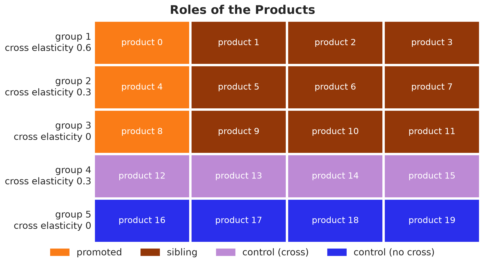
Groups \(1\), \(2\) and \(3\) have a promoted product and three siblings, and groups \(4\) and \(5\) are the two controls. The next table counts the products of each role.
products.group_by("role").len().sort("role")| role | len |
|---|---|
| str | u32 |
| "control (cross)" | 4 |
| "control (no cross)" | 4 |
| "promoted" | 3 |
| "sibling" | 9 |
The four roles cover the \(20\) products.
Besides the true parameters and the demand, the calendar is the only random input. We draw it from a small generative model, one Bernoulli per product and week, and append the planned horizon. The deterministic log_price site is the log of the price relative to the list price, \(\log(1 - 0.3)\) in a promotion week and zero otherwise.
The log prices are the only covariates of the demand model. The covariates array holds them with one row per day and one column per product.
def calendar_generator(
setup: Setup, promotion: Promotion, promo_future: Float[Array, "horizon n_products"]
) -> None:
"""Chain-wide promotion weeks of the history, followed by the planned horizon."""
with (
numpyro.plate("product", setup.n_products, dim=-1),
numpyro.plate("week", setup.t_obs // 7, dim=-2),
):
promo_week = numpyro.sample("promo_week", dist.Bernoulli(promotion.weekly_prob))
promo_history = jnp.repeat(promo_week, 7, axis=0)
promo = jnp.concatenate([promo_history, promo_future], axis=0)
numpyro.deterministic("promo", promo)
numpyro.deterministic("log_price", promo * jnp.log(1.0 - promotion.discount))
rng_key, key_calendar = random.split(rng_key)
calendar = Predictive(calendar_generator, num_samples=1)(
key_calendar, setup, promotion, promo_future
)
log_price = calendar["log_price"][0] # (duration, n_products)
assert log_price.shape == (setup.duration, setup.n_products)
promo_week_true = calendar["promo_week"][0] # (n_weeks, n_products)
assert promo_week_true.shape == (setup.t_obs // 7, setup.n_products)
promo_full = calendar["promo"][0] # (duration, n_products)
assert promo_full.shape == (setup.duration, setup.n_products)
# the covariates of the demand model: the log price of every product on every day
covariates = log_price
covariates_train = covariates[: setup.t_obs]
assert covariates_train.shape == (setup.t_obs, setup.n_products)The following figure shows the calendar as a heatmap, one row per product and one column per day. The panel on its right counts, for every product, the weeks in which it is on promotion and the weeks in which at least one of its siblings is. The helper sibling_on_promotion marks, for every product and every week (or day), whether at least one of its siblings is on promotion.
def sibling_on_promotion(
promo: Shaped[Array, "time n_products"],
) -> Bool[Array, "time n_products"]:
"""Entry (t, j) is true when at least one sibling of product j is on promotion."""
return (promo @ panel.sibling_matrix.astype(promo.dtype)) > 0
own_promo_weeks = promo_week_true.sum(axis=0)
sibling_promo_weeks = sibling_on_promotion(promo_week_true).sum(axis=0)
fig, axes = plt.subplots(
ncols=2, figsize=(16, 7), sharey=True, width_ratios=[4, 1], layout="constrained"
)
ax = axes[0]
# seaborn does not draw NaN cells, so the days without a promotion show the gray
# background of the axes
sns.heatmap(
jnp.where(promo_full.T > 0, 1.0, jnp.nan),
cmap=["C5"],
cbar=False,
xticklabels=28,
yticklabels=1,
ax=ax,
)
ax.tick_params(axis="y", rotation=0)
for group in range(1, setup.n_groups):
ax.axhline(
group * setup.n_per_group,
color="black",
label="group border" if group == 1 else None,
)
ax.axvline(setup.t_obs, color="black", linestyle="--", label="start of the horizon")
ax.set(xlabel="day", ylabel="product")
ax = axes[1]
# the rows of the heatmap are centered at product + 0.5
product_rows = jnp.arange(setup.n_products) + 0.5
ax.barh(product_rows - 0.2, own_promo_weeks, height=0.4, color="C5")
ax.barh(
product_rows + 0.2,
sibling_promo_weeks,
height=0.4,
color="C4",
label="weeks with a sibling on promotion",
)
ax.set(xlabel="weeks in the history")
# the heatmap has no legend entry of its own, so we add one for its colored cells
handles = [
Patch(color="C5", label="promotion week"),
*axes[0].get_legend_handles_labels()[0],
*axes[1].get_legend_handles_labels()[0],
]
fig.legend(handles=handles, loc="outside lower center", ncol=4)
fig.suptitle("Promotion Calendar", fontsize=18, fontweight="bold");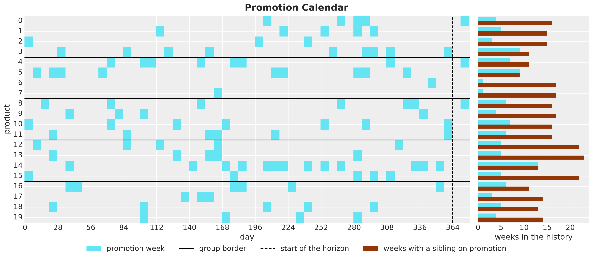
Here are two things to take from the calendar:
Own promotions. The products differ a lot in how often they are on promotion. Products \(6\) and \(7\) have a single promotion week, so the data say little about the response of their siblings to their price.
Sibling promotions. Every product has many weeks with a sibling on promotion. Those weeks are where the data say how much a product loses to its siblings.
In addition, here are three details of the last weeks of the history that matter later:
Group \(1\). Product \(3\) is on promotion in the last week, which is a sibling promotion week for products \(0\), \(1\) and \(2\).
Group \(3\). Products \(10\) and \(11\) are on promotion in the same week. This group has no cannibalization.
Group \(4\). Product \(14\) is on promotion in two of the last four weeks, which are sibling promotion weeks for the rest of the group.
Now that we have the covariates, we can describe the demand model.
Demand Model
Components
The demand model consists of the following components (very similar to the first post):
Expected Demand: Let \(\mu_{t,i}\) be the expected demand of series \(i = (s, j)\) on day \(t\).
Latent Level: Let \(\ell_{t,i}\) be its latent level, a random walk with initial level \(\ell_{0,i}\) and daily increments \(\delta_{t,i}\) whose scale \(\sigma_i\) we call the drift scale.
Fourier Features: Let \(f_t\) be the vector of Fourier features of the weekly cycle and \(\beta_j\) the Fourier coefficients of product \(j\), shared by its stores.
Log Relative Price: Let \(x_{t,k} = \log r_{t,k} \leq 0\) be the log relative price of product \(k\) on day \(t\), where \(r_{t,k}\) is the price relative to the list price.
The log of the expected demand is
\[\begin{align*} \log \mu_{t,i} &= \ell_{t,i} + f_t^\top \beta_j + \sum_{k \in g(j)} \gamma_{kj} \, x_{t,k}, \\ \ell_{t,i} &= \ell_{0,i} + \sum_{u \leq t} \delta_{u,i}, \\ \delta_{u,i} &\sim \text{Normal}(0, \sigma_i). \end{align*}\]
Note that every Fourier feature sums to zero over a week. The weekly term \(f_t^\top \beta_j\) therefore averages to zero over a week for any \(\beta_j\), and it does not compete with the level for the average demand.
For this reason we do not put a zero-sum prior on \(\beta_j\), such as dist.ZeroSumNormal. It would also remove one of the six degrees of freedom of a weekly pattern. Weekday effects in place of the Fourier features would need such a prior.
Cross Elasticities
The sum runs over the products \(k\) of the group of \(j\), including \(j\) itself.
The coefficient \(\gamma_{kj}\) is the response of the demand of product \(j\) to the price of product \(k\), and the matrix \(\Gamma = (\gamma_{kj})\) is the elasticity matrix of the group. Its diagonal entry \(\gamma_{jj}\) is the own elasticity of product \(j\), the response of its demand to its own price. We expect it to be negative. An off-diagonal entry \(\gamma_{kj}\) with \(k \neq j\) is a cross elasticity.
A promotion of a sibling \(k\) makes \(x_{t,k}\) negative, so a positive \(\gamma_{kj}\) lowers the demand of \(j\). In other words, positive cross elasticities are cannibalization. Taking exponentials, a \(30\%\) cut on product \(k\) multiplies the demand of a sibling \(j\) by \(0.7^{\gamma_{kj}}\), so a cross elasticity of \(0.6\) is a loss of \(1 - 0.7^{0.6} \approx 19\%\).
How do we read a negative cross elasticity? It works the other way, so a promotion of \(k\) raises the demand of \(j\). This happens when the two products are complements rather than substitutes, or when the promotion brings customers to the shelf who also buy \(j\), which is often called a halo effect. The prior of the next section allows both signs, and in our panel the true cross elasticities are zero or positive.
Note that \(\Gamma\) does not have to be symmetric, since the response of product \(j\) to the price of product \(k\) can differ from the response of \(k\) to the price of \(j\). In our panel the true cross elasticities are constant within a group, so the true \(\Gamma\) is symmetric, but the model estimates one coefficient for each of the \(12\) ordered pairs of a group.
Also, \(\Gamma\) is not positive definite, because its diagonal is negative. A parameterization for covariance matrices, such as a Cholesky factor, does not apply here.
Likelihood
The likelihood is a negative binomial with a concentration \(\phi_j\) per product:
\[D_{t,i} \sim \text{NegativeBinomial}(\mu_{t,i}, \phi_j).\]
Prior Elicitation
Next, we elicit the priors of the global parameters. The model has six families of them. For four of them we state what we believe on the scale of the data and use PreliZ to turn the statement into a distribution.
The function pz.maxent returns the member of a family that puts a given mass between two bounds (the one with maximum entropy, so it adds nothing beyond our constraints). Here is the reasoning for each of them.
intercept: \(\exp(\ell_{0,i})\) is the demand per day of series \(i\) at the start of the history at the list price, with the weekly pattern averaged out on the log scale (the Fourier terms sum to zero over a week). We believe it lies between \(10\) and \(300\) units for every series of the chain, a wide range for products that sell tens of units per day. So we ask for a Normal on \(\ell_{0,i}\) with \(94\%\) of its mass between \(\log 10\) and \(\log 300\).drift_scale: the level of a series is a random walk, so after \(T\) days the standard deviation of the log level is \(\sigma_i \sqrt{T}\), and \(\exp(\sigma_i \sqrt{T})\) is the typical factor by which the level has moved. Over the \(364\) days of history we believe that factor lies between \(1.04\) and \(2\), that is, from a \(4\%\) move to a doubling. So we ask for a LogNormal on \(\sigma_i\) with \(94\%\) of its mass between \(\log(1.04) / \sqrt{T}\) and \(\log(2) / \sqrt{T}\).concentration: the negative binomial adds \(\mu_{t,i}^2 / \phi_j\) to the Poisson variance, so the extra day-to-day noise is a fraction \(1 / \sqrt{\phi_j}\) of the level. We believe that fraction lies between \(0.1\) and \(0.5\), which is \(\phi_j\) between \(4\) and \(100\). So we ask for a Gamma with \(94\%\) of its mass in that range.cross_scale: the cross elasticities share the prior \(\gamma_{kj} \sim \text{Normal}(0, \sigma_\gamma)\) for \(k \neq j\), centered at zero and shrunk by the common scale \(\sigma_\gamma\), so the data can also say that a group has no cannibalization. Consider a sibling whose cross elasticity is one prior standard deviation, \(\gamma_{kj} = \sigma_\gamma\). Under a \(30\%\) cut on product \(k\), this sibling loses a share \(1 - 0.7^{\sigma_\gamma}\) of its demand. We believe that this typical loss lies below \(15\%\), which is a cross elasticity of \(\log(0.85) / \log(0.7) \approx 0.46\). So we ask for a HalfNormal on \(\sigma_\gamma\) with \(94\%\) of its mass between \(0\) and \(0.46\).
The other two priors we state directly.
beta: each Fourier coefficient gets a \(\text{Normal}(0, 0.3)\), so two standard deviations multiply the demand by \(e^{\pm 0.6}\), between \(0.55\) and \(1.8\).elasticity: the own elasticity of every product gets a \(\text{Normal}(-1, 1)\). A higher price should lower the demand, so we center the prior on a negative value, and the standard deviation of \(1\) leaves a positive value possible if the data ask for it.
We run the four elicitations and write the six priors as NumPyro distributions. Every model component gets its own small tuple of priors, and the Priors tuple collects them.
The model, the true parameters, the guide and the checks all refer to the sample sites by name. We keep the names in one place, the Site class.
class Site:
"""Names of the sample sites of the demand model."""
INTERCEPT: Final = "intercept"
DRIFT_SCALE: Final = "drift_scale"
DRIFT: Final = "drift"
BETA: Final = "beta"
ELASTICITY: Final = "elasticity"
CROSS_SCALE: Final = "cross_scale"
CROSS_ELASTICITY: Final = "cross_elasticity"
CONCENTRATION: Final = "concentration"
# two of the sites that `predict` registers
OBS: Final = "obs"
FORECAST: Final = "forecast"
# the sites that we compare with the true parameters
PARAMETERS: Final = (
INTERCEPT,
DRIFT_SCALE,
BETA,
ELASTICITY,
CONCENTRATION,
CROSS_SCALE,
CROSS_ELASTICITY,
)
class LevelPriors(NamedTuple):
"""Priors of the random walk level."""
intercept: dist.Distribution
drift_scale: dist.Distribution
class SeasonalityPriors(NamedTuple):
"""Prior of the weekly seasonality."""
beta: dist.Distribution
class PricePriors(NamedTuple):
"""Priors of the price effects."""
elasticity: dist.Distribution
cross_scale: dist.Distribution
class DispersionPriors(NamedTuple):
"""Prior of the dispersion of the likelihood."""
concentration: dist.Distribution
class Priors(NamedTuple):
"""Priors of the demand model, one tuple per component."""
level: LevelPriors
seasonality: SeasonalityPriors
price: PricePriors
dispersion: DispersionPriors
intercept_bounds = (math.log(10), math.log(300))
drift_bounds = (
math.log(1.04) / math.sqrt(setup.t_obs),
math.log(2) / math.sqrt(setup.t_obs),
)
concentration_bounds = (4.0, 100.0)
cross_bounds = (0.0, math.log(0.85) / math.log(1 - promotion.discount))
def elicit(
family: pz.distributions.distributions.Continuous,
bounds: tuple[float, float],
mass: float = 0.94,
) -> pz.distributions.distributions.Continuous:
"""Maximum entropy member of `family` with `mass` between the bounds."""
return pz.maxent(family, *bounds, mass=mass, plot=False)
# the four elicited priors and the two that we state directly
intercept_prior = elicit(pz.Normal(), intercept_bounds)
drift_prior = elicit(pz.LogNormal(), drift_bounds)
concentration_prior = elicit(pz.Gamma(), concentration_bounds)
cross_prior = elicit(pz.HalfNormal(), cross_bounds)
beta_prior = pz.Normal(0.0, 0.3)
elasticity_prior = pz.Normal(-1.0, 1.0)
priors = Priors(
level=LevelPriors(
intercept=dist.Normal(intercept_prior.mu, intercept_prior.sigma),
drift_scale=dist.LogNormal(drift_prior.mu, drift_prior.sigma),
),
seasonality=SeasonalityPriors(beta=dist.Normal(beta_prior.mu, beta_prior.sigma)),
price=PricePriors(
elasticity=dist.Normal(elasticity_prior.mu, elasticity_prior.sigma),
cross_scale=dist.HalfNormal(cross_prior.sigma),
),
dispersion=DispersionPriors(
concentration=dist.Gamma(concentration_prior.alpha, concentration_prior.beta)
),
)
pl.DataFrame(
{
"site": [
Site.INTERCEPT,
Site.DRIFT_SCALE,
Site.BETA,
Site.ELASTICITY,
Site.CROSS_SCALE,
Site.CONCENTRATION,
],
"prior": [
str(prior)
for prior in (
intercept_prior,
drift_prior,
beta_prior,
elasticity_prior,
cross_prior,
concentration_prior,
)
],
}
)| site | prior |
|---|---|
| str | str |
| "intercept" | "Normal(mu=4, sigma=0.904)" |
| "drift_scale" | "LogNormal(mu=-4.26, sigma=0.603)" |
| "beta" | "Normal(mu=0, sigma=0.3)" |
| "elasticity" | "Normal(mu=-1, sigma=1)" |
| "cross_scale" | "HalfNormal(sigma=0.242)" |
| "concentration" | "Gamma(alpha=2.77, beta=0.0578)" |
Next, we plot the four elicited densities in two rows. The top row shows each prior on the parameter scale, with the two bounds that we asked for. The bottom row shows the same prior on the data scale, the scale of the quantity that we reasoned about in the bullets above.
To move a density from one scale to the other we use the change of variables formula. Let \(\eta\) be a parameter with prior density \(q\), and let \(\psi = u(\eta)\) be the quantity on the data scale, where \(u\) is a monotone transform with inverse \(u^{-1}\). Then the density of \(\psi\) is
\[q_\psi(\psi) = q\left(u^{-1}(\psi)\right) \left| \frac{d u^{-1}}{d \psi}(\psi) \right|.\]
The first factor is the prior density at the parameter value that maps to \(\psi\). The second factor corrects for how much the transform stretches or compresses the axis around that value, so that the new density still integrates to one (the Jacobian of the transform).
Here are the four transforms, one per elicited prior. NumPyro has them as bijectors in numpyro.distributions.transforms. Every bijector knows its inverse and its Jacobian, so we do not write them by hand.
intercept: \(\psi = \exp(\ell_0)\) is the demand per day, anExpTransform.drift_scale: \(\psi = \exp(\sigma \sqrt{T})\) is the level multiplier after one year, anAffineTransformwith scale \(\sqrt{T}\) followed by anExpTransform.concentration: \(\psi = \phi^{-1/2}\) is the extra noise as a fraction of the level, aPowerTransformwith exponent \(-1/2\).cross_scale: \(\psi = 1 - 0.7^{\sigma_\gamma} = 1 - \exp(\sigma_\gamma \log 0.7)\) is the sibling loss at one prior standard deviation. It is anAffineTransformwith scale \(\log 0.7\), then anExpTransform, then anAffineTransformthat maps \(y\) to \(1 - y\).
In the code, the data_scale dictionary stores, for every parameter, the label of the quantity on the data scale, the NumPyro prior and the transform \(u\). We use them in two places:
\(u\) maps the two elicited bounds to the data scale, where we draw them as dashed lines.
dist.TransformedDistribution(prior, u)is the distribution of \(\psi\), and itslog_probevaluates the change of variables formula.
class DataScale(NamedTuple):
"""A prior and the quantity on the data scale that we reasoned on."""
label: str
prior: dist.Distribution
transform: transforms.Transform # u, from the parameter to the data scale
priors_elicited = {
Site.INTERCEPT: (intercept_prior, intercept_bounds),
Site.DRIFT_SCALE: (drift_prior, drift_bounds),
Site.CONCENTRATION: (concentration_prior, concentration_bounds),
Site.CROSS_SCALE: (cross_prior, cross_bounds),
}
data_scale = {
Site.INTERCEPT: DataScale(
"demand per day at the list price",
priors.level.intercept,
transforms.ExpTransform(),
),
Site.DRIFT_SCALE: DataScale(
"level multiplier after one year",
priors.level.drift_scale,
transforms.ComposeTransform(
[
transforms.AffineTransform(0.0, math.sqrt(setup.t_obs)),
transforms.ExpTransform(),
]
),
),
Site.CONCENTRATION: DataScale(
"extra noise as a fraction of the level",
priors.dispersion.concentration,
transforms.PowerTransform(-0.5),
),
Site.CROSS_SCALE: DataScale(
"sibling loss at one prior sd",
priors.price.cross_scale,
transforms.ComposeTransform(
[
transforms.AffineTransform(0.0, math.log(1 - promotion.discount)),
transforms.ExpTransform(),
transforms.AffineTransform(1.0, -1.0),
]
),
),
}
fig, axes = plt.subplots(nrows=2, ncols=4, figsize=(18, 8), layout="constrained")
for j, (name, (prior, bounds)) in enumerate(priors_elicited.items()):
label, site_prior, transform = data_scale[name]
# parameter scale: the elicited density and the bounds
ax = axes[0, j]
x = jnp.linspace(*prior.ppf([0.001, 0.999]), 500)
ax.plot(x, prior.pdf(x), color="C0", label="elicited density")
ax.axvline(bounds[0], color="black", linestyle="--", label="elicited bounds")
ax.axvline(bounds[1], color="black", linestyle="--")
ax.set(title=f"{name}\n{prior}", yticks=[])
# data scale: the density of the transformed prior at the same grid points,
# shown up to the larger of the 99th percentile and the upper bound
ax = axes[1, j]
bounds_data = transform(jnp.asarray(bounds))
upper = 1.05 * max(
float(transform(jnp.asarray(prior.ppf([0.01, 0.99]))).max()),
float(bounds_data.max()),
)
x_data = transform(x)
prior_data = dist.TransformedDistribution(site_prior, transform)
ax.plot(x_data, jnp.exp(prior_data.log_prob(x_data)), color="C0")
for bound in bounds_data:
ax.axvline(bound, color="black", linestyle="--")
ax.set(title=label, yticks=[], xlim=(None, upper))
axes[1, 3].xaxis.set_major_formatter(PercentFormatter(xmax=1, decimals=0))
axes[0, 0].set(ylabel="parameter scale")
axes[1, 0].set(ylabel="data scale")
fig.legend(*axes[0, 0].get_legend_handles_labels(), loc="outside lower center", ncol=2)
fig.suptitle("Elicited Priors", fontsize=18, fontweight="bold");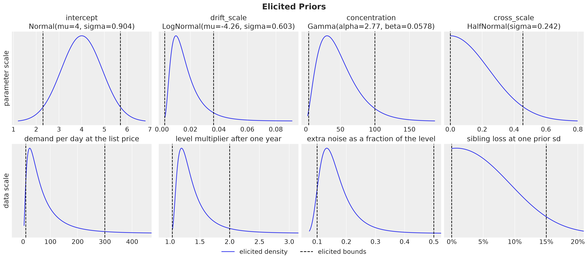
The titles of the top row give the four elicited priors, and the bottom row shows what they say on the data scale.
Demand, level and noise. The mass lies where we asked for it, between the dashed bounds.
Sibling loss. The density is the highest near zero and decreases from there, so the prior favors small cross effects and leaves room for large ones.
Note that pz.maxent fixes the total mass between the bounds and not the two tails. The Gamma puts almost all of its remaining \(6\%\) above \(100\), which is the tail below \(0.1\) in the noise panel. The HalfNormal starts at zero, so all of its remaining \(6\%\) lies above a loss of \(15\%\).
Model Components
We write each component as a function that samples its own sites. The first three return a term of the log mean with shape (duration, n_series), and the last one returns the concentration of every series:
local_level: the random walk level \(\ell_{t,i}\).weekly_seasonality: the Fourier term \(f_t^\top \beta_j\).price_effects: the own and cross-price term \(\sum_k \gamma_{kj} x_{t,k}\).dispersion: the concentration \(\phi_j\) of the likelihood.
The function make_demand_model adds the terms. It builds the generator of the data (with the true parameters fixed through do) and the two forecasting models from the same code, so the true parameters are in the support of the cross model. The cross flag adds or removes the cross-price term.
The log prices are the covariates of the model. The Fourier features depend on the day alone, so the model builder takes them once for the whole duration. A call on the first \(n\) days reads their first \(n\) rows.
The prices are chain-wide, so the cross-price term of a series depends on its product only. We compute it as the matrix product of the log prices with the elasticity matrix \(\Gamma\). The own elasticities form the diagonal of \(\Gamma\), and the cross_elasticity site over the pairs of siblings fills the off-diagonal cells, shrunk toward zero by the common scale cross_scale.
The likelihood has a log link, so predict gets a function from the log mean to the distribution. It takes a distribution directly only for additive noise around the predictor.
def local_level(
h: Horizon, setup: Setup, priors: LevelPriors
) -> Float[Array, "duration n_series"]:
"""Random-walk level per series: the initial level plus the summed increments."""
with numpyro.plate("series", setup.n_series):
intercept = numpyro.sample(Site.INTERCEPT, priors.intercept)
drift_scale = numpyro.sample(Site.DRIFT_SCALE, priors.drift_scale)
drift = innovations(h, Site.DRIFT, dist.Normal(0.0, drift_scale))
return intercept + jnp.cumsum(drift, axis=-2)
def weekly_seasonality(
fourier: Float[Array, "duration n_fourier"],
setup: Setup,
panel: Panel,
priors: SeasonalityPriors,
) -> Float[Array, "duration n_series"]:
"""Weekly Fourier seasonality with one coefficient vector per product."""
with (
numpyro.plate("fourier", fourier.shape[1], dim=-2),
numpyro.plate("product", setup.n_products, dim=-1),
):
beta = numpyro.sample(Site.BETA, priors.beta)
return (fourier @ beta)[:, panel.series_to_product]
def price_effects(
log_price: Float[Array, "duration n_products"],
setup: Setup,
panel: Panel,
priors: PricePriors,
*,
cross: bool,
) -> Float[Array, "duration n_series"]:
"""Own price elasticities, plus the cross elasticities of the pairs of siblings."""
with numpyro.plate("product", setup.n_products):
elasticity = numpyro.sample(Site.ELASTICITY, priors.elasticity)
matrix = jnp.diag(elasticity)
if cross:
cross_scale = numpyro.sample(Site.CROSS_SCALE, priors.cross_scale)
with numpyro.plate("pair", panel.pair_source.size):
cross_elasticity = numpyro.sample(
Site.CROSS_ELASTICITY, dist.Normal(0.0, cross_scale)
)
# matrix[k, j]: the response of the demand of product j to the price of k
matrix = matrix.at[panel.pair_source, panel.pair_target].set(cross_elasticity)
# effect[t, i] = sum_k matrix[k, j(i)] * log_price[t, k]
return (log_price @ matrix)[:, panel.series_to_product]
def dispersion(
setup: Setup, panel: Panel, priors: DispersionPriors
) -> Float[Array, " n_series"]:
"""Negative binomial concentration per product, gathered to the series axis."""
with numpyro.plate("product", setup.n_products):
concentration = numpyro.sample(Site.CONCENTRATION, priors.concentration)
return concentration[panel.series_to_product]
def make_demand_model(
setup: Setup,
panel: Panel,
priors: Priors,
fourier: Float[Array, "all_days n_fourier"],
*,
cross: bool,
) -> ForecastModel:
"""Build the demand model as a plain `(covariates, data=None)` function."""
def demand_model(
covariates: Float[Array, "duration n_products"],
data: Int[Array, "t_obs n_series"] | None = None,
) -> None:
h = Horizon.from_data(covariates, data)
log_rate = (
local_level(h, setup, priors.level)
# the Fourier features of the first days: every call starts at day zero
+ weekly_seasonality(
fourier[: h.duration], setup, panel, priors.seasonality
)
# the covariates are the log prices of the products
+ price_effects(covariates, setup, panel, priors.price, cross=cross)
)
concentration = dispersion(setup, panel, priors.dispersion)
def likelihood(
log_mean: Float[Array, "duration n_series"],
) -> dist.Distribution:
"""Negative binomial with a log link."""
return dist.NegativeBinomial2(jnp.exp(log_mean), concentration)
predict(h, likelihood, log_rate)
return demand_model
# three harmonics of the weekly cycle: every column sums to zero over a week
fourier = fourier_features(setup.duration, period=7.0, num_terms=3)
assert jnp.allclose(fourier[:7].sum(axis=0), 0.0, atol=1e-5)Next, let’s look at the graph of each component with numpyro.render_model. A graph shows the sample sites of a component as nodes, with their distributions, and the plates that repeat them as boxes. We render every component on the history, and we start with the level.
h_history = Horizon.from_data(covariates_train, None)
def add_title(graph: gr.Digraph, title: str) -> gr.Digraph:
"""Put a bold title above a rendered graph."""
graph.attr(label=f"<<b>{title}</b>>", labelloc="t", fontsize="18")
return graph
def render_component(component: Callable[[], Array], title: str) -> gr.Digraph:
"""Graph of the sample sites of one component of the demand model."""
graph = numpyro.render_model(component, render_distributions=True)
return add_title(graph, title)
render_component(partial(local_level, h_history, setup, priors.level), "Local Level")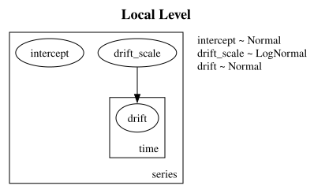
The series plate repeats the initial level intercept and the drift_scale for the \(200\) series. Inside it, the time plate repeats the daily increments drift over the \(364\) days of the history, with the drift scale of their series as the standard deviation.
Next, the weekly seasonality:
render_component(
partial(
weekly_seasonality,
fourier[: setup.t_obs],
setup,
panel,
priors.seasonality,
),
"Weekly Seasonality",
)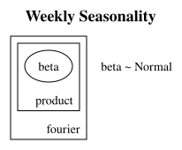
The Fourier coefficients beta sit in two plates, one over the \(6\) Fourier features and one over the \(20\) products, so the stores of a product share its weekly pattern.
Now the price effects of the cross model:
render_component(
partial(
price_effects,
covariates_train,
setup,
panel,
priors.price,
cross=True,
),
"Price Effects",
)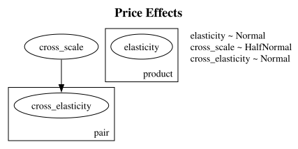
The own elasticity has one value per product. The cross_scale sits outside every plate, since one scale is shared by all groups, and it is the standard deviation of the \(60\) values of cross_elasticity in the pair plate. The independent model has the elasticity site only.
Finally, the concentration of the likelihood:
render_component(partial(dispersion, setup, panel, priors.dispersion), "Dispersion")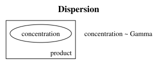
The model has one concentration per product.
Here is the whole model with the cross-price term, the one that generates the data in the next subsection:
generator = make_demand_model(setup, panel, priors, fourier, cross=True)
add_title(
numpyro.render_model(
generator, model_args=(covariates_train,), render_distributions=True
),
"Demand Model",
)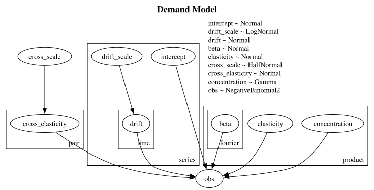
The four components come together in obs, the demand of every series and day.
Now that we have the demand model structure, we can describe the true parameters and the data.
True Parameters and Data
We set the cross elasticities by hand and draw the other true values from a small generative model, as we did for the calendar.
Initial levels. The product baselines are \(\text{LogUniform}(20, 150)\) units per day and the store multipliers \(\text{Uniform}(0.6, 1.5)\). The initial level of a series is the log of their product, between \(\log 12\) and \(\log 225\).
Own elasticities, concentrations and drift scales. They are uniform between \(-2\) and \(-1\), between \(20\) and \(40\), and between \(0.005\) and \(0.02\).
Seasonality. The Fourier coefficients are \(\text{Normal}(0, 0.05)\), a mild weekly pattern.
Cross elasticities. They are constant within a group, at the values of the Panel and Calendar section. Their root mean square over the \(60\) pairs is \(0.33\).
The intercepts, the drift scales and the concentrations lie inside the ranges that we elicited. A cross elasticity of \(0.6\) is a sibling loss of \(19\%\), above the \(15\%\) that we elicited for the typical loss. The root mean square of the true cross elasticities, \(0.33\), is a loss of about \(11\%\), inside the elicited range.
def true_parameter_generator(setup: Setup, panel: Panel, n_fourier: int) -> None:
"""True parameters of the demand model, apart from the cross elasticities."""
with numpyro.plate("product", setup.n_products):
base_product = numpyro.sample("base_product", dist.LogUniform(20.0, 150.0))
numpyro.sample(Site.ELASTICITY, dist.Uniform(-2.0, -1.0))
numpyro.sample(Site.CONCENTRATION, dist.Uniform(20.0, 40.0))
with numpyro.plate("store", setup.n_stores):
store_multiplier = numpyro.sample("store_multiplier", dist.Uniform(0.6, 1.5))
with numpyro.plate("series", setup.n_series):
numpyro.sample(Site.DRIFT_SCALE, dist.Uniform(0.005, 0.02))
with (
numpyro.plate("fourier", n_fourier, dim=-2),
numpyro.plate("product", setup.n_products, dim=-1),
):
numpyro.sample(Site.BETA, dist.Normal(0.0, 0.05))
numpyro.deterministic(
Site.INTERCEPT,
jnp.log(
base_product[panel.series_to_product]
* store_multiplier[panel.series_to_store]
),
)
rng_key, key_truth = random.split(rng_key)
truth = Predictive(true_parameter_generator, num_samples=1)(
key_truth, setup, panel, fourier.shape[1]
)
group_cross = jnp.asarray(setup.group_cross)
true_params: dict[str, Array] = {
**{
name: truth[name][0]
for name in [
Site.INTERCEPT,
Site.DRIFT_SCALE,
Site.BETA,
Site.ELASTICITY,
Site.CONCENTRATION,
]
},
# fixed for completeness: the pairs below are fixed too, so it has no effect
Site.CROSS_SCALE: jnp.asarray(0.3),
Site.CROSS_ELASTICITY: group_cross[panel.product_to_group[panel.pair_source]],
}
products = products.with_columns(
baseline=pl.Series(truth["base_product"][0].tolist()),
elasticity=pl.Series(true_params[Site.ELASTICITY].tolist()),
concentration=pl.Series(true_params[Site.CONCENTRATION].tolist()),
cross_elasticity=pl.Series(
[setup.group_cross[group] for group in panel.product_to_group.tolist()]
),
)
products| product | group | role | baseline | elasticity | concentration | cross_elasticity |
|---|---|---|---|---|---|---|
| i64 | i64 | str | f64 | f64 | f64 | f64 |
| 0 | 1 | "promoted" | 44.727 | -1.858 | 39.259 | 0.600 |
| 1 | 1 | "sibling" | 22.641 | -1.780 | 31.772 | 0.600 |
| 2 | 1 | "sibling" | 38.889 | -1.313 | 20.753 | 0.600 |
| 3 | 1 | "sibling" | 108.511 | -1.919 | 34.508 | 0.600 |
| 4 | 2 | "promoted" | 103.298 | -1.656 | 22.604 | 0.300 |
| 5 | 2 | "sibling" | 76.234 | -1.331 | 30.069 | 0.300 |
| 6 | 2 | "sibling" | 60.300 | -1.958 | 29.356 | 0.300 |
| 7 | 2 | "sibling" | 148.866 | -1.929 | 30.910 | 0.300 |
| 8 | 3 | "promoted" | 35.381 | -1.844 | 25.697 | 0.000 |
| 9 | 3 | "sibling" | 37.535 | -1.522 | 27.333 | 0.000 |
| 10 | 3 | "sibling" | 49.510 | -1.204 | 22.825 | 0.000 |
| 11 | 3 | "sibling" | 51.047 | -1.809 | 27.462 | 0.000 |
| 12 | 4 | "control (cross)" | 77.712 | -1.909 | 28.711 | 0.300 |
| 13 | 4 | "control (cross)" | 50.691 | -1.783 | 20.245 | 0.300 |
| 14 | 4 | "control (cross)" | 93.871 | -1.005 | 31.893 | 0.300 |
| 15 | 4 | "control (cross)" | 69.305 | -1.915 | 30.908 | 0.300 |
| 16 | 5 | "control (no cross)" | 118.372 | -1.019 | 34.985 | 0.000 |
| 17 | 5 | "control (no cross)" | 38.385 | -1.597 | 24.002 | 0.000 |
| 18 | 5 | "control (no cross)" | 97.857 | -1.860 | 37.524 | 0.000 |
| 19 | 5 | "control (no cross)" | 99.047 | -1.480 | 37.742 | 0.000 |
We draw the demand of the whole duration once, from the generator with the true parameters fixed. We keep the realized level increments of the history, because the distribution of the true future conditions on them. The observed data are the first \(364\) days and the realized future the last \(15\).
rng_key, key_data = random.split(rng_key)
draw = Predictive(
do(generator, data=true_params),
num_samples=1,
return_sites=[Site.OBS, Site.DRIFT],
)(key_data, covariates)
demand_full = draw[Site.OBS][0] # (duration, n_series)
assert demand_full.shape == (setup.duration, setup.n_series)
drift_true = draw[Site.DRIFT][0][: setup.t_obs] # (t_obs, n_series)
assert drift_true.shape == (setup.t_obs, setup.n_series)
data = demand_full[: setup.t_obs].astype(jnp.int32)
assert data.shape == (setup.t_obs, setup.n_series)
demand_future_true = demand_full[setup.t_obs :].astype(jnp.float32)
assert demand_future_true.shape == (setup.horizon, setup.n_series)The next figure shows the four products of group \(1\) in store \(1\) over the last eight weeks of the history and the horizon. The strips at the bottom of each panel mark the promotion days of the product and of its siblings.
def mark_promotions(ax: plt.Axes, product: int, start: int) -> None:
"""Mark the own and the sibling promotion days of a product from `start` on."""
own = promo_full[start:, product] > 0
sibling = sibling_on_promotion(promo_full[start:])[:, product]
# two strips along the bottom of the axes, in axes coordinates, clear of the data
for mask, color, bottom, label in [
(own, "C5", 0.0, "own promotion"),
(sibling, "C4", 0.04, "sibling promotion"),
]:
ax.broken_barh(
[(start + day - 0.5, 1.0) for day in jnp.flatnonzero(mask).tolist()],
(bottom, 0.04),
transform=ax.get_xaxis_transform(),
color=color,
label=label,
)
ax.margins(y=0.12)
def plot_demand(ax: plt.Axes, series: int, start: int) -> None:
"""History from `start`, realized future and promotion days of one series."""
ax.plot(
days[start : setup.t_obs],
demand_full[start : setup.t_obs, series],
color="black",
label="observed history",
)
ax.plot(
days_future, demand_future_true[:, series], color="C1", label="realized future"
)
ax.axvline(
setup.t_obs - 0.5, color="black", linestyle="--", label="start of the horizon"
)
mark_promotions(ax, int(panel.series_to_product[series]), start)
fig, axes = plt.subplots(
nrows=2, ncols=2, figsize=(14, 8), sharex=True, layout="constrained"
)
# the four products of group 1 in store 1 are the first four series
for series, ax in enumerate(axes.flat):
plot_demand(ax, series, start=setup.t_obs - 56)
ax.set(title=f"product {series} ({product_role[series]})", ylabel="units")
for ax in axes[-1]:
ax.set(xlabel="day")
fig.legend(*axes[0, 0].get_legend_handles_labels(), loc="outside lower center", ncol=3)
fig.suptitle("Group 1 in Store 1", fontsize=18, fontweight="bold");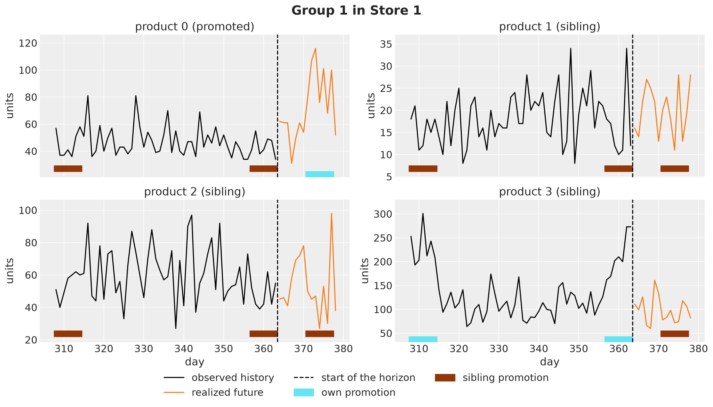
The demand of the promoted product jumps in the second week of the horizon, and the siblings dip in the same week, most visibly products \(2\) and \(3\). This dip is the cannibalization.
The history shows the same pattern. Product \(3\) was on promotion in the last week of the history, so that week is a sibling promotion week for products \(0\), \(1\) and \(2\), and in this store the dip is clearest on product \(2\). Keep this in mind, because the forecast of these three products starts right after a sibling promotion.
Evaluation Scenarios
In the first post we scored the plans on held-out draws of the posterior that built them, which cannot tell us what happens when the forecast is wrong.
Here we know the true process, so we can do better. We draw \(1{,}000\) scenarios from the generator with the true parameters and the realized level increments of the history fixed. Only the future increments and the observation noise are fresh, so these scenarios are draws from the distribution of the true future given the history.
We call them the evaluation scenarios and score every plan on them. This tests every plan against the misspecification of its model.
Later, every model gives \(1{,}000\) forecast draws as well. We use the same number on both sides, so that the comparisons between the forecasts and the evaluation scenarios, for example of their standard deviations, rest on the same number of draws.
# the number of evaluation scenarios and of forecast draws of every model
N_SCENARIOS = 1_000
rng_key, key_eval = random.split(rng_key)
true_future_generator = do(generator, data={**true_params, Site.DRIFT: drift_true})
demand_eval = Predictive(
true_future_generator, num_samples=N_SCENARIOS, return_sites=[Site.FORECAST]
)(key_eval, covariates, data)[Site.FORECAST].astype(jnp.float32)
assert demand_eval.shape == (N_SCENARIOS, setup.horizon, setup.n_series)Forecasting Model
We fit two models to the same history. The cross model is the demand model of the previous section. The independent model is the same model without the cross-price term, so it has no link between the products of a group.
The following graph shows the two paths from a promotion to the demand of a group of two products. The price of product A moves its own demand through the own elasticity and the demand of product B through the cross elasticity. The red arrows are what the independent model drops.
dag = gr.Digraph()
dag.node("xA", label="x_A\n(price of A)", color="#2a2eec80", style="filled")
dag.node("xB", label="x_B\n(price of B)", color="#2a2eec80", style="filled")
dag.node("DA", label="D_A\n(demand of A)", color="#328c0680", style="filled")
dag.node("DB", label="D_B\n(demand of B)", color="#328c0680", style="filled")
dag.edge("xA", "DA", label="own")
dag.edge("xB", "DB", label="own")
dag.edge("xA", "DB", label="cross", color="red")
dag.edge("xB", "DA", label="cross", color="red")
dag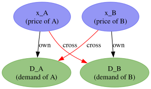
Here is an important observation: the independent model is misspecified on the history as well as on the horizon. In the history, every sibling on promotion lowers the demand of a product with cannibalization by \(10\%\) or \(19\%\) in that week. The independent model has no term for these dips, so it has to explain them with what it has: the level of the series, the drift scale that lets the level move, and the noise of the likelihood.
We check in the Parameter Recovery section what this does to its estimates.
Both models take the same covariates and data. The cross model has the graph of the Model Components section, and the independent model drops its cross_scale and cross_elasticity sites.
model_independent: ForecastModel = make_demand_model(
setup, panel, priors, fourier, cross=False
)
model_cross: ForecastModel = make_demand_model(
setup, panel, priors, fourier, cross=True
)Prior Predictive Checks
Before we fit the models, we draw demand paths from the priors of the cross model and compare them with the history. We plot the \(50\%\) and \(94\%\) equal-tailed intervals (ETI) of \(300\) draws for the first product of groups \(1\) to \(4\) in store \(1\).
The axis is logarithmic because the log link gives the prior a long upper tail. Every band of this notebook is an equal-tailed interval, which runs between two percentiles.
def lighten_bands(
pc: az.PlotCollection,
x: str,
prob_alpha: tuple[tuple[float, float], ...] = ((0.5, 0.5), (CI_PROB, 0.25)),
) -> None:
"""Set the alpha of the credible bands of a `plot_lm` collection."""
bands = pc.viz["ci_band"][x]
for prob, alpha in prob_alpha:
for band in bands.sel(prob=prob).values.flat:
band.set_alpha(alpha)
check_series = jnp.arange(4) * setup.n_per_group # the first product of groups 1 to 4
check_labels = [
f"series {i} (product {i}, group {g + 1})"
for g, i in enumerate(check_series.tolist())
]
def plot_predictive_check(
obs_draws: Shaped[Array, "sample t_obs n_check"], title: str, yscale: str = "linear"
) -> None:
"""Bands of predictive draws of the check series against the history."""
tree = az.from_dict(
{
# the group name is the one `plot_lm` reads by default
"posterior_predictive": {"obs": obs_draws[None].transpose(0, 1, 3, 2)},
"observed_data": {"obs": data[:, check_series].T},
# `plot_lm` sorts this array in place, and JAX arrays are immutable, so
# we pass a writable numpy copy
"constant_data": {
"day": np.array(jnp.tile(days[: setup.t_obs].astype(float), (4, 1)))
},
},
coords={"series": check_labels, "time": days[: setup.t_obs]},
dims={"obs": ["series", "time"], "day": ["series", "time"]},
)
pc = az.plot_lm(
tree,
x="day",
y="obs",
y_obs="obs",
plot_dim="time",
smooth=False,
ci_prob=(0.5, CI_PROB),
visuals={
"ci_band": {"color": "C0"},
"observed_scatter": False,
"pe_line": False,
"xlabel": False,
"ylabel": False,
},
col_wrap=2,
figure_kwargs={"figsize": (14, 8), "sharex": True, "sharey": True},
)
lighten_bands(pc, "day")
for k, label in enumerate(check_labels):
ax = pc.get_target("day", {"series": label})
bands = pc.viz["ci_band"]["day"].sel(series=label)
bands.sel(prob=0.5).item().set_label("50% ETI")
bands.sel(prob=CI_PROB).item().set_label(f"{CI_PROB:.0%} ETI")
ax.plot(
days[: setup.t_obs],
data[:, check_series[k]],
color="black",
label="observed",
)
ax.set(
title=label,
yscale=yscale,
xlabel="day" if k >= 2 else "",
ylabel="units" if k % 2 == 0 else "",
)
fig = pc.viz["figure"].item()
fig.legend(*ax.get_legend_handles_labels(), loc="outside lower center", ncol=3)
fig.suptitle(title, fontsize=18, fontweight="bold")
rng_key, key_prior = random.split(rng_key)
prior_obs = Predictive(model_cross, num_samples=300, return_sites=[Site.OBS])(
key_prior, covariates_train
)[Site.OBS]
plot_predictive_check(
prior_obs[..., check_series], "Prior Predictive Check", yscale="log"
);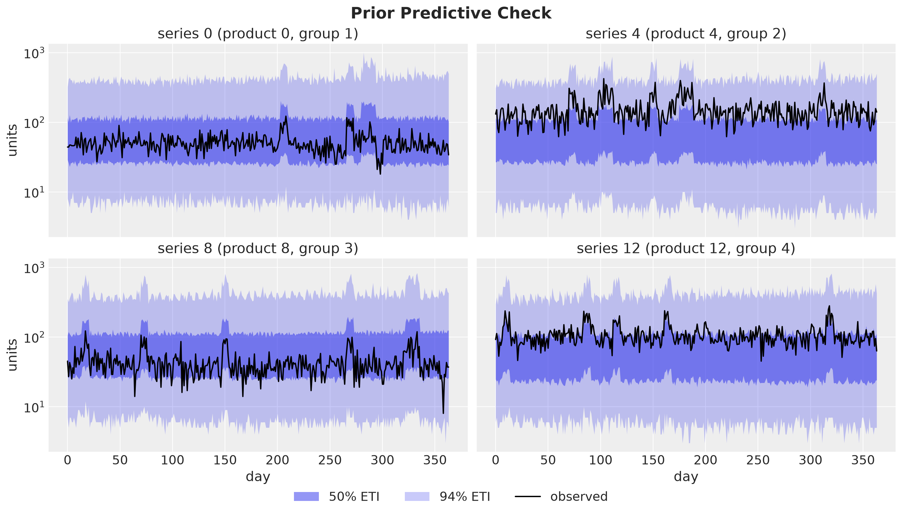
The priors put the demand on the right order of magnitude. The four observed series stay inside the wide band on every day, and the bumps of the bands are the own promotion weeks of each product. Nothing here is implausible for products that sell tens of units per day, so we move on to the fit.
Model Fitting
Variational Inference
Each model has about \(73K\) latent variables (\(200 \times 364 = 72{,}800\) level increments, one per series and day, plus about \(600\) other parameters). That puts NUTS out of reach for a notebook, so we use stochastic variational inference (SVI), which also makes it cheap to fit two models.
SVI approximates the posterior with a guide, a family of simple distributions whose parameters we fit by maximizing the evidence lower bound (ELBO). For more details, see “Introduction to Stochastic Variational Inference with NumPyro”. The simplest guide is the mean-field Normal guide AutoNormal, which gives every latent variable its own Normal and ignores the posterior correlations. A guide of this form tends to underestimate the posterior variance, see Blei, Kucukelbir and McAuliffe (2017).
We know in advance where the strongest posterior correlations are, so we make three choices before the fit.
The non-centered parameterization. We write the level increments as \(\delta_{t,i} = \sigma_i \, z_{t,i}\), with standardized increments \(z_{t,i} \sim \text{Normal}(0, 1)\), and the cross elasticities in the same way with their common scale. The guide then works with standardized values, whose scale does not depend on the scale parameter.
LocScaleReparammakes this change of variables for us, so the model code stays as we wrote it.The cosine basis for the random walk. The data pin down the level of a series, that is, the partial sums of its increments, and leave the split of a change between consecutive increments loose. So the increments of a random walk are strongly correlated a posteriori. The
time_reparamwrapper ofnumpyro_forecast, a port of thetime_reparamoption of Pyro’s forecasting module, samples the discrete cosine transform (DCT) of the increments instead of the increments themselves. The transform is orthonormal, so the model is the same. The cosine coefficients are much less correlated a posteriori, so a mean-field guide over them loses less. For more details, see “Haar and DCT Time Reparameterization in NumPyro”.A full-rank guide on the price effects. Within a substitution group, the own elasticity of a product and the cross elasticities to and from its siblings explain the same promotion weeks, so their posteriors are correlated. In the non-centered parameterization,
cross_scaleand the standardized cross elasticities are correlated as well. WithAutoGuideListwe combine two guides. AnAutoMultivariateNormal, a Normal with a full covariance matrix, covers the price-effect sites, and anAutoNormalcovers the rest.
Note that a guide list splits the model by sites, not by entries of a site. So the full-rank block covers the price effects of all groups at once, and its covariance contains the correlations within every group.
To assess model convergence and goodness of fit, we run four checks:
The loss trace. The negative ELBO has to settle.
Parameter recovery. The posterior has to cover the true parameters, including the level at the end of the history that the forecast starts from.
Posterior predictive check. The predictive distribution has to follow the history.
Forecast width. We compare the width of the predictive distribution with the width of the evaluation scenarios.
The function reparameterize wraps a model in the non-centered parameterization and then in the cosine basis.
The function make_guide builds the guide list. Each part sees the model through handlers.block with an explicit list of site names. The full-rank part sees the price-effect sites and the two plates around them, and for the mean-field part we hide the price-effect sites and the deterministic sites that the reparameterizations create.
The function fit_svi runs Adam on the negative ELBO for a fixed number of steps and returns a Fit tuple with the model, the guide and the result. The step size follows a cosine decay from \(0.01\) to \(0.0005\), so that the noise of the gradient moves the last iterates less. We initialize every part at the median of a few prior draws. The FitConfig tuple holds these settings.
class FitConfig(NamedTuple):
"""Settings of the variational fit."""
n_svi_steps: int = 10_000
step_size: float = 0.01 # initial step size of Adam
step_size_final_ratio: float = 0.05 # final step size over the initial one
class Model(StrEnum):
"""The two forecasting models."""
INDEPENDENT = "independent"
CROSS = "cross"
class Fit(NamedTuple):
"""A model in the coordinates of the fit, its guide and the SVI result."""
model: ForecastModel
guide: AutoGuideList
result: SVIRunResult
def reparameterize(model: ForecastModel) -> ForecastModel:
"""Non-centered increments and cross elasticities, then the cosine basis."""
non_centered = handlers.reparam(
model,
config={
Site.DRIFT: LocScaleReparam(0),
Site.CROSS_ELASTICITY: LocScaleReparam(0),
},
)
return time_reparam(non_centered, "dct")
# the latent sites of the full-rank part of the guide and the plates around them
FULL_RANK_SITES = [
Site.ELASTICITY,
Site.CROSS_SCALE,
f"{Site.CROSS_ELASTICITY}_decentered",
]
FULL_RANK_PLATES = ["product", "pair"]
# the sites that the reparameterizations turn into deterministic sites
DETERMINISTIC_SITES = [Site.DRIFT, f"{Site.DRIFT}_decentered", Site.CROSS_ELASTICITY]
def make_guide(model: ForecastModel) -> AutoGuideList:
"""Full-rank Normal guide on the price effects, mean-field on the rest."""
init_loc_fn = init_to_median(num_samples=15)
seeded = handlers.seed(model, rng_seed=0)
guide = AutoGuideList(model, init_loc_fn=init_loc_fn)
guide.append(
AutoMultivariateNormal(
handlers.block(seeded, expose=[*FULL_RANK_SITES, *FULL_RANK_PLATES]),
init_loc_fn=init_loc_fn,
)
)
guide.append(
AutoNormal(
handlers.block(seeded, hide=[*FULL_RANK_SITES, *DETERMINISTIC_SITES]),
init_loc_fn=init_loc_fn,
)
)
return guide
def fit_svi(model: ForecastModel, rng_key: PRNGKeyArray, fit: FitConfig) -> Fit:
"""Fit the guide of `make_guide` to `model` on the history."""
guide = make_guide(model)
schedule = optax.cosine_decay_schedule(
fit.step_size, fit.n_svi_steps, alpha=fit.step_size_final_ratio
)
svi = SVI(model, guide, optax.adam(schedule), Trace_ELBO())
result = svi.run(
rng_key,
fit.n_svi_steps,
covariates_train,
data,
)
return Fit(model=model, guide=guide, result=result)
fit_config = FitConfig()Model Fits
We reparameterize and fit both models, with the same key and the same settings.
%%time
rng_key, key_svi = random.split(rng_key)
fits = {
Model.INDEPENDENT: fit_svi(reparameterize(model_independent), key_svi, fit_config),
Model.CROSS: fit_svi(reparameterize(model_cross), key_svi, fit_config),
}100%|██████████| 10000/10000 [00:26<00:00, 374.99it/s, init loss: 1144102.8750, avg. loss [9501-10000]: 313288.7188]
100%|██████████| 10000/10000 [00:26<00:00, 373.04it/s, init loss: 1120808.0000, avg. loss [9501-10000]: 311709.9062]
CPU times: user 3min 53s, sys: 1min 46s, total: 5min 39s
Wall time: 1min 5sThe following table counts the latent variables of each part of the guide.
pl.DataFrame(
[
{
"model": model.value,
"full-rank part": fits[model].result.params["auto_loc"].size,
"mean-field part": sum(
value.size
for name, value in fits[model].result.params.items()
if name.endswith("_auto_loc")
),
}
for model in Model
]
).with_columns(total=pl.col("full-rank part") + pl.col("mean-field part"))| model | full-rank part | mean-field part | total |
|---|---|---|---|
| str | i64 | i64 | i64 |
| "independent" | 20 | 73340 | 73360 |
| "cross" | 81 | 73340 | 73421 |
The full-rank part is small. It holds the own elasticities in the independent model, and the cross model adds the cross scale and the cross elasticities. Almost all of the latent variables are in the mean-field part, and nearly all of those are level increments.
The following figure shows the loss of the two fits, the negative ELBO at every step, in the style of the introduction to SVI. The upper panel shows all steps on a log scale, and the lower panel zooms into the last \(2{,}000\) steps.
MODEL_COLORS = {Model.INDEPENDENT: "C3", Model.CROSS: "C2"}
LAST_STEPS = 2_000
fig, axes = plt.subplots(
nrows=2,
ncols=1,
sharex=True,
sharey=False,
figsize=(10, 7),
layout="constrained",
)
for model in Model:
losses = fits[model].result.losses
steps = jnp.arange(1, losses.size + 1)
axes[0].plot(steps, losses, color=MODEL_COLORS[model], label=model)
axes[1].plot(steps[-LAST_STEPS:], losses[-LAST_STEPS:], color=MODEL_COLORS[model])
axes[0].set(title="all steps", ylabel="negative ELBO", yscale="log")
axes[1].set(title=f"last {LAST_STEPS:,} steps", xlabel="step", ylabel="negative ELBO")
fig.legend(loc="outside lower center", ncol=2)
fig.suptitle("ELBO Loss", fontsize=18, fontweight="bold");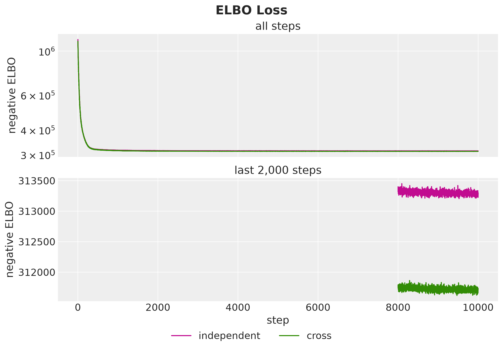
Convergence. Both losses drop fast in the first few hundred steps and change little over the last \(2{,}000\) steps. A flat loss does not say how good the approximation is, and we check that in the Parameter Recovery section.
Model comparison. The cross model ends with the lower loss on the same data. This is what the cross-price term adds.
For each fit we draw \(1{,}000\) posterior samples of the latent sites with draw_posterior and forecast the horizon with forecast. The guide samples the latent sites only, so we get the deterministic sites, the level increments in the time domain and the cross elasticities, from the model with Predictive. We keep the parameters, the level of every series at the end of the history and the forecast scenarios of each fit in a FitDraws tuple.
class FitDraws(NamedTuple):
"""Posterior draws of one fit."""
parameters: dict[str, Array] # the parameter sites, on their natural scale
level_end: Float[Array, "sample n_series"] # level at the end of the history
scenarios: Float[Array, "sample horizon n_series"] # forecast of the horizon
def draw_fit(
rng_key: PRNGKeyArray, fit: Fit, num_samples: int, batch_size: int = 250
) -> FitDraws:
"""Parameters, level at the end of the history and forecast of one fit."""
key_latent, key_deterministic, key_forecast = random.split(rng_key, 3)
latent = draw_posterior(key_latent, fit.guide, fit.result.params, num_samples)
deterministic = Predictive(
fit.model,
posterior_samples=latent,
return_sites=[Site.DRIFT, Site.CROSS_ELASTICITY],
)(key_deterministic, covariates_train, data)
draws = latent | deterministic
scenarios = forecast(
key_forecast,
fit.model,
latent,
data,
covariates,
batch_size=batch_size,
).astype(jnp.float32)
return FitDraws(
parameters={name: draws[name] for name in Site.PARAMETERS if name in draws},
level_end=draws[Site.INTERCEPT] + draws[Site.DRIFT].sum(axis=1),
scenarios=scenarios,
)
rng_key, key_fit = random.split(rng_key)
draws = {model: draw_fit(key_fit, fits[model], N_SCENARIOS) for model in Model}
for model in Model:
assert draws[model].scenarios.shape == (N_SCENARIOS, setup.horizon, setup.n_series)Next, let’s look at the posterior of cross_scale, the common scale of the cross elasticities. A scale estimated from the \(60\) true cross elasticities would be close to their root mean square, \(0.33\), which we draw as a dashed line.
cross_rms = float(jnp.sqrt((true_params[Site.CROSS_ELASTICITY] ** 2).mean()))
pc = az.plot_dist(
xr.Dataset(
{
Site.CROSS_SCALE: (
("sample",),
draws[Model.CROSS].parameters[Site.CROSS_SCALE],
)
}
),
sample_dims=["sample"],
kind="kde",
visuals={"dist": {"color": MODEL_COLORS[Model.CROSS]}},
figure_kwargs={"figsize": (9, 4)},
)
az.add_lines(
pc,
values={Site.CROSS_SCALE: cross_rms},
aes_by_visuals={"ref_line": []},
visuals={"ref_line": {"color": "black", "linestyle": "--"}},
)
pc.viz["figure"].item().suptitle(
"Posterior of the Cross Scale", fontsize=18, fontweight="bold"
);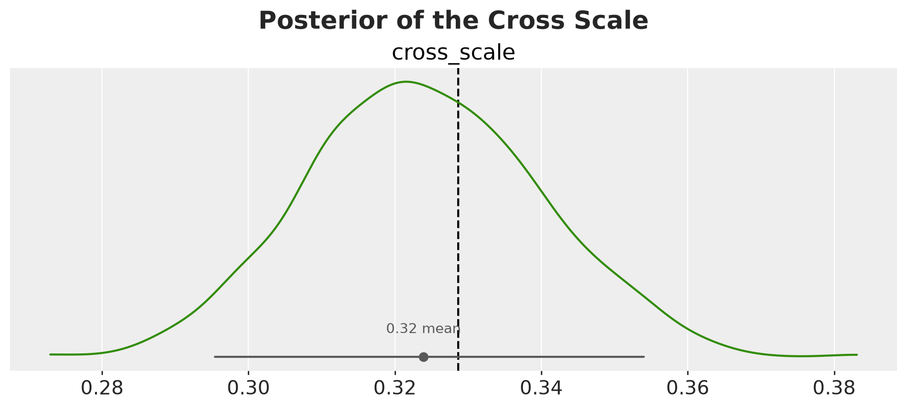
The posterior of cross_scale is narrow, and its \(94\%\) interval covers the root mean square of the true cross elasticities, which is good!
Parameter Recovery
We compare the posterior of each model with the true parameters and with the true level of every series at the end of the history.
Elasticities
First, we look at the own elasticities. We plot the posterior of elasticity minus its true value for every product and both models, so that a well-recovered parameter has an interval that covers zero.
def minus_truth(model: Model, site: str, dim: str, labels: list[str]) -> xr.Dataset:
"""Posterior draws of `site` under `model` minus the true value."""
error = draws[model].parameters[site] - true_params[site]
return xr.Dataset({site: (("sample", dim), error)}, coords={dim: labels})
product_labels = [str(product) for product in range(setup.n_products)]
pc = az.plot_forest(
{
model: minus_truth(model, Site.ELASTICITY, "product", product_labels)
for model in Model
},
sample_dims=["sample"],
labels=["product"],
color=[MODEL_COLORS[model] for model in Model],
figure_kwargs={"figsize": (10, 8)},
)
ax = pc.viz["plot"].sel(column="forest").item()
ax.axvline(0.0, color="black")
ax.set(xlabel="posterior minus truth")
pc.add_legend("model", title="", loc="outside lower center", ncol=2)
pc.viz["figure"].item().suptitle(
"Own Elasticities Against the Truth", fontsize=18, fontweight="bold"
);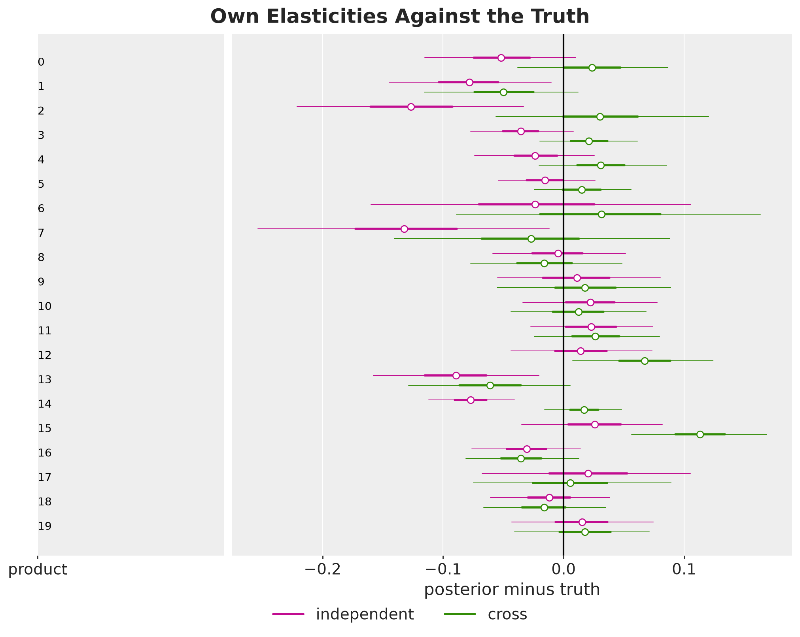
The dots are the posterior means and the thick and thin bars the \(50\%\) and \(94\%\) intervals. The following figure averages the posterior mean minus the truth over the four products of each group, for both models. The function plot_metric_bars draws one bar panel per quantity, with one color per model and the value on every bar, and we use it for the next figures too.
class RecoveryMetric(StrEnum):
"""Names of the scores of a posterior against the truth."""
ELASTICITY_ERROR = "own elasticity: posterior mean minus truth"
COVERAGE = f"coverage of the truth ({CI_PROB:.0%} interval)"
RATIO = "posterior mean / truth (median)"
STANDARDIZED_ERROR = "error of the posterior mean / posterior sd (root mean square)"
LEVEL_ERROR = "mean error of the level (log scale)"
CONCENTRATION_RATIO = "concentration: posterior mean / truth"
DRIFT_RATIO = "drift scale: posterior mean / truth"
def by_group(values: Float[Array, " n"], groups: Int[Array, " n"]) -> dict[str, float]:
"""Mean of the entries of each group, given the group index of every entry."""
return {
f"group {group + 1}": float(values[groups == group].mean())
for group in range(setup.n_groups)
}
def format_label(value: ScalarLike, fmt: str) -> str:
"""Format a bar label. A value that rounds to zero gets no minus sign."""
text = fmt.format(value)
return fmt.format(0.0) if text == fmt.format(-0.0) else text
def plot_metric_bars(
frame: pl.DataFrame,
references: dict[str, float | None],
x: str,
title: str,
nrows: int = 2,
fmt: str = "{:.2f}",
) -> None:
"""One bar panel per column of `references`, with one color per model."""
ncols = math.ceil(len(references) / nrows)
fig, axes = plt.subplots(
nrows=nrows,
ncols=ncols,
figsize=(9 * ncols, 4 * nrows),
squeeze=False,
layout="constrained",
)
for ax, (metric, reference) in zip(axes.flat, references.items(), strict=True):
sns.barplot(
data=frame,
x=x,
y=metric,
hue="model",
hue_order=[model.value for model in Model],
palette=MODEL_COLORS,
errorbar=None,
legend=False,
ax=ax,
)
if reference is not None:
ax.axhline(reference, color="black", linestyle="--")
ax.margins(y=0.15)
# the height of a label in data units, about 10% of the axis
low, high = ax.get_ylim()
clearance = 0.1 * (high - low)
for container in ax.containers:
labels = ax.bar_label(
container, fmt=partial(format_label, fmt=fmt), fontsize=14, padding=2
)
if reference is None:
continue
# a label that would sit on the reference line goes to its far side
for label, bar in zip(labels, container, strict=True):
height = bar.get_height()
# the label of a negative bar is below the end of the bar
distance = (reference - height) * (1 if height >= 0 else -1)
if 0 <= distance < clearance:
label.xy = (label.xy[0], reference)
ax.set(title=metric, xlabel="", ylabel="")
handles = [Patch(color=MODEL_COLORS[model], label=model) for model in Model]
fig.legend(handles=handles, loc="outside lower center", ncol=len(Model))
fig.suptitle(title, fontsize=18, fontweight="bold")
plot_metric_bars(
pl.DataFrame(
[
{
"model": model.value,
"group": group,
RecoveryMetric.ELASTICITY_ERROR: error,
}
for model in Model
for group, error in by_group(
(
draws[model].parameters[Site.ELASTICITY]
- true_params[Site.ELASTICITY]
).mean(axis=0),
panel.product_to_group,
).items()
]
),
{RecoveryMetric.ELASTICITY_ERROR: 0.0},
x="group",
title="Error of the Own Elasticities by Group",
nrows=1,
);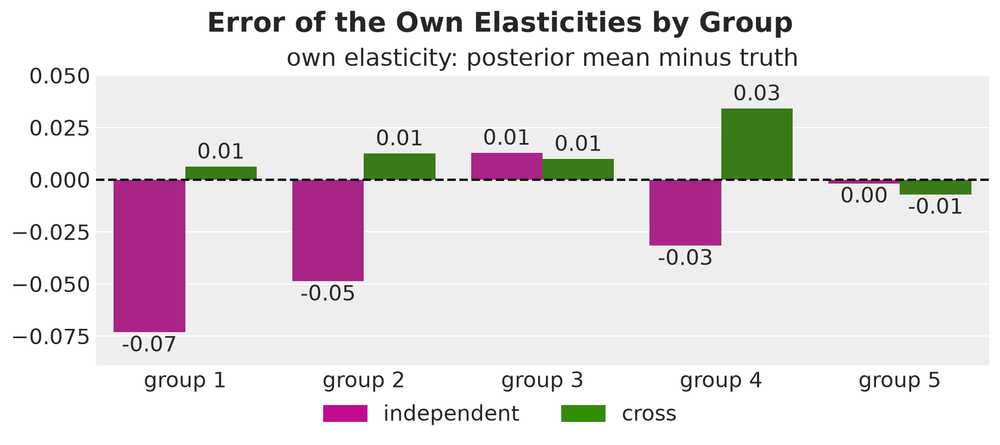
The two models differ in the groups with cannibalization.
Cross model. The errors are close to zero in four groups and slightly positive in group \(4\).
Independent model. The own elasticities are too negative in the three groups with cannibalization, most of all in groups \(1\) and \(2\). In groups \(3\) and \(5\) the two models agree.
This bias is consistent with a level that follows the sibling dips down. Measured against a level that is too low, the lift of an own promotion week looks larger than it is.
In the forest plot the widest intervals belong to products \(6\) and \(7\) under both models. These are the two products with a single promotion week in the history.
Next, we plot the cross elasticities of the cross model in the same form.
pair_group = panel.product_to_group[panel.pair_source]
pair_labels = [
f"group {group + 1}: {source}->{target}"
for group, source, target in zip(
pair_group.tolist(),
panel.pair_source.tolist(),
panel.pair_target.tolist(),
strict=True,
)
]
pc = az.plot_forest(
{Model.CROSS: minus_truth(Model.CROSS, Site.CROSS_ELASTICITY, "pair", pair_labels)},
sample_dims=["sample"],
labels=["pair"],
color=[MODEL_COLORS[Model.CROSS]],
figure_kwargs={"figsize": (10, 14)},
)
ax = pc.viz["plot"].sel(column="forest").item()
ax.axvline(0.0, color="black")
ax.set(xlabel="posterior minus truth")
pc.viz["figure"].item().suptitle(
"Cross Elasticities Against the Truth", fontsize=18, fontweight="bold"
);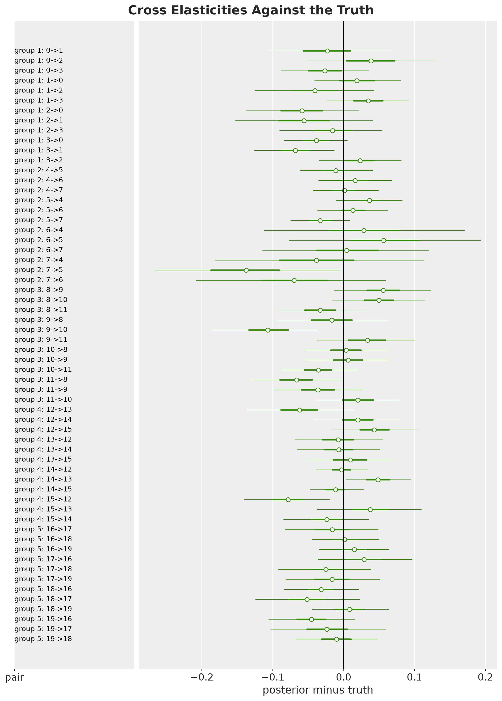
A label k->j is the response of the demand of product j to the price of product k.
Coverage. The intervals cover the truth for \(90\%\) of the pairs, a little below the \(94\%\) of a calibrated interval.
Few promotion weeks. The widest intervals belong to pairs that start at product \(6\) or \(7\), again the two products with a single promotion week. The more promotion weeks a product has, the more the data say about what it takes from its siblings.
Next, we compare each group with its true cross elasticity. For every posterior draw we average the \(12\) cross elasticities of a group, which gives one posterior distribution per group. The dashed lines are the true values.
group_labels = [f"group {group + 1}" for group in range(setup.n_groups)]
# (sample, group): the mean of the 12 cross elasticities of each group in every draw
cross_by_group = jnp.stack(
[
draws[Model.CROSS]
.parameters[Site.CROSS_ELASTICITY][:, pair_group == group]
.mean(1)
for group in range(setup.n_groups)
],
axis=-1,
)
pc = az.plot_dist(
xr.Dataset(
{"cross elasticity": (("sample", "group"), cross_by_group)},
coords={"group": group_labels},
),
sample_dims=["sample"],
kind="kde",
col_wrap=3,
visuals={
"dist": {"color": MODEL_COLORS[Model.CROSS]},
"point_estimate_text": False,
},
figure_kwargs={"figsize": (12, 7), "sharey": False},
)
for group, label in enumerate(group_labels):
ax = pc.get_target("cross elasticity", {"group": label})
ax.axvline(
setup.group_cross[group], color="black", linestyle="--", label="true value"
)
ax.set(title=label)
pc.viz["figure"].item().legend(
*ax.get_legend_handles_labels(), loc="outside lower center"
)
pc.viz["figure"].item().suptitle(
"Mean Cross Elasticity of Each Group", fontsize=18, fontweight="bold"
);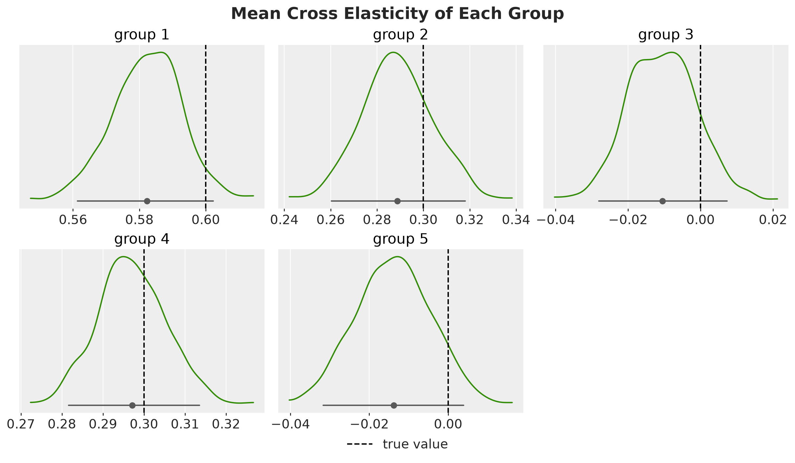
The model finds the cannibalization of groups \(1\), \(2\) and \(4\), a little below the truth in groups \(1\) and \(2\), and finds none in groups \(3\) and \(5\). Every \(94\%\) interval contains the true value.
Level and Concentration
Next, we look at the families of parameters. For each family and each model, the next figure shows three quantities:
Coverage of the truth. The share of true values inside the \(94\%\) interval. A calibrated posterior covers about \(94\%\) of them.
Posterior mean over the truth. The median ratio of the posterior mean to the true value, over the entries whose true value is not zero. An unbiased posterior mean gives a ratio of about one.
Standardized error. The error of the posterior mean divided by the posterior standard deviation, as a root mean square over the entries. A calibrated posterior gives about one, and a value of two means that the errors are twice as large as the posterior says.
The dashed lines mark these three reference values.
def coverage_of_truth(
draws: Float[Array, " sample *shape"], truth: Float[Array, " *shape"]
) -> float:
"""Share of the entries whose true value lies inside the central interval."""
tail = (1 - CI_PROB) / 2
lower, upper = jnp.quantile(draws, jnp.array([tail, 1 - tail]), axis=0)
return float(((truth >= lower) & (truth <= upper)).mean())
def recovery_ratio(
draws: Float[Array, " sample *shape"], truth: Float[Array, " *shape"]
) -> float:
"""Median over the entries of the posterior mean divided by the truth."""
nonzero = truth != 0
return float(jnp.median(draws.mean(axis=0)[nonzero] / truth[nonzero]))
def standardized_error(
draws: Float[Array, " sample *shape"], truth: Float[Array, " *shape"]
) -> float:
"""Root mean square of the error of the posterior mean in posterior sds."""
z_score = (draws.mean(axis=0) - truth) / draws.std(axis=0)
return float(jnp.sqrt((z_score**2).mean()))
recovery = pl.DataFrame(
[
{
"model": model.value,
"parameter": site,
RecoveryMetric.COVERAGE: coverage_of_truth(
draws[model].parameters[site], true_params[site]
),
RecoveryMetric.RATIO: recovery_ratio(
draws[model].parameters[site], true_params[site]
),
RecoveryMetric.STANDARDIZED_ERROR: standardized_error(
draws[model].parameters[site], true_params[site]
),
}
for model in Model
for site in [
Site.ELASTICITY,
Site.CONCENTRATION,
Site.DRIFT_SCALE,
Site.CROSS_ELASTICITY,
]
if site in draws[model].parameters
]
)
plot_metric_bars(
recovery,
{
RecoveryMetric.COVERAGE: CI_PROB,
RecoveryMetric.RATIO: 1.0,
RecoveryMetric.STANDARDIZED_ERROR: 1.0,
},
x="parameter",
title="Recovery of the Parameters",
nrows=3,
);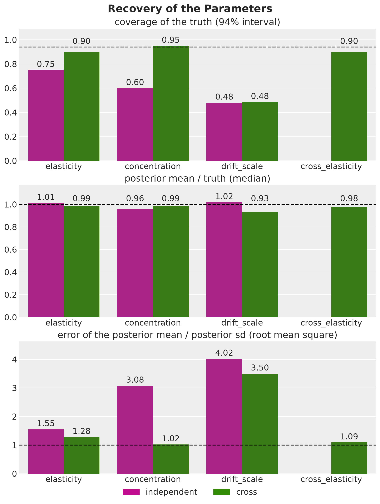
For the parameters we see the following.
Cross model. The elasticities and the concentration are close to calibrated. The coverage is near \(94\%\), the posterior means are close to the truth and the standardized errors are close to one, a little above it for the own elasticities.
Independent model. It loses coverage on the own elasticities and on the concentration, which is consistent with a model that has to explain the sibling dips without a term for them.
Drift scale. Under both models the intervals cover the truth for only about half of the series, and the errors are several times the posterior standard deviation. The coverage is the same under both models, so the low coverage does not come from the cross-price term. The size of the drift scale differs between the models, and we look at it by group below.
Why is the coverage of the drift scale so low? We did not isolate the cause, and here is the likely one. The drift scale of a series multiplies its \(364\) standardized increments, so a larger scale with smaller increments gives the same level path. In the posterior the scale and the increments therefore depend on each other.
The mean-field part of the guide gives the scale its own Normal and drops this dependence, and a guide of this form tends to underestimate the posterior variance. The cross scale has the same structure, but it sits in the full-rank part of the guide, which keeps the dependence.
Next, we look at the level of every series at the end of the history, the quantity the forecast starts from. The next figure shows the coverage of the true level by the \(94\%\) interval and the mean error of the posterior mean of the level on the log scale, the bias.
level_end_true = true_params[Site.INTERCEPT] + drift_true.sum(axis=0)
level_error = {
model: draws[model].level_end.mean(axis=0) - level_end_true for model in Model
}
plot_metric_bars(
pl.DataFrame(
[
{
"model": model.value,
RecoveryMetric.COVERAGE: coverage_of_truth(
draws[model].level_end, level_end_true
),
RecoveryMetric.LEVEL_ERROR: float(level_error[model].mean()),
}
for model in Model
]
),
{RecoveryMetric.COVERAGE: CI_PROB, RecoveryMetric.LEVEL_ERROR: 0.0},
x="model",
title="Recovery of the Level at the End of the History",
fmt="{:.3f}",
);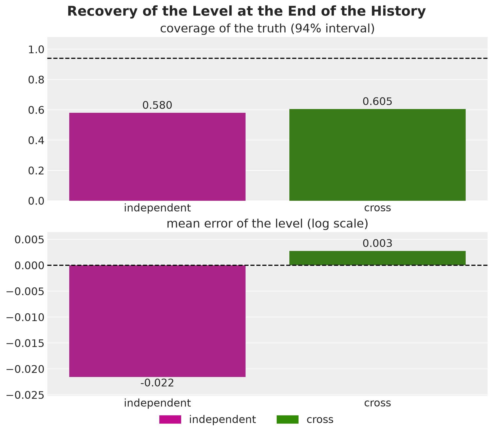
Overconfidence. Under both models the \(94\%\) intervals cover the true level for only about \(60\%\) of the series. The guide is overconfident about the level, which is what we expect from its mean-field part.
Bias. The cross model has almost no bias, and the independent model is about \(2\%\) low on average. The forecast starts from this level and carries it forward, so a bias here stays in the forecast over the whole horizon.
Finally, we split three quantities by group, since the groups differ in how much cannibalization their history holds. The quantities are the ratios of the posterior means of the concentration and of the drift scale to the truth, and the mean error of the level.
series_group = panel.product_to_group[panel.series_to_product]
plot_metric_bars(
pl.DataFrame(
[
{
"model": model.value,
"group": label,
RecoveryMetric.CONCENTRATION_RATIO: concentration_ratio,
RecoveryMetric.DRIFT_RATIO: drift_ratio,
RecoveryMetric.LEVEL_ERROR: level_bias,
}
for model in Model
for label, concentration_ratio, drift_ratio, level_bias in zip(
group_labels,
by_group(
draws[model].parameters[Site.CONCENTRATION].mean(axis=0)
/ true_params[Site.CONCENTRATION],
panel.product_to_group,
).values(),
by_group(
draws[model].parameters[Site.DRIFT_SCALE].mean(axis=0)
/ true_params[Site.DRIFT_SCALE],
series_group,
).values(),
by_group(level_error[model], series_group).values(),
strict=True,
)
]
),
{
RecoveryMetric.CONCENTRATION_RATIO: 1.0,
RecoveryMetric.DRIFT_RATIO: 1.0,
RecoveryMetric.LEVEL_ERROR: 0.0,
},
x="group",
title="Recovery by Group",
nrows=3,
);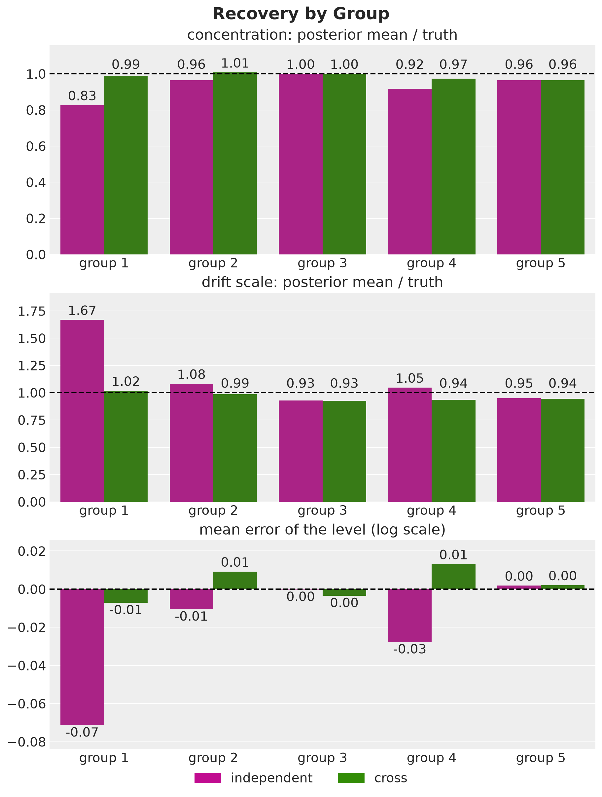
The split by group shows where the independent model goes wrong.
Concentration. The independent model underestimates it the most in group \(1\), where the sibling dips are the largest, and then in group \(4\). This is consistent with a model that treats the unexplained dips as noise.
Drift scale. The independent model puts it at \(1.67\) times the truth in group \(1\), and in groups \(2\) and \(4\) its estimate is a little above that of the cross model. A larger drift scale lets the level follow the sibling dips.
Level. The independent model is low in group \(1\), which combines the largest cross elasticity with a sibling promotion in the last week of the history, and to a lesser extent in group \(4\). The cross model is close to the truth in every group.
Groups without cannibalization. In groups \(3\) and \(5\) the two models agree on all three quantities.
We come back to the overconfidence about the level in the Out of Sample Evaluation section, where every plan costs more than on its own scenarios. We look at the bias of the independent model in the Demand Scenarios section.
Posterior Predictive Checks
Before we look at the forecast, we check the fit on the history. We draw \(300\) predictive paths of each model over the history and compute their CRPS over all days and all \(200\) series. We plot the paths of the cross model for the four series of the prior predictive check.
data_float = data.astype(jnp.float32)
ppc_obs, crps_in_sample = {}, {}
for model in Model:
rng_key, key_latent, key_ppc = random.split(rng_key, 3)
latent = draw_posterior(
key_latent, fits[model].guide, fits[model].result.params, num_samples=300
)
ppc_obs[model] = predict_in_sample(
key_ppc, fits[model].model, latent, covariates_train, batch_size=100
).astype(jnp.float32)
crps_in_sample[model] = float(crps_empirical(ppc_obs[model], data_float).mean())
# the band should contain close to its nominal share of the observations
assert 0.90 < float(eval_coverage(ppc_obs[model], data_float, alpha=CI_PROB)) < 0.98
plot_predictive_check(
ppc_obs[Model.CROSS][..., check_series],
"Posterior Predictive Check of the Cross Model\n"
f"In-Sample CRPS: Cross {crps_in_sample[Model.CROSS]:.2f}, "
f"Independent {crps_in_sample[Model.INDEPENDENT]:.2f}",
);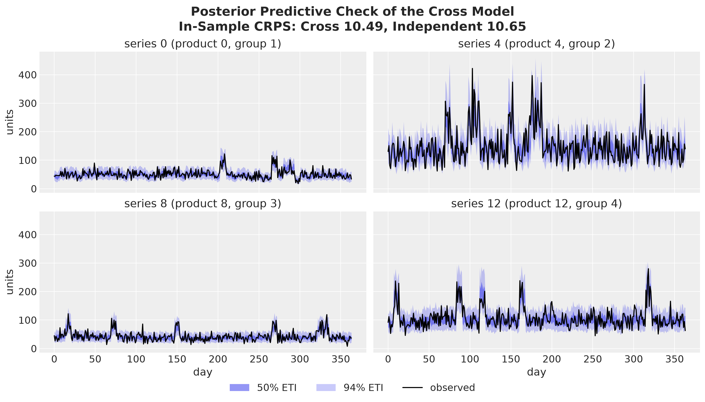
The bands follow the level of every series and show the bumps of the own promotion weeks. The assertion checks that the \(94\%\) band contains between \(90\%\) and \(98\%\) of the observations under each model, and the in-sample CRPS of the two models is almost the same. So on the history this check does not tell the two models apart.
Forecast Calibration
The last check compares the width of the forecast of each model with the width of the evaluation scenarios. For every series and day we divide the standard deviation of the model’s scenarios by the standard deviation of the evaluation scenarios. A ratio of one means that the forecast is as wide as the evaluation scenarios on a single day.
We compute the same ratio for the total demand of a series over the \(15\) days, which also depends on how the days of a path move together. We also score the one realized future with the coverage of the \(94\%\) interval and the CRPS. The next figure shows six quantities:
The standard deviation ratio, as the median over all series-days, over the siblings in the promotion week, and over the horizon totals of the series. The dashed line is one.
The coverage of the realized future by the \(94\%\) interval. The dashed line is \(94\%\).
The CRPS on the realized future.
The share of series-days with a standard deviation ratio above \(1.2\).
class CalibrationMetric(StrEnum):
"""Names of the calibration scores of a forecast."""
SD_RATIO = "sd ratio (median)"
SD_RATIO_SIBLINGS = "sd ratio, siblings in the promotion week (median)"
SD_RATIO_TOTAL = "sd ratio of the horizon total (median)"
COVERAGE = f"coverage of the realized future ({CI_PROB:.0%})"
CRPS = "CRPS on the realized future"
SHARE_WIDE = "share of series-days with sd ratio above 1.2"
sd_true = demand_eval.std(axis=0)
sd_total_true = demand_eval.sum(axis=1).std(axis=0)
width_ratio = {model: draws[model].scenarios.std(axis=0) / sd_true for model in Model}
total_ratio = {
model: draws[model].scenarios.sum(axis=1).std(axis=0) / sd_total_true
for model in Model
}
is_promo_day = promo_future.sum(axis=1) > 0
is_sibling_series = role_mask[Role.SIBLING][panel.series_to_product]
calibration = pl.DataFrame(
[
{
"model": model.value,
CalibrationMetric.SD_RATIO: float(jnp.median(width_ratio[model])),
CalibrationMetric.SD_RATIO_SIBLINGS: float(
jnp.median(width_ratio[model][is_promo_day][:, is_sibling_series])
),
CalibrationMetric.SD_RATIO_TOTAL: float(jnp.median(total_ratio[model])),
CalibrationMetric.COVERAGE: float(
eval_coverage(draws[model].scenarios, demand_future_true, alpha=CI_PROB)
),
CalibrationMetric.CRPS: float(
crps_empirical(draws[model].scenarios, demand_future_true).mean()
),
CalibrationMetric.SHARE_WIDE: float((width_ratio[model] > 1.2).mean()),
}
for model in Model
]
)
plot_metric_bars(
calibration,
{
CalibrationMetric.SD_RATIO: 1.0,
CalibrationMetric.SD_RATIO_SIBLINGS: 1.0,
CalibrationMetric.SD_RATIO_TOTAL: 1.0,
CalibrationMetric.COVERAGE: CI_PROB,
CalibrationMetric.CRPS: None,
CalibrationMetric.SHARE_WIDE: None,
},
x="model",
title="Forecast Calibration",
nrows=3,
);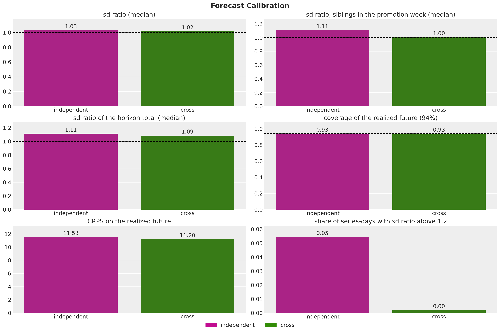
Aggregate scores. Over all series and days the two forecasts look alike. Both are about as wide as the evaluation scenarios, they cover the realized future equally often, and their CRPS differ by about \(3\%\).
Siblings in the promotion week. Here the two models part: the forecast of the independent model is too wide, and the forecast of the cross model has the width of the evaluation scenarios. This is consistent with the higher mean forecast and the lower concentration of the independent model, since both widen a negative binomial.
Wide series-days. The independent model is more than \(20\%\) too wide on a small share of the series-days, and the cross model on almost none.
Horizon totals. Both forecasts are somewhat wider than the evaluation scenarios. The evaluation scenarios condition on the true level of every series, which a model has to estimate, so a ratio above one is expected.
So the medians, the coverage and the CRPS over all series and days do not single out the independent model. The split by role and period does.
Next, we turn the forecasts into scenarios and plans.
Demand Scenarios
We now have three sets of demand paths, each of shape (scenarios, days, series).
Independent model. Its \(1{,}000\) forecast draws are the optimization scenarios of the plans built on it.
Cross model. Its \(1{,}000\) forecast draws are the optimization scenarios of the plans built on it.
True process. Its \(1{,}000\) draws are the evaluation scenarios, on which we score every plan.
Next, we set the capacity vector \(C = (C_1, \dots, C_S)\). Let \(R_s\) be the regular throughput of store \(s\), which we take as the median of its total daily demand over the last eight weeks of the history. The chain knows this number, and as a median it gives little weight to a single promotion week.
The stores differ in size, so we give each store a capacity that is a multiple \(\kappa\) of its regular throughput,
\[C_s = \kappa \, R_s.\]
The capacity multiple \(\kappa\) is the same for all stores. A larger store has a larger capacity, and every store has the same room relative to its regular throughput. We start with \(\kappa = 1.05\) and sweep it in the Capacity Sensitivity section.
The initial stock of every series is its mean daily demand over the last four weeks of the history. The Planning tuple holds these three settings.
class Planning(NamedTuple):
"""How the capacities and the initial stock follow from the history."""
capacity_multiple: float = 1.05 # capacity over the regular throughput of a store
throughput_window: int = 56 # days of history behind the regular throughput
stock_window: int = 28 # days of history behind the initial stockTo see how tight these capacities are, we compute the mean demand of the evaluation scenarios of a store as a share of its capacity, the load, for each period of the horizon. We split the horizon into three periods, the first week, the promotion week and the last day. The next figure shows the capacity of every store and its load in each period.
class Period(StrEnum):
"""Parts of the horizon."""
FIRST_WEEK = "first week"
PROMOTION_WEEK = "promotion week"
LAST_DAY = "last day"
PERIODS = {
Period.FIRST_WEEK: slice(0, promotion.start),
Period.PROMOTION_WEEK: slice(promotion.start, promotion.end),
Period.LAST_DAY: slice(promotion.end, setup.horizon),
}
def flat(
orders: Float[Array, "*batch n_stores n_products"],
) -> Float[Array, "*batch n_series"]:
"""Reshape from (..., store, product) to (..., series)."""
return orders.reshape(*orders.shape[:-2], setup.n_series)
def unflat(
values: Float[Array, "*batch n_series"],
) -> Float[Array, "*batch n_stores n_products"]:
"""Reshape from (..., series) to (..., store, product)."""
return values.reshape(*values.shape[:-1], setup.n_stores, setup.n_products)
planning = Planning()
data_by_store = data.astype(jnp.float32).reshape(
setup.t_obs, setup.n_stores, setup.n_products
)
regular_throughput = jnp.median(
data_by_store[-planning.throughput_window :].sum(axis=-1), axis=0
)
capacity = planning.capacity_multiple * regular_throughput
initial_inventory = data[-planning.stock_window :].astype(jnp.float32).mean(axis=0)
mean_demand = {model: draws[model].scenarios.mean(axis=0) for model in Model}
# mean demand of the true process over the capacity: (horizon, n_stores)
capacity_load = unflat(demand_eval.mean(axis=0)).sum(axis=-1) / capacity
stores = jnp.arange(1, setup.n_stores + 1)
PERIOD_STYLES = {
Period.FIRST_WEEK: ("C7", "o"),
Period.PROMOTION_WEEK: ("C5", "s"),
Period.LAST_DAY: ("C6", "^"),
}
fig, axes = plt.subplots(nrows=2, figsize=(12, 8), sharex=True, layout="constrained")
ax = axes[0]
bars = ax.bar(stores, capacity, color="C0")
ax.bar_label(bars, fmt="{:,.0f}", fontsize=14)
ax.margins(y=0.1)
ax.set(ylabel="capacity $C_s$ (units per day)")
ax = axes[1]
for period, days_slice in PERIODS.items():
color, marker = PERIOD_STYLES[period]
load_by_store = capacity_load[days_slice].mean(axis=0)
ax.plot(
stores,
load_by_store,
marker,
markersize=10,
color=color,
label=f"{period} (mean {float(load_by_store.mean()):.0%})",
)
ax.axhline(1.0, color="black", linestyle="--", label="load of 100%")
ax.yaxis.set_major_formatter(PercentFormatter(xmax=1, decimals=0))
ax.set(xlabel="store", ylabel="mean demand / capacity", xticks=stores)
fig.legend(loc="outside lower center", ncol=4)
fig.suptitle("Capacity and Load by Store", fontsize=18, fontweight="bold");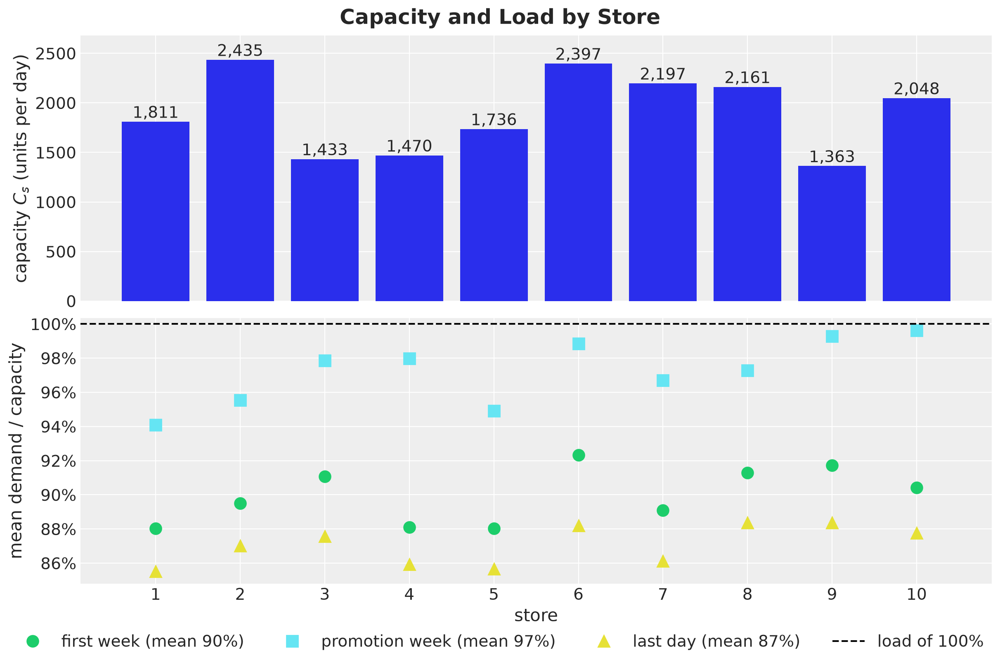
Capacity. The stores differ a lot in size. Their loads differ much less, because every store has the same multiple \(\kappa\).
Load. In the promotion week the mean demand alone takes almost the whole capacity of every store.
When we are thinking about ordering plans, we might want to order more than the mean demand, because they hold a buffer against lost sales. With that buffer, a load of \(90\%\) leaves room and a load of \(97\%\) does not.
The next figure shows the forecasts of both models for the four products of group \(1\) in store \(1\), next to the last four weeks of history and the realized future.
def plot_group_forecast(store: int, group: int, start: int = setup.t_obs - 28) -> None:
"""Forecasts of both models for the four products of a group in a store."""
group_products = jnp.flatnonzero(panel.product_to_group == group)
series = store * setup.n_products + group_products
labels = [f"product {j} ({product_role[j]})" for j in group_products.tolist()]
shape = (len(series), len(Model), setup.horizon)
tree = az.from_dict(
{
# dims after chain and draw: (series, model, time)
"posterior_predictive": {
"obs": jnp.stack(
[draws[model].scenarios[..., series] for model in Model], axis=-1
)[None].transpose(0, 1, 3, 4, 2)
},
# `plot_lm` sorts these two in place, and JAX arrays are immutable, so
# we pass writable numpy copies
"observed_data": {
"obs": np.array(
jnp.broadcast_to(demand_future_true[:, series].T[:, None, :], shape)
)
},
"constant_data": {
"day": np.array(jnp.broadcast_to(days_future.astype(float), shape))
},
},
coords={
"series": labels,
"model": [model.value for model in Model],
"time": days_future,
},
dims={"obs": ["series", "model", "time"], "day": ["series", "model", "time"]},
)
pc = az.plot_lm(
tree,
x="day",
y="obs",
y_obs="obs",
plot_dim="time",
smooth=False,
ci_prob=(0.5, CI_PROB),
point_estimate="mean",
visuals={
"pe_line": {"alpha": 1.0},
"observed_scatter": False,
"xlabel": False,
"ylabel": False,
},
cols=["series", "model"],
col_wrap=len(Model),
aes={"color": ["model"]},
aes_by_visuals={"pe_line": ["color"]},
color=[MODEL_COLORS[model] for model in Model],
figure_kwargs={"figsize": (14, 13), "sharex": True, "sharey": "row"},
)
lighten_bands(pc, "day", prob_alpha=((0.5, 0.5), (CI_PROB, 0.25)))
legend = {}
for row, (label, i) in enumerate(zip(labels, series.tolist(), strict=True)):
for col, model in enumerate(Model):
where = {"series": label, "model": model.value}
bands = pc.viz["ci_band"]["day"].sel(where)
bands.sel(prob=0.5).item().set_label(f"{model}: 50% ETI")
bands.sel(prob=CI_PROB).item().set_label(f"{model}: {CI_PROB:.0%} ETI")
pc.viz["pe_line"]["day"].sel(where).item().set_label(f"{model}: mean")
ax = pc.get_target("day", where)
plot_demand(ax, i, start)
ax.set(
title=f"{label}, {model} model",
xlabel="day" if row == len(labels) - 1 else "",
ylabel="units" if col == 0 else "",
)
handles, names = ax.get_legend_handles_labels()
legend |= dict(zip(names, handles, strict=True))
fig = pc.viz["figure"].item()
fig.legend(legend.values(), legend.keys(), loc="outside lower center", ncol=4)
fig.suptitle(
f"Forecasts for Group {group + 1} in Store {store + 1}",
fontsize=18,
fontweight="bold",
)
plot_group_forecast(store=0, group=0);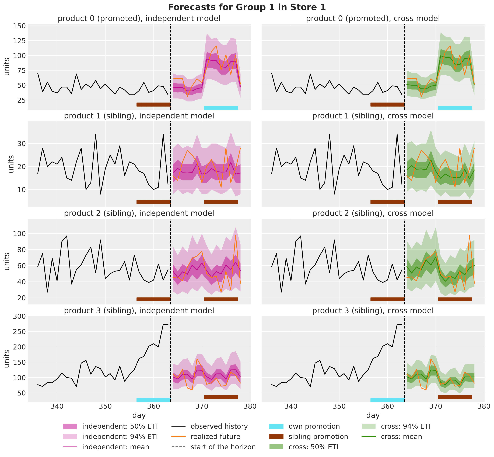
Promotion week. On the three siblings the cross model dips and the independent model stays close to flat. The realized future, one noisy path, dips with the cross model on products \(2\) and \(3\).
First week. The two models also part where no promotion happens, and on products \(0\), \(1\) and \(2\) the independent model starts lower. The last week of the history was a sibling promotion week for these three products, so their demand dipped there. The cross model attributes that dip to the price of product \(3\) and expects the recovery, while the lower start of the independent model is consistent with a level that followed the dip down.
Product \(3\). It was on promotion itself in that week and no sibling was, and the two forecasts start at about the same level.
Next, we draw the same figure for group \(3\), which is promoted but has no cannibalization. After that we look at the start of every series.
plot_group_forecast(store=0, group=2);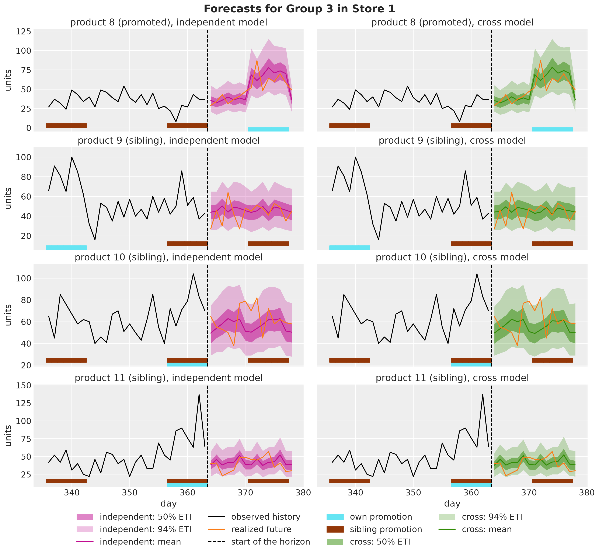
The two forecasts agree on every product, including the three siblings in the promotion week. The cross model does not invent a dip where the data show none, which is good!
Observe that the first week of the horizon has no promotion, so any difference between the two models in that week comes from the history. To see it for every series, we divide the mean forecast over the first week by the mean of the evaluation scenarios over the same week. A ratio of one means that the forecast starts at the level of the evaluation scenarios.
In the next figure every point is one series, and the numbers at the top are the medians over the stores of each product.
first_week = PERIODS[Period.FIRST_WEEK]
truth_start = demand_eval[:, first_week].mean(axis=(0, 1))
start_ratio = pl.DataFrame(
{
"product": jnp.tile(panel.series_to_product, len(Model)).tolist(),
"model": [model.value for model in Model for _ in range(setup.n_series)],
"ratio": jnp.concatenate(
[
draws[model].scenarios[:, first_week].mean(axis=(0, 1)) / truth_start
for model in Model
]
).tolist(),
}
)
fig, ax = plt.subplots(figsize=(14, 6))
sns.stripplot(
data=start_ratio,
x="product",
y="ratio",
hue="model",
hue_order=[model.value for model in Model],
palette=MODEL_COLORS,
dodge=True,
size=4,
ax=ax,
)
ax.axhline(1.0, color="black")
# the median over the stores of every product and model, above its points
medians = start_ratio.group_by("product", "model").agg(pl.col("ratio").median())
label_height = start_ratio["ratio"].max() + 0.02
for model, offset in zip(Model, (-0.2, 0.2), strict=True):
for product, median in (
medians.filter(pl.col("model") == model.value)
.select("product", "ratio")
.iter_rows()
):
ax.text(
product + offset,
label_height,
f"{median:.2f}",
color=MODEL_COLORS[model],
rotation=90,
ha="center",
va="bottom",
fontsize=9,
)
ax.margins(y=0.15)
for group in range(1, setup.n_groups):
ax.axvline(
group * setup.n_per_group - 0.5,
color="black",
linestyle="--",
label="group border" if group == 1 else None,
)
ax.get_legend().remove()
ax.set(xlabel="product", ylabel="first-week mean forecast / true mean")
fig.legend(loc="outside lower center", ncol=3)
fig.suptitle("Start of the Forecast by Product", fontsize=18, fontweight="bold");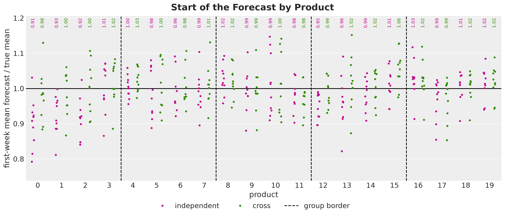
We see the following.
Group \(1\). Under the independent model, products \(0\), \(1\) and \(2\) start below the truth in almost every store, and under the cross model they start around it. They are the siblings of product \(3\), which was on promotion in the last week of the history. Product \(3\) itself starts at about the same place under both models.
Groups \(2\) and \(4\). The independent model starts lower than the cross model on every product, by less than on products \(0\), \(1\) and \(2\).
Groups \(3\) and \(5\). The two models agree on every product.
So the forecast of the independent model starts the lowest where the cross elasticity is the largest and a sibling promotion ended right before the horizon. We see what these low starts cost in the Out of Sample Evaluation section.
Capacity Projection
Before we build the plans, we need the projection that keeps a plan within the capacities of the stores. Recall from The Decision Problem that on every day the orders of a store have to sum to at most its capacity \(C_s\). In this section we work out the projection, write it in code and check it.
We use it in two places. The mean forecast and the chance-constrained plans project the orders of every day, and the solver of the expected cost and the CVaR plans projects the plan after every step.
The Optimization Problem
Recall how the first post found the plan. The solver starts from an initial plan and improves it in many small steps. At every step it computes the gradient of the expected loss with respect to every order and moves the orders in the direction that lowers the loss. The first post used Adam, a variant of gradient descent that adapts the step size of every order.
A gradient step does not know that an order cannot be negative. If a product is overstocked, the gradient tells the solver to order less of it, and when its order is already small the step can take it below zero. A negative order is not a plan that we can place.
So after every step the solver repairs the plan and replaces every negative order by zero. We call this repair the clip at zero. The clipped plan is the valid plan closest to the one that the step proposed, that is, the Euclidean projection of the proposed plan onto the set of non-negative orders. A gradient method with a projection after every step is called projected gradient descent.
With a capacity constraint we have to do (repair) more. Each constraint involves the orders of one store on one day. We call these \(P\) orders a block, so the plan has \(H \times S\) blocks.
We fix a store \(s\) and a day \(t\) and write \(a \in \mathbb{R}^P\) for the block of that store and day, with entries \(a_j = a_{t,(s,j)}\). The proposed orders of the block have to become non-negative and also sum to at most \(C_s\). The blocks that satisfy both conditions form the capacity set of store \(s\),
\[A_s = \left\{ x \in \mathbb{R}^P : x \geq 0, \; \sum_{j=1}^{P} x_j \leq C_s \right\}.\]
The capacity set depends on the store through its capacity, and it is the same on every day. In these terms, a plan is feasible when each of its blocks lies in the capacity set of its store.
We can encode the “distance between two plans” as the sum of the squared differences between their orders (i.e. the squared Euclidean distance). Since there is no constraint linking two blocks, the closest feasible plan is the one in which every block is the closest feasible block. Hence, we can repair (project) the blocks one by one.
The Projection
The repair of a block is its Euclidean projection \(\Pi_s(a)\) onto \(A_s\). That is, it is the point of \(A_s\) closest to the proposed orders \(a\). The projection has two cases.
Slack capacity. If the clipped vector \(\max(a, 0)\) fits the capacity \(C_s\), then the clip at zero is the whole repair.
Full capacity. If the clipped vector exceeds the capacity, the projection lies on the face of \(A_s\) where the orders sum to \(C_s\).
On that face the projection lowers every order of the block by the same amount \(\theta_{t,s}\), the threshold, and sets the orders that fall below zero to zero:
\[\Pi_s(a)_j = \max(a_j - \theta_{t,s}, 0).\]
The common amount comes from the shape of the face. Its normal is the vector of ones, so the shortest way from a point to the face takes the same amount from every coordinate. The clip keeps the result non-negative.
We have to choose \(\theta_{t,s}\) so that the result sums to \(C_s\). For this we need to know which orders stay positive after the shift, since only those orders count in the sum.
To see which orders stay positive, think of the threshold as a level that we raise until the parts of the orders above it sum to the capacity. A small proposed order falls below the level before a large one does.
In other words, the projection keeps the ranking of the proposed orders. If it sets the order of a product to zero, it also sets to zero every product of the block with a smaller proposed order. This is Lemma \(1\) of Duchi et al. (2008).
This means that the orders that stay positive are the largest proposed orders of the block. We do not have to search over subsets of products, and the only unknown is how many orders stay positive.
So we sort the proposed orders of the block. Let \(u_1 \geq u_2 \geq \dots \geq u_P\) be the entries of \(a\) from the largest to the smallest, so that \(u_1\) is the largest proposed order of the block and \(u_P\) is the smallest. These are the orders before the projection, as the gradient step proposed them, and some of them can be negative.
Note that \(u\) has the same numbers as \(a\) and only their position changes. We use \(u\) to find the threshold, and then we subtract the threshold from \(a\) in the original order of the products.
Let \(\rho_{t,s}\) be the number of orders of the block that stay positive after the projection. Suppose for a moment that we knew this number. Then the orders that stay positive are \(u_1, \dots, u_{\rho_{t,s}}\), each of them lowered by \(\theta_{t,s}\), and the other orders are zero. The resulting orders sum to
\[\sum_{r=1}^{\rho_{t,s}} u_r - \rho_{t,s} \, \theta_{t,s}.\]
We set this sum equal to \(C_s\) and solve for the threshold:
\[\theta_{t,s} = \frac{1}{\rho_{t,s}} \left( \sum_{r=1}^{\rho_{t,s}} u_r - C_s \right).\]
In other words, the threshold is the excess of the \(\rho_{t,s}\) largest proposed orders over the capacity, split evenly among them.
How do we find \(\rho_{t,s}\)? Duchi et al. (2008) give the answer in their Lemma \(2\) and Figure \(1\). In our notation it is
\[\rho_{t,s} = \max \left\{ k \in \{1, \dots, P\} : u_k - \frac{1}{k} \left( \sum_{r=1}^{k} u_r - C_s \right) > 0 \right\}.\]
Let’s read this definition as a test on every candidate count \(k = 1, \dots, P\). First, we assume that exactly the \(k\) largest proposed orders stay positive. Under this assumption the threshold formula above gives the candidate threshold
\[\theta^{(k)} = \frac{1}{k} \left( \sum_{r=1}^{k} u_r - C_s \right).\]
Next, we check the assumption. The smallest of the \(k\) largest orders is \(u_k\), so all of them stay positive after the shift when \(u_k - \theta^{(k)} > 0\). This is the condition inside the braces. If instead \(u_k - \theta^{(k)} \leq 0\), the candidate threshold sets to zero an order that we assumed positive, so the count \(k\) is too large.
The number \(\rho_{t,s}\) is the largest count that passes the test, and the threshold is the candidate threshold of that count, \(\theta_{t,s} = \theta^{(\rho_{t,s})}\).
Here are two important remarks about the test. The count \(k = 1\) always passes, since \(u_1 - \theta^{(1)} = C_s > 0\), so \(\rho_{t,s}\) is at least one. Also, the test is the same as \(\sum_{r=1}^{k} (u_r - u_k) < C_s\), and this sum does not decrease with \(k\). Hence the counts that pass are exactly \(1, \dots, \rho_{t,s}\).
Let’s work out an example by hand. We take the block \(a = (3, -1, 2)\) with a capacity of \(C_s = 4\) units. The clipped orders sum to \(5\) units, so we are in the full capacity case. The sorted vector is \(u = (3, 2, -1)\), and we test the three counts:
One order. The candidate threshold is \(\theta^{(1)} = 3 - 4 = -1\) and \(u_1 - \theta^{(1)} = 4 > 0\), so the count passes.
Two orders. The candidate threshold is \(\theta^{(2)} = (5 - 4) / 2 = 0.5\) and \(u_2 - \theta^{(2)} = 1.5 > 0\), so the count passes.
Three orders. The candidate threshold is \(\theta^{(3)} = (4 - 4) / 3 = 0\) and \(u_3 - \theta^{(3)} = -1 \leq 0\), so the count fails.
The largest count that passes is \(\rho_{t,s} = 2\), with the threshold \(\theta_{t,s} = 0.5\). We subtract it from \(a\) and clip at zero, which gives the projection \(\Pi_s(a) = (2.5, 0, 1.5)\). It sums to \(4\) units, the capacity.
Remark (Continuous Orders). Of course, a store orders whole units. We keep the orders continuous in the projection and in the solver, because enforcing integer solutions is harder. The products of this panel sell tens to hundreds of units per day, so one unit is a small part of an order.
Next, let’s look at the test on a larger block. We take the proposed orders of \(8\) products, one of them negative, and a capacity of \(C_s = 14\) units. The function candidate_thresholds sorts the proposed orders and tests every count. It returns a Thresholds tuple with the sorted orders, the candidate threshold of every count, the largest count that passes the test and the threshold.
class Thresholds(NamedTuple):
"""Result of the test on the candidate counts of one block."""
sorted_orders: Float[Array, " n_products"] # proposed orders, largest first
candidates: Float[Array, " n_products"] # candidate threshold of every count
rho: Int[Array, ""] # largest count that passes the test
theta: Float[Array, ""] # threshold: the candidate threshold of the count rho
def candidate_thresholds(
a: Float[Array, " n_products"], capacity: ScalarLike
) -> Thresholds:
"""Sort the proposed orders of a block and test every candidate count."""
u = jnp.sort(a)[::-1]
cumulative = jnp.cumsum(u)
k = jnp.arange(1, a.shape[0] + 1)
candidates = (cumulative - capacity) / k
rho = jnp.max(jnp.where(u - candidates > 0.0, k, 0))
theta = (cumulative[rho - 1] - capacity) / rho
return Thresholds(sorted_orders=u, candidates=candidates, rho=rho, theta=theta)
# the proposed orders of a block of eight products, in the order of the products
block_example = jnp.array([7.0, 12.0, -2.0, 4.0, 9.0, 1.0, 6.0, 3.0])
# the capacities of two stores that get this block
block_capacities = [14.0, 29.0]
block_counts = jnp.arange(1, block_example.shape[0] + 1)
thresholds = candidate_thresholds(block_example, block_capacities[0])
rho_block = int(thresholds.rho)
theta_block = float(thresholds.theta)
fig, ax = plt.subplots(layout="constrained")
ax.axvspan(
0.5, rho_block + 0.5, color="C2", alpha=0.15, label="counts that pass the test"
)
ax.plot(
block_counts,
thresholds.sorted_orders,
"o-",
color="C0",
label="sorted proposed order $u_k$",
)
ax.plot(
block_counts,
thresholds.candidates,
"s-",
color="C1",
label=r"candidate threshold $\theta^{(k)}$",
)
ax.axhline(
theta_block,
color="black",
linestyle="--",
label=rf"threshold $\theta_{{t,s}} = {theta_block:g}$",
)
ax.set(
title=rf"capacity $C_s = {block_capacities[0]:g}$, $\rho_{{t,s}} = {rho_block}$",
xlabel="candidate count $k$",
ylabel="units",
xticks=block_counts,
)
fig.legend(*ax.get_legend_handles_labels(), loc="outside lower center", ncol=2)
fig.suptitle("Test on the Candidate Counts", fontsize=18, fontweight="bold");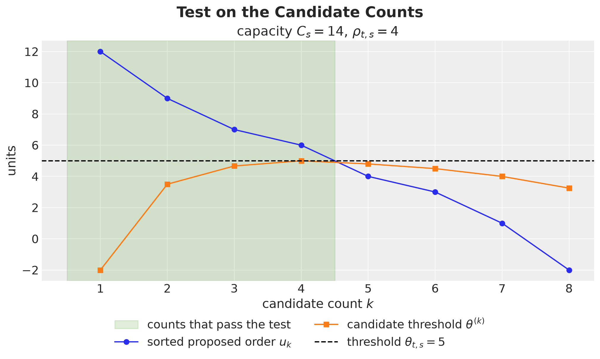
The sorted proposed orders go down with the count, and the test compares each of them with the candidate threshold of its count. The first \(4\) counts pass, since there the order is above the candidate threshold. From the fifth count on the order is below it. Hence \(\rho_{t,s} = 4\), and the threshold is the candidate threshold of that count, \(\theta_{t,s} = 5\) units.
Now we can see the threshold as a level. The next figure shows the same block in two stores, one with a capacity of \(14\) units and one with a capacity of \(29\) units. The dashed line is the threshold, and the dark part of a bar above it is the projected order.
fig, axes = plt.subplots(
ncols=2, figsize=(13, 6), sharex=True, sharey=True, layout="constrained"
)
for ax, capacity_block in zip(axes, block_capacities, strict=True):
thresholds = candidate_thresholds(block_example, capacity_block)
rho_block = int(thresholds.rho)
theta_block = float(thresholds.theta)
projected_block = jnp.maximum(thresholds.sorted_orders - theta_block, 0.0)
ax.bar(
block_counts,
thresholds.sorted_orders,
color="C0",
alpha=0.3,
label="proposed order $u_k$",
)
bars = ax.bar(
block_counts,
projected_block,
bottom=theta_block,
color="C0",
label="projected order",
)
ax.bar_label(
bars, labels=[f"{x:g}" if x > 0 else "" for x in projected_block], fontsize=12
)
ax.axhline(
theta_block, color="black", linestyle="--", label=r"threshold $\theta_{t,s}$"
)
ax.set(
title=(
rf"capacity $C_s = {capacity_block:g}$, $\rho_{{t,s}} = {rho_block}$, "
rf"$\theta_{{t,s}} = {theta_block:g}$"
),
xlabel="rank $k$ of the proposed order",
xticks=block_counts,
)
axes[0].set(ylabel="units")
fig.legend(*axes[0].get_legend_handles_labels(), loc="outside lower center", ncol=3)
fig.suptitle("Threshold as a Level", fontsize=18, fontweight="bold");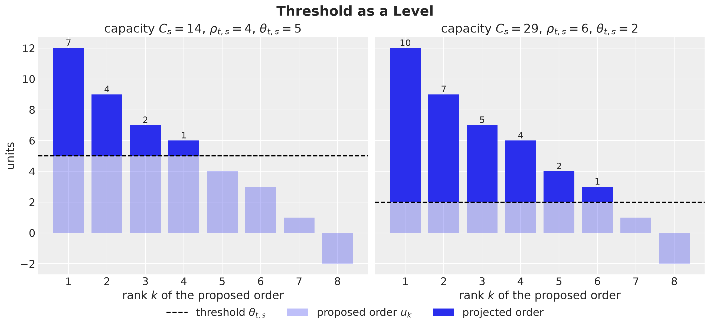
The projection keeps the part of every proposed order that is above the level, and in both panels the projected orders sum to the capacity of the store. A larger capacity needs a lower threshold, so more products stay in the plan.
Note that the threshold depends on the store through the capacity \(C_s\), and on both the store and the day through the proposed orders of the block. In the slack case the projection subtracts nothing, so we set \(\theta_{t,s} = 0\) and the formula \(\Pi_s(a)_j = \max(a_j - \theta_{t,s}, 0)\) covers both cases.
Here is an important observation: the threshold has no product index. All the products of a block share one threshold, so every order that stays positive gives up the same number of units. This comes from the Euclidean distance, which counts a unit of every product the same.
There is one threshold per block because there is one capacity constraint per block. Keep in mind that the common amount is what one projection removes after one step. The solver takes many steps, each followed by a projection, so over the whole solve the products of a block do not have to give up the same number of units.
The common threshold also fits our setting, where every product has the same holding cost \(h\) and the same lost margin \(p\), so the repair has no reason to prefer one product. If the products had different margins, we would put the margins in the loss and keep the projection as it is, because the capacity counts units. We leave this for the Next Steps.
When we put the blocks together, we get the projection \(\Pi\) of the whole plan \(a = (a_{t,i})\),
\[\Pi(a)_{t,(s,j)} = \max\left( a_{t,(s,j)} - \theta_{t,s}, \, 0 \right),\]
with one threshold per store and day, \(H \times S\) in total. Where the clipped orders exceed the capacity the threshold is positive, since a threshold of zero would leave the clipped orders, which sum to more than \(C_s\).
The code follows these steps for one block:
Clip. Set the negative orders to zero. If the result fits the capacity of the store, it is the projection.
Sort. Sort the proposed orders of the block from the largest and take their cumulative sums.
Count. Find \(\rho_{t,s}\), the number of orders that stay positive.
Threshold. Compute \(\theta_{t,s}\) from the \(\rho_{t,s}\) largest orders.
Shift. Subtract \(\theta_{t,s}\) from every order and clip at zero.
The function candidate_thresholds of the previous cells does steps \(2\) to \(4\). The function project_simplex calls it and does step \(5\), and project_capacity chooses between the two cases. Both take one block and the capacity of its store.
The function project_day applies project_capacity to the \(S\) blocks of a day, each with the capacity of its store. The function project_orders applies project_day to every day of the horizon.
def project_simplex(
a: Float[Array, " n_products"], capacity: ScalarLike
) -> Float[Array, " n_products"]:
"""Euclidean projection onto {a >= 0, sum(a) = capacity} (Duchi et al., 2008)."""
# steps 2 to 4: sort the orders, count the ones that stay positive, and get the
# threshold that makes them sum to the capacity
theta = candidate_thresholds(a, capacity).theta
# step 5: the same shift for every order, then the clip
return jnp.maximum(a - theta, 0.0)
def project_capacity(
a: Float[Array, " n_products"], capacity: ScalarLike
) -> Float[Array, " n_products"]:
"""Euclidean projection of one block onto {a >= 0, sum(a) <= capacity}."""
# step 1: the clip, which is the projection when it fits the capacity
clipped = jnp.maximum(a, 0.0)
fits = clipped.sum() <= capacity
return jnp.where(fits, clipped, project_simplex(a, capacity))
# one day: the blocks of all stores, (n_stores, n_products), each with the capacity
# of its store, (n_stores,)
project_day = jax.vmap(project_capacity, in_axes=(0, 0))
# the whole horizon, (horizon, n_stores, n_products): the capacities are the same on
# every day
project_orders = jax.vmap(project_day, in_axes=(0, None))We can check the projection with five checks:
Feasible point. It comes back unchanged.
Example by hand. The vector \([3, -1, 2]\) with a capacity of \(4\) projects to \([2.5, 0, 1.5]\). Here two orders stay positive and the threshold is \(0.5\).
Random point. The projection subtracts the same amount from every order that stays positive.
No capacity. The projection is the clip at zero, which the Capacity Sensitivity section relies on.
One capacity per store. We give the same proposed orders to three stores with capacities of \(10\), \(20\) and \(60\) units, on each of two days. The first two stores use their whole capacity. In the third the clipped orders fit, so its projection is the clip at zero.
# the checks draw from a key of their own, so that they do not change the data
key_point, key_orders, key_capacity = random.split(random.PRNGKey(seed + 1), 3)
feasible = jnp.array([1.0, 2.0, 0.5])
assert jnp.allclose(project_capacity(feasible, 4.0), feasible)
assert jnp.allclose(
project_capacity(jnp.array([3.0, -1.0, 2.0]), 4.0), jnp.array([2.5, 0.0, 1.5])
)
point = 5 * random.normal(key_point, (20,))
projection = project_capacity(point, 10.0)
assert jnp.allclose(projection.sum(), 10.0) and bool((projection >= 0).all())
shift = (point - projection)[projection > 0]
assert jnp.allclose(shift, shift[0], atol=1e-4)
assert jnp.allclose(project_capacity(point, jnp.inf), jnp.maximum(point, 0.0))
# the same proposed orders on two days in three stores that differ in capacity only
store_capacities = jnp.array([10.0, 20.0, 60.0])
projections = project_orders(jnp.tile(point, (2, 3, 1)), store_capacities)
assert jnp.allclose(projections[:, :2].sum(axis=-1), store_capacities[:2])
# the store with 10 units gets the projection of the single block above
assert jnp.allclose(projections[:, 0], projection)
assert jnp.allclose(projections[:, 2], jnp.maximum(point, 0.0))A projection maps every point of its set to itself. The projected orders of a block are in the set \(A_s\) of its store, so a second projection does not move them:
\[\Pi_s(\Pi_s(a)) = \Pi_s(a).\]
This property is called idempotence. Let’s check it on \(1{,}000\) random vectors of \(20\) orders. Each vector has its own capacity, drawn between \(1\) and \(60\) units, so that the capacity binds for some vectors and not for others.
proposed = 5 * random.normal(key_orders, (1_000, 20))
capacities = random.uniform(key_capacity, (1_000,), minval=1.0, maxval=60.0)
project_batch = jax.vmap(project_capacity)
once = project_batch(proposed, capacities)
twice = project_batch(once, capacities)
assert jnp.allclose(twice, once, atol=1e-5)The next figure shows the projection in two dimensions, for two products and two stores. The first store has a capacity of \(10\) units and the second a capacity of \(14\) units, and both get the same three proposed orders. The open circles are orders as a gradient step proposes them, before the repair, so a coordinate can be negative.
capacity_examples = jnp.array([10.0, 14.0])
proposed_example = jnp.array([[3.0, 4.0], [-2.0, 11.0], [9.0, 7.0]])
# the same proposed orders in both stores: (n_stores, n_points, n_products)
projected_examples = jax.vmap(
jax.vmap(project_capacity, in_axes=(0, None)), in_axes=(None, 0)
)(proposed_example, capacity_examples)
fig, axes = plt.subplots(
ncols=2, figsize=(13, 7), sharex=True, sharey=True, layout="constrained"
)
for store, ax in enumerate(axes):
capacity_store = float(capacity_examples[store])
projected = projected_examples[store]
ax.fill(
[0, capacity_store, 0],
[0, 0, capacity_store],
color="C0",
alpha=0.2,
label="capacity set $A_s$",
)
ax.plot([0, capacity_store], [capacity_store, 0], color="C0")
for (x, y), (px, py) in zip(proposed_example, projected, strict=True):
ax.plot([x, px], [y, py], "--", color="black")
ax.scatter(
proposed_example[:, 0],
proposed_example[:, 1],
s=150,
facecolors="none",
edgecolors="C1",
zorder=3,
label="orders after a gradient step",
)
ax.scatter(
projected[:, 0], projected[:, 1], color="black", zorder=4, label="projection"
)
ax.set(
title=f"capacity $C_s = {capacity_store:g}$",
xlabel="order of product 1",
aspect="equal",
)
axes[0].set(ylabel="order of product 2")
fig.legend(*axes[0].get_legend_handles_labels(), loc="outside lower center", ncol=3)
fig.suptitle("Projection onto the Capacity Sets", fontsize=18, fontweight="bold");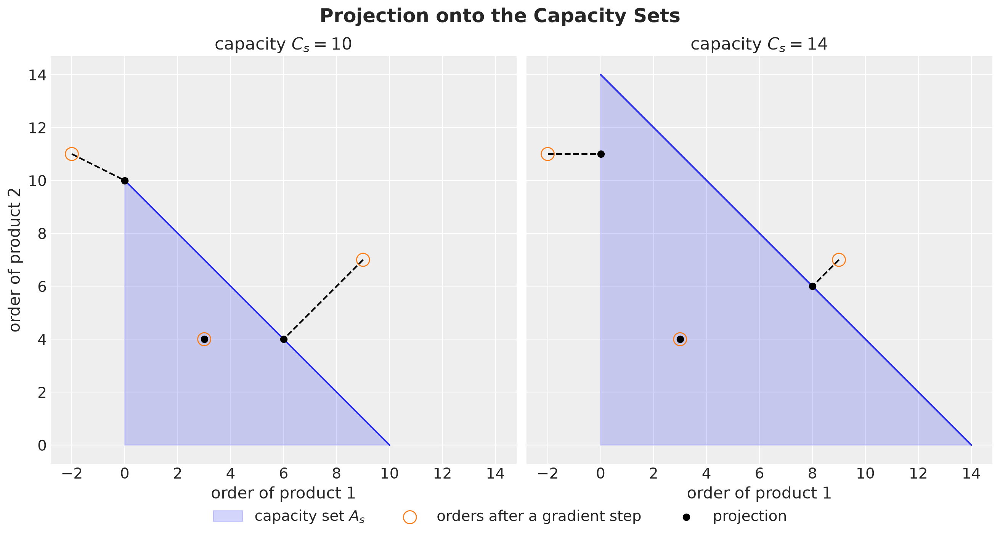
The same proposed orders end at different points in the two stores.
Inside both triangles. Proposed orders that fit the capacity stay where they are.
Above both diagonals. Each projection takes the same amount from both products, and it takes more in the store with the smaller capacity.
Negative order. Both projections first set the negative order to zero. In the store with the larger capacity this is the whole repair. In the other store the remaining order still exceeds the capacity, and the projection ends at the corner where the whole capacity goes to one product.
Inventory Simulator
We reuse the simulator of the first post, with the initial stock as an argument because it differs across series. The loss of a scenario is the sum over the series, and we keep the stock and lost sales paths per series to split the loss by group and period later.
class Simulation(NamedTuple):
"""Loss, stock path and lost sales path of a plan against demand paths."""
loss: Float[Array, "*batch"]
inventory: Float[Array, "*batch horizon"]
lost_sales: Float[Array, "*batch horizon"]
def simulate(
orders: Float[Array, " horizon"],
demand: Float[Array, " horizon"],
initial_inventory: ScalarLike,
config: InventoryConfig,
) -> Simulation:
"""Run the inventory dynamics of one plan against one demand path."""
def step(
inventory: ScalarLike, inputs: tuple[ScalarLike, ScalarLike]
) -> tuple[ScalarLike, tuple[ScalarLike, ScalarLike, ScalarLike]]:
order_t, demand_t = inputs
available = inventory + order_t # y_t
sales_t = jnp.minimum(available, demand_t)
lost_t = demand_t - sales_t
inventory = available - sales_t
cost_t = config.holding_cost * inventory + config.lost_sales_cost * lost_t
return inventory, (inventory, lost_t, cost_t)
_, (inventory_path, lost_path, cost_path) = jax.lax.scan(
step, jnp.asarray(initial_inventory, dtype=orders.dtype), (orders, demand)
)
return Simulation(cost_path.sum(), inventory_path, lost_path)
# one plan (horizon, n_series) against one demand path (horizon, n_series): the
# results of every series, with the paths of shape (n_series, horizon)
simulate_series = jax.vmap(simulate, in_axes=(1, 1, 0, None))
# one plan against a batch of demand paths (scenarios, horizon, n_series)
simulate_scenarios = jax.jit(
jax.vmap(simulate_series, in_axes=(None, 0, None, None)), static_argnames="config"
)Next, we write the forward pass that builds the mean forecast and the chance-constrained plans. It carries the stock of every scenario through the days of the horizon. On every day it asks an order rule for the order of every series, given the shortfalls over the scenarios, projects the orders of every store onto its capacity set and carries the stock forward.
We write two order rules, as in the first post:
follow_pathorders the shortfall of a single path. On the mean path of the scenarios it gives the mean forecast plan.quantile_shortfall(prob)orders theprobquantile of the shortfall over the scenarios, series by series. Atprob = 1 - alphait gives the chance-constrained plan.
@runtime_checkable
class OrderRule(Protocol):
"""Maps the shortfall of every scenario and series to the orders of one day."""
def __call__(
self, shortfall: Float[Array, "scenarios n_stores n_products"]
) -> Float[Array, "n_stores n_products"]: ...
def follow_path(
shortfall: Float[Array, "1 n_stores n_products"],
) -> Float[Array, "n_stores n_products"]:
"""Order the shortfall of a single path."""
return shortfall[0]
def quantile_shortfall(prob: float) -> OrderRule:
"""Rule that orders the `prob` quantile of the shortfall over the scenarios."""
def rule(
shortfall: Float[Array, "scenarios n_stores n_products"],
) -> Float[Array, "n_stores n_products"]:
return jnp.quantile(shortfall, prob, axis=0)
return rule
def forward_pass(
demand: Float[Array, "scenarios horizon n_stores n_products"],
rule: OrderRule,
capacity: Float[Array, " n_stores"],
initial_inventory: Float[Array, "n_stores n_products"],
) -> Float[Array, "horizon n_stores n_products"]:
"""Orders of every day: the rule on the shortfalls, projected store by store."""
def step(
inventory: Float[Array, "scenarios n_stores n_products"],
demand_t: Float[Array, "scenarios n_stores n_products"],
) -> tuple[
Float[Array, "scenarios n_stores n_products"],
Float[Array, "n_stores n_products"],
]:
order_t = project_day(rule(demand_t - inventory), capacity)
inventory = jnp.maximum(inventory + order_t - demand_t, 0.0)
return inventory, order_t
# every scenario starts from the same stock
inventory = jnp.broadcast_to(
initial_inventory, (demand.shape[0], *initial_inventory.shape)
)
_, orders = jax.lax.scan(step, inventory, demand.swapaxes(0, 1))
return ordersDecision Plans
We now build the four plans of each model. Recall from the Decision Rules section that the forward pass builds two of them and the solver finds the other two.
The solver minimizes the objective of the first post: the expected loss plus the tail weight \(\lambda\) times the CVaR, the mean of the worst \(5\%\) of the scenario losses. We sum the loss over the series before we take the mean and the tail.
The solver is projected gradient descent, written with Optax: a gradient step with a step size that decays along a cosine curve, followed by project_orders in place of the clip at zero. The iterates stay in the capacity set of every store and day.
Remark (Plain Gradient Steps). The first post used Adam, which rescales the step of every order. With the clip at zero this does no harm, because the clip acts on every order separately. The capacity couples the orders of a store, and there a rescaled step followed by the Euclidean projection can stop at a plan that is not optimal, so we use the plain gradient step.
In the code, the SolverConfig tuple holds the settings of the solver, the tail probability \(\alpha\) that the chance constraint and the CVaR share, and a numerical tolerance. The Rule enumeration names the four decision rules. A Plan tuple holds a rule, the model whose scenarios built the plan, and the orders.
class SolverConfig(NamedTuple):
"""Settings of the projected gradient solver, the decision rules and the scores."""
n_steps: int = 1_500
learning_rate: float = 5.0 # initial step size of the gradient step
alpha: float = 0.05 # tail probability of the chance constraint and of the CVaR
# numerical zero: lost sales (units) and capacity slack (relative) below it
tol: float = 1e-3
class Rule(StrEnum):
"""The decision rules."""
MEAN_FORECAST = "Mean forecast"
CHANCE_CONSTRAINED = "Chance constrained"
EXPECTED_COST = "Expected cost"
CVAR = "CVaR"
class Plan(NamedTuple):
"""One order plan with the rule and the model that built it."""
rule: Rule
model: Model
orders: Float[Array, "horizon n_stores n_products"]
@property
def name(self) -> str:
return f"{self.rule} ({self.model})"
def cvar(losses: Float[Array, " scenarios"], alpha: float) -> ScalarLike:
"""Mean of the worst share `alpha` of the losses."""
# top_k needs a Python integer, so the tail size is static
worst, _ = jax.lax.top_k(losses, max(1, round(alpha * losses.shape[0])))
return worst.mean()
def objective(
orders: Float[Array, "horizon n_stores n_products"],
demand: Float[Array, "scenarios horizon n_series"],
lam: ScalarLike,
initial_inventory: Float[Array, " n_series"],
config: InventoryConfig,
alpha: float,
) -> ScalarLike:
"""Expected loss plus lam times the CVaR of the total loss over the scenarios."""
losses = simulate_scenarios(flat(orders), demand, initial_inventory, config).loss
losses = losses.sum(axis=-1)
return losses.mean() + lam * cvar(losses, alpha)
def solve(
demand: Float[Array, "scenarios horizon n_series"],
lam: ScalarLike,
orders_init: Float[Array, "horizon n_stores n_products"],
capacity: Float[Array, " n_stores"],
initial_inventory: Float[Array, " n_series"],
config: InventoryConfig,
solver: SolverConfig,
) -> tuple[Float[Array, "horizon n_stores n_products"], Float[Array, " n_steps"]]:
"""Projected gradient descent on the expected cost plus lam times the CVaR."""
schedule = optax.cosine_decay_schedule(
init_value=solver.learning_rate, decay_steps=solver.n_steps
)
optimizer = optax.sgd(learning_rate=schedule)
value_and_grad = jax.value_and_grad(objective)
def step(
carry: tuple[Float[Array, "horizon n_stores n_products"], optax.OptState],
_: None,
) -> tuple[
tuple[Float[Array, "horizon n_stores n_products"], optax.OptState], ScalarLike
]:
orders, opt_state = carry
value, grads = value_and_grad(
orders, demand, lam, initial_inventory, config, solver.alpha
)
updates, opt_state = optimizer.update(grads, opt_state, orders)
orders = project_orders(orders + updates, capacity) # block-wise projection
return (orders, opt_state), value
(orders, _), values = jax.lax.scan(
step, (orders_init, optimizer.init(orders_init)), None, length=solver.n_steps
)
return orders, values
def is_stockout(sim: Simulation, tol: float) -> Bool[Array, "*batch horizon"]:
"""Days with lost sales above the tolerance."""
return sim.lost_sales > tol
solver = SolverConfig()
solve_jit = jax.jit(solve, static_argnames=("config", "solver"))Forward Pass Plans
First, we build the two plans of the forward pass for each model.
The mean forecast plan follows the mean path of the scenarios.
The chance-constrained plan orders the \(95\%\) quantile of the shortfall of every series.
We also run the chance-constrained rule without a capacity. There the quantile gives a guarantee on the scenarios that built the plan: every series runs out on every day in at most \(5\%\) of them. The assertion checks this guarantee, and we come back to it in the Service Level section.
initial_inventory_by_store = initial_inventory.reshape(setup.n_stores, setup.n_products)
no_capacity = jnp.full_like(capacity, jnp.inf)
chance_rule = quantile_shortfall(1 - solver.alpha)
def mean_forecast_plan(
mean_path: Float[Array, "horizon n_stores n_products"],
capacity: Float[Array, " n_stores"],
) -> Float[Array, "horizon n_stores n_products"]:
"""Mean forecast plan under a capacity vector: the forward pass on one path."""
return forward_pass(
mean_path[None], follow_path, capacity, initial_inventory_by_store
)
orders_mean = {
model: mean_forecast_plan(unflat(mean_demand[model]), capacity) for model in Model
}
orders_chance = {
model: forward_pass(
unflat(draws[model].scenarios),
chance_rule,
capacity,
initial_inventory_by_store,
)
for model in Model
}
orders_chance_free = {
model: forward_pass(
unflat(draws[model].scenarios),
chance_rule,
no_capacity,
initial_inventory_by_store,
)
for model in Model
}
for model in Model:
sim_own = simulate_scenarios(
flat(orders_chance_free[model]),
draws[model].scenarios,
initial_inventory,
config,
)
# without a capacity every series runs out on every day in at most alpha * N of
# the scenarios that built the plan
stockout_count = is_stockout(sim_own, solver.tol).sum(axis=0)
assert int(stockout_count.max()) <= solver.alpha * N_SCENARIOSSolver Plans
Next, we solve the expected cost plan (\(\lambda = 0\)) and the CVaR plan (\(\lambda = 1\)) on the scenarios of each model. Every solve starts from the mean forecast plan of its model.
%%time
TAIL_WEIGHTS = {Rule.EXPECTED_COST: 0.0, Rule.CVAR: 1.0}
# JAX returns before the computation ends, so we wait for the results to time them
solves = {
(rule, model): jax.block_until_ready(
solve_jit(
draws[model].scenarios,
lam,
orders_mean[model],
capacity,
initial_inventory,
config,
solver,
)
)
for rule, lam in TAIL_WEIGHTS.items()
for model in Model
}CPU times: user 47.8 s, sys: 5.35 s, total: 53.2 s
Wall time: 16.9 sRecall from the first post that the loss is convex in the orders. The capacity set is convex too, so every local minimum is a global one, and a solver that has converged gives the same objective value from any feasible start. As a check, we solve every plan again from a plan of zeros and compare the two values on the optimization scenarios.
for (rule, model), (orders_solved, _) in solves.items():
orders_from_zeros, _ = solve_jit(
draws[model].scenarios,
TAIL_WEIGHTS[rule],
jnp.zeros_like(orders_solved),
capacity,
initial_inventory,
config,
solver,
)
value, value_from_zeros = (
objective(
orders,
draws[model].scenarios,
TAIL_WEIGHTS[rule],
initial_inventory,
config,
solver.alpha,
)
for orders in (orders_solved, orders_from_zeros)
)
# the two starts agree to within 0.1% of the objective value
assert jnp.allclose(value, value_from_zeros, rtol=1e-3)The two starts agree for all four plans.
We now have eight plans, four per model. From here on, the independent plan and the cross plan are the two expected cost plans. The assertions check that every plan is feasible.
orders_by_rule = {
Rule.MEAN_FORECAST: orders_mean,
Rule.CHANCE_CONSTRAINED: orders_chance,
**{
rule: {model: solves[rule, model][0] for model in Model}
for rule in TAIL_WEIGHTS
},
}
plans = {
(rule, model): Plan(rule, model, orders_by_rule[rule][model])
for rule in Rule
for model in Model
}
for plan in plans.values():
# non-negative orders within the capacity of every store on every day
assert bool((plan.orders >= 0).all())
assert bool((plan.orders.sum(axis=-1) <= capacity * (1 + solver.tol)).all())Here are the traces of the four solves.
fig, axes = plt.subplots(
nrows=2,
ncols=1,
figsize=(10, 6),
sharex=True,
sharey=False,
layout="constrained",
)
for ax, (rule, lam) in zip(axes, TAIL_WEIGHTS.items(), strict=True):
for model in Model:
_, trace = solves[rule, model]
ax.plot(
jnp.arange(1, trace.size + 1),
trace,
color=MODEL_COLORS[model],
label=f"{model} model, last value {trace[-1]:,.0f}",
)
ax.legend(loc="upper right")
ax.set(
title=rf"{rule} plan ($\lambda = {lam:g}$)",
xlabel="step",
ylabel="objective",
xscale="log",
)
fig.suptitle(
"Solver Traces on the Optimization Scenarios", fontsize=18, fontweight="bold"
);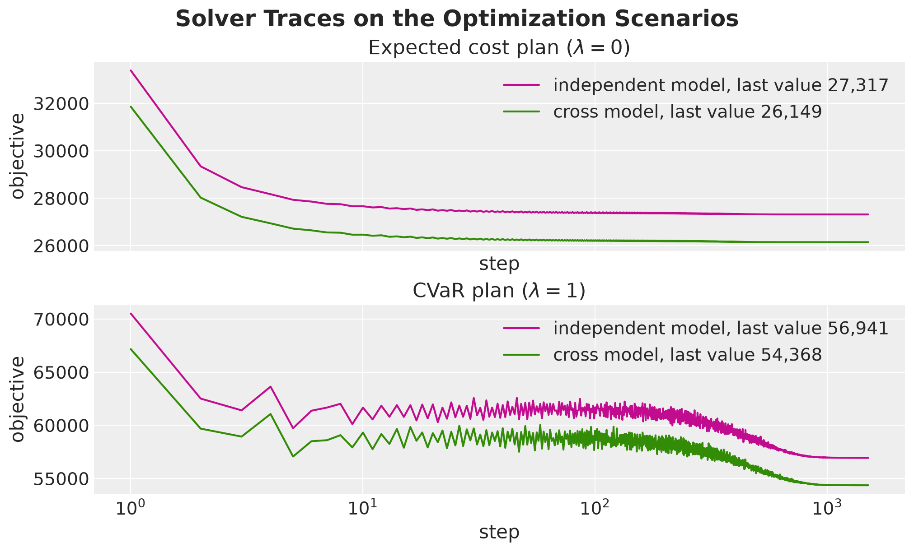
The expected cost objectives fall fast in the first steps and then change little, and the CVaR objectives oscillate while the step is large and settle as the step size decays. The objective of a CVaR plan is its expected loss plus its tail loss, so its values are about twice as large. The last values in the legends are the values that the solver sees, and we compare them with the losses on the evaluation scenarios below.
Next, let’s look at how much of the capacity the plans use. The following figure shows, for every day of the horizon, the share of the \(10\) stores whose orders of that day are at capacity. It has one panel per rule and one line per model.
The function plot_days_by_rule draws this layout, and we use it again in the evaluation. In the figures of the plans we count the days of the horizon from one, so the promotion week is days \(8\) to \(14\).
def at_capacity(
orders: Float[Array, "horizon n_stores n_products"],
capacity: Float[Array, " n_stores"],
rtol: float,
) -> Float[Array, " horizon"]:
"""Share of the stores at capacity on every day of the horizon."""
return (orders.sum(axis=-1) >= capacity * (1 - rtol)).mean(axis=-1)
# the days of the horizon, counted from one
horizon_days = jnp.arange(1, setup.horizon + 1)
def mark_horizon_days(ax: plt.Axes) -> None:
"""Put a tick on every day of the horizon and shade the promotion week."""
promo_days = horizon_days[PERIODS[Period.PROMOTION_WEEK]]
ax.axvspan(
promo_days[0] - 0.5,
promo_days[-1] + 0.5,
color="C5",
alpha=0.3,
zorder=0,
label="promotion week",
)
ax.set_xticks(horizon_days)
def plot_days_by_rule(
values: dict[tuple[Rule, Model], Float[Array, " horizon"]],
ylabel: str,
title: str,
reference: tuple[float, str] | None = None,
) -> None:
"""One panel per rule with one line per model over the days of the horizon."""
fig, axes = plt.subplots(
nrows=2,
ncols=2,
figsize=(14, 8),
sharex=True,
sharey=True,
layout="constrained",
)
for k, (ax, rule) in enumerate(zip(axes.flat, Rule, strict=True)):
for model in Model:
ax.plot(
horizon_days,
values[rule, model],
"o-",
color=MODEL_COLORS[model],
label=f"{model} model",
)
mark_horizon_days(ax)
if reference is not None:
ax.axhline(reference[0], color="black", linestyle="--", label=reference[1])
ax.yaxis.set_major_formatter(PercentFormatter(xmax=1, decimals=0))
ax.set(
title=rule,
xlabel="day of the horizon" if k >= 2 else "",
ylabel=ylabel if k % 2 == 0 else "",
)
fig.legend(
*axes[0, 0].get_legend_handles_labels(), loc="outside lower center", ncol=4
)
fig.suptitle(title, fontsize=18, fontweight="bold")
plot_days_by_rule(
{
key: at_capacity(plan.orders, capacity, solver.tol)
for key, plan in plans.items()
},
ylabel="share of stores at capacity",
title="Capacity Use by Day",
);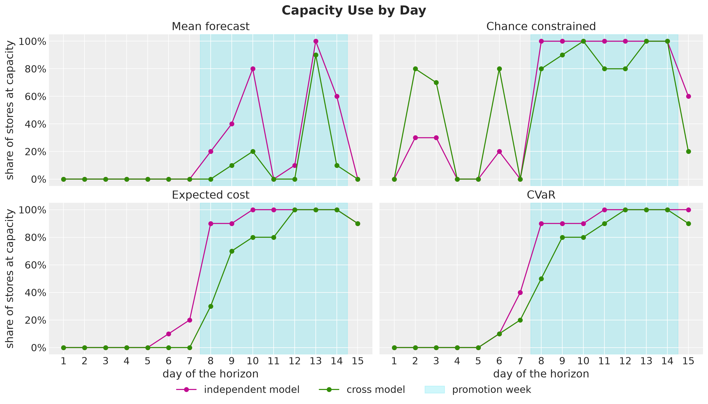
First week. The capacity rarely binds. The chance-constrained plans are at capacity on a few days, the plan of the cross model in most stores, and three of the four solver plans reach it in a few stores on the last two days of the week.
Promotion week. The capacity binds under every rule, and on far more days under the three rules that hold a buffer. The chance-constrained, the expected cost and the CVaR plans are at capacity in most stores on most days, and the mean forecast plans on some days only.
Independent against cross. Under the expected cost and the CVaR rules the plan of the independent model is at capacity in almost every store from the first day of the promotion week, and the plan of the cross model gets there later in the week. The independent model does not expect the siblings to dip, so it forecasts more demand in that week.
Last day. The expected cost and the CVaR plans are at capacity in almost every store. There is no later day to carry stock into, so a leftover costs \(h\) once and a lost sale costs \(p\), and the order that minimizes the expected cost aims at the \(p / (p + h) \approx 0.95\) quantile of the shortfall. In a rolling horizon the last order is never placed, so we do not read anything into day \(15\).
Next, we compare the plans of the two models under each rule. We take the orders of the plan of the independent model minus the orders of the plan of the cross model, per product and day, and average them over the products and stores of each role. We call the result the order gap.
order_difference = {
rule: plans[rule, Model.INDEPENDENT].orders - plans[rule, Model.CROSS].orders
for rule in Rule
}
order_gap = pl.DataFrame(
[
{"rule": rule.value, "role": role.value, "day": day, "order gap": gap}
for rule in Rule
for role in Role
for day, gap in zip(
horizon_days.tolist(),
order_difference[rule][:, :, role_mask[role]].mean(axis=(1, 2)).tolist(),
strict=True,
)
]
)
fig, axes = plt.subplots(
nrows=2, ncols=2, figsize=(14, 9), sharex=True, sharey=True, layout="constrained"
)
for k, (ax, rule) in enumerate(zip(axes.flat, Rule, strict=True)):
sns.lineplot(
data=order_gap.filter(pl.col("rule") == rule.value),
x="day",
y="order gap",
hue="role",
hue_order=[role.value for role in Role],
palette=ROLE_COLORS,
marker="o",
ax=ax,
)
ax.axhline(0.0, color="black")
mark_horizon_days(ax)
handles, labels = ax.get_legend_handles_labels()
ax.get_legend().remove()
ax.set(title=rule, xlabel="day of the horizon" if k >= 2 else "", ylabel="")
fig.supylabel(
"order gap (units per product and day)", fontsize=plt.rcParams["axes.labelsize"]
)
fig.legend(handles, labels, loc="outside lower center", ncol=5)
fig.suptitle(
"Order Gap by Rule, Independent Minus Cross", fontsize=18, fontweight="bold"
);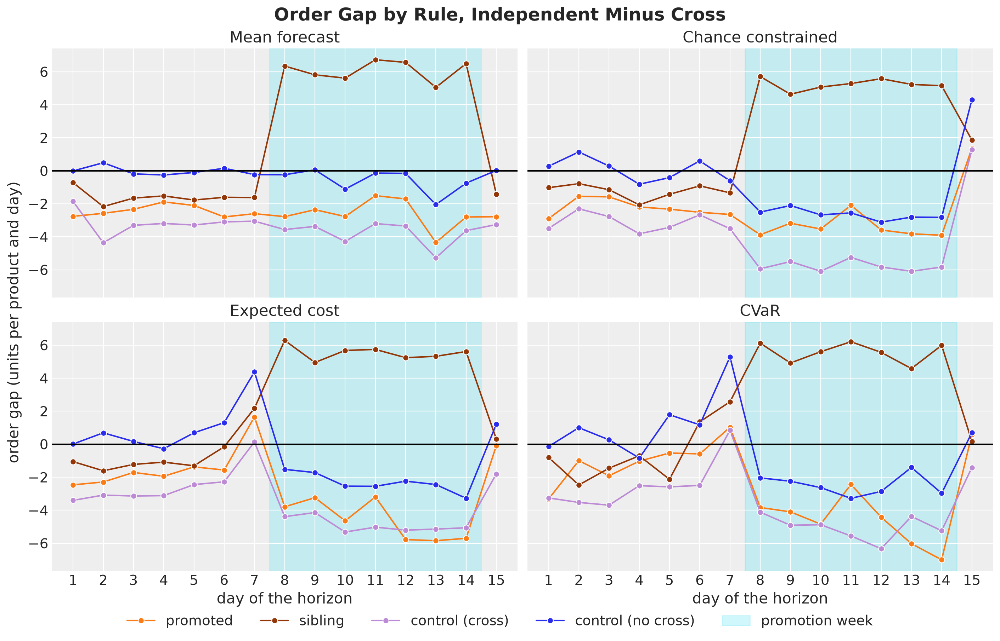
We read the order gap in three periods.
Days \(1\) to \(6\). On almost every day and under every rule the plan of the independent model orders less on
promoted,siblingandcontrol (cross), which matches the low start of the independent forecast. Oncontrol (no cross)the gap is small and changes sign.Day \(7\). The solver plans of the independent model order more on the day before the promotion week, and the forward pass plans do not. The independent model forecasts more demand in the promotion week, and the solver optimizes all days at once, so it can move orders to the day before.
Promotion week. Under every rule the plan of the independent model orders more for the siblings, since it does not expect them to dip. Under the chance-constrained, the expected cost and the CVaR rules, whose plans are at capacity in most stores in that week, it also orders less on
control (no cross), although the forecasts of this role are almost the same under both models. The extra units of the siblings leave less room for the other products.
Out of Sample Evaluation
We score every plan with four metrics on the \(1{,}000\) evaluation scenarios.
Expected loss. The mean over the evaluation scenarios of the loss summed over the series.
CVaR of the loss. The mean of the worst \(5\%\) of the scenario losses, the tail loss.
Stockout probability per series-day. The fraction of scenario, series and day triples with a lost sale. This is the quantity that the chance constraint targets.
Probability of a stockout in the horizon per series. The fraction of scenario and series pairs with at least one lost sale in the \(15\) days.
For every plan we also record three scores that we use below: the expected loss and the CVaR on the optimization scenarios of its own model, which are the values that the two solver rules minimize, and the loss on the realized future, the one path that we held out when we generated the data.
The function plot_scores draws one bar panel per score, with the rules on the horizontal axis, one color per model and the value on every bar.
class Metric(StrEnum):
"""Names of the scores."""
EXPECTED_LOSS = "expected loss"
CVAR = f"CVaR of loss (worst {solver.alpha:.0%})"
STOCKOUT = "stockout probability per series-day"
HORIZON = "probability of a stockout in the horizon per series"
REALIZED = "loss on the realized future"
OWN_EXPECTED_LOSS = "expected loss on own scenarios"
OWN_CVAR = "CVaR of loss on own scenarios"
def evaluate(plan: Plan) -> Simulation:
"""Simulate a plan on the evaluation scenarios."""
return simulate_scenarios(flat(plan.orders), demand_eval, initial_inventory, config)
def summarize(plan: Plan, sim: Simulation) -> dict[str, str | float]:
"""Scores of a plan: evaluation scenarios, realized future and own scenarios."""
losses = sim.loss.sum(axis=-1)
stockout = is_stockout(sim, solver.tol)
realized = simulate_series(
flat(plan.orders), demand_future_true, initial_inventory, config
).loss.sum()
own_losses = simulate_scenarios(
flat(plan.orders), draws[plan.model].scenarios, initial_inventory, config
).loss.sum(axis=-1)
return {
"plan": plan.name,
"rule": plan.rule.value,
"model": plan.model.value,
Metric.EXPECTED_LOSS: float(losses.mean()),
Metric.CVAR: float(cvar(losses, solver.alpha)),
Metric.STOCKOUT: float(stockout.mean()),
Metric.HORIZON: float(stockout.any(axis=-1).mean()),
Metric.REALIZED: float(realized),
Metric.OWN_EXPECTED_LOSS: float(own_losses.mean()),
Metric.OWN_CVAR: float(cvar(own_losses, solver.alpha)),
}
def plot_scores(
frame: pl.DataFrame, metrics: list[Metric], title: str, nrows: int
) -> None:
"""One bar panel per score, with the rules on the horizontal axis."""
ncols = math.ceil(len(metrics) / nrows)
fig, axes = plt.subplots(
nrows=nrows,
ncols=ncols,
figsize=(6.5 * ncols, 4.5 * nrows),
sharex=True,
squeeze=False,
layout="constrained",
)
for ax, metric in zip(axes.flat, metrics, strict=True):
is_probability = metric in {Metric.STOCKOUT, Metric.HORIZON}
sns.barplot(
data=frame,
x="rule",
y=metric,
hue="model",
order=[rule.value for rule in Rule],
hue_order=[model.value for model in Model],
palette=MODEL_COLORS,
errorbar=None,
legend=False,
ax=ax,
)
for container in ax.containers:
ax.bar_label(
container, fmt="{:.1%}" if is_probability else "{:,.0f}", fontsize=10
)
if is_probability:
ax.yaxis.set_major_formatter(PercentFormatter(xmax=1, decimals=0))
if metric is Metric.STOCKOUT:
ax.axhline(solver.alpha, color="black", linestyle="--")
ax.margins(y=0.1)
# the names of the rules on two lines
ax.set_xticks(range(len(Rule)), [rule.replace(" ", "\n") for rule in Rule])
ax.set(title=metric, xlabel="", ylabel="")
handles = [
Patch(color=MODEL_COLORS[model], label=f"{model} model") for model in Model
]
fig.legend(handles=handles, loc="outside lower center", ncol=len(Model))
fig.suptitle(title, fontsize=18, fontweight="bold")
scores = {key: evaluate(plan) for key, plan in plans.items()}
results = pl.DataFrame([summarize(plan, scores[key]) for key, plan in plans.items()])
plot_scores(
results,
[Metric.EXPECTED_LOSS, Metric.CVAR, Metric.STOCKOUT, Metric.HORIZON],
title="Scores on the Evaluation Scenarios by Plan",
nrows=2,
);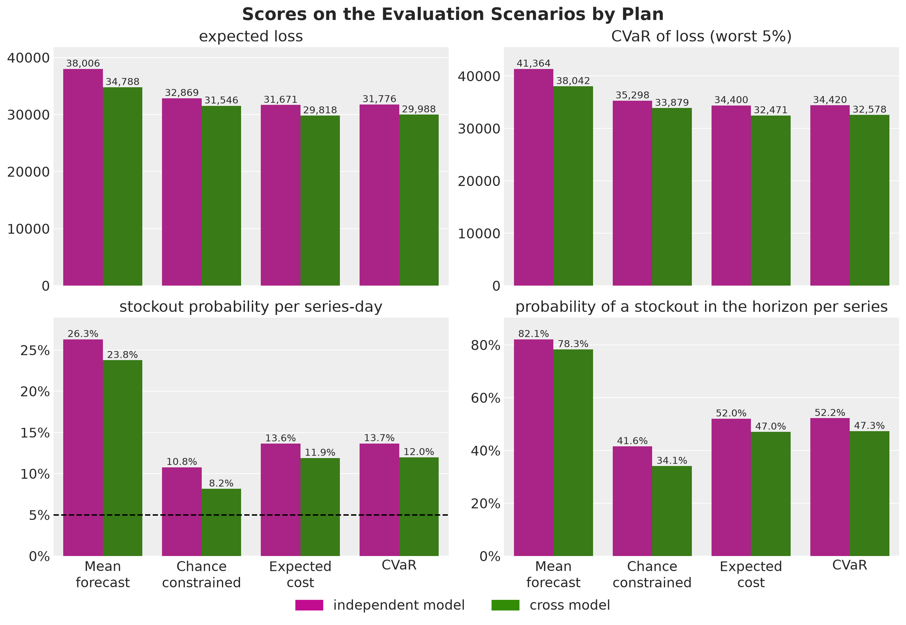
Under every rule the plan of the cross model costs less and runs out less often than the plan of the independent model.
Point forecast against distribution. The mean forecast plans are the most expensive and run out the most under both models. The first post found the same order on one series.
Chance constrained. These plans run out the least, and their expected loss is higher than that of the expected cost plans. They are still above the target of \(5\%\), the dashed line, and we come back to it in the Service Level section.
Expected cost and CVaR. The two rules give almost the same scores. On the evaluation scenarios the tail weight does not lower the tail loss.
Independent against cross. The cost of ignoring cannibalization depends on the rule. We take the expected cost rule as our measure, where the plan of the independent model costs about \(6\%\) more. This is our answer to the first question of the introduction.
Rule and model. The mean forecast plan of the cross model costs more than the expected cost plan of the independent model. Starting from the mean forecast plan of the independent model, the better rule saves more than the better model.
Next, we look at the three other scores of every plan: the expected loss and the CVaR on its own scenarios, and the loss on the realized future.
plot_scores(
results,
[Metric.OWN_EXPECTED_LOSS, Metric.OWN_CVAR, Metric.REALIZED],
title="Scores on the Own Scenarios and on the Realized Future",
nrows=3,
);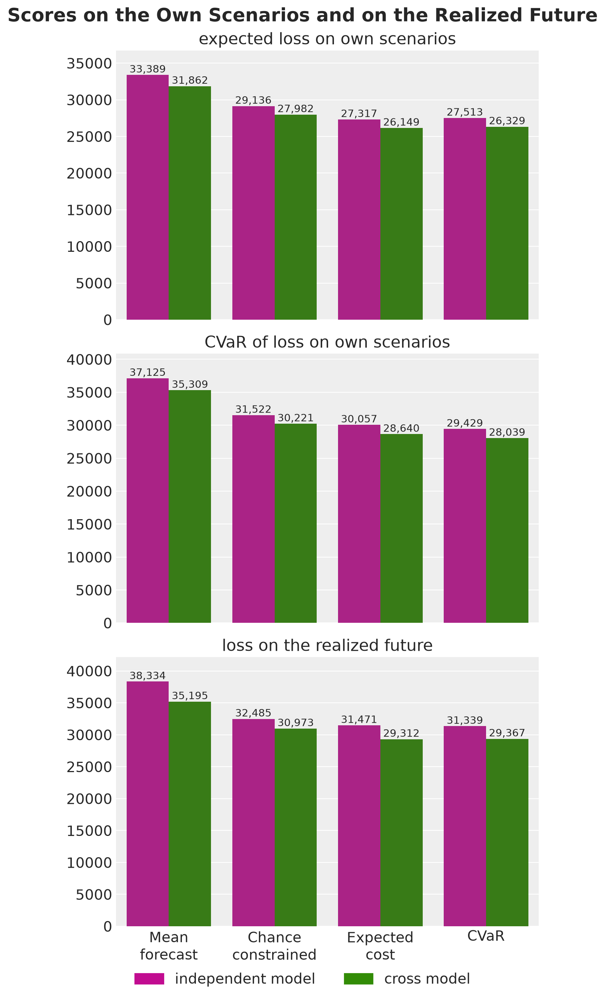
Own scenarios. Every plan looks cheaper on its own scenarios. On the evaluation scenarios its expected loss is \(9\%\) to \(16\%\) higher. In the first post the two agreed to within \(1\%\), because the held-out scenarios came from the same posterior.
Level error. The increase is consistent with a forecast that is wrong about the level of each series. The scenarios of a model are centered on its own estimate of the level, so they do not contain this error, and the evaluation scenarios do. Recall from the Parameter Recovery section that the \(94\%\) intervals of the level cover the truth for only about \(60\%\) of the series.
Ranking. Within a rule the order of the two models is the same on both sets, and on the realized future the plan of the cross model is the cheaper one too.
So we should not read the loss of a plan on its own scenarios as its cost.
Each of these scores is an average over the scenarios. The next figure shows the distribution behind the averages on the evaluation scenarios, with the mean and the central \(50\%\) and \(94\%\) of the loss of each plan.
rule_labels = [rule.value for rule in Rule]
losses_by_model = {
model: xr.Dataset(
{
"loss": (
("sample", "rule"),
jnp.stack(
[scores[rule, model].loss.sum(axis=-1) for rule in Rule], axis=-1
),
)
},
coords={"rule": rule_labels},
)
for model in Model
}
pc = az.plot_forest(
losses_by_model,
sample_dims=["sample"],
labels=["rule"],
color=[MODEL_COLORS[model] for model in Model],
figure_kwargs={"figsize": (12, 6)},
)
ax = pc.viz["plot"].sel(column="forest").item()
# room above the first row and below the last one
ax.margins(y=0.1)
ax.set(xlabel="loss on one scenario, summed over the series")
pc.add_legend("model", title="", loc="outside lower center", ncol=2)
pc.viz["figure"].item().suptitle(
"Loss Distributions on the Evaluation Scenarios", fontsize=18, fontweight="bold"
);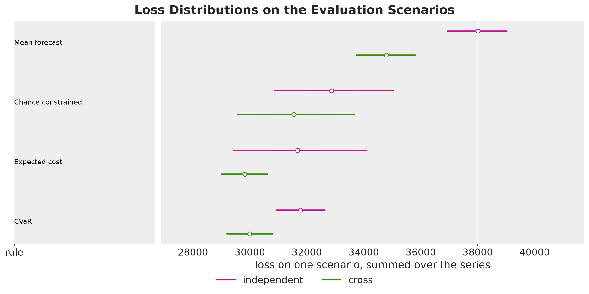
Within every rule the plan of the cross model has the lower distribution, but the \(94\%\) intervals of the two models overlap. The overlap alone does not say how often the plan of the cross model is the cheaper one, because both plans face the same scenarios.
We score the plans on the same scenarios, so we can also compare the two plans of a rule scenario by scenario. The next figure shows, for every rule, the loss of the plan of the independent model minus the loss of the plan of the cross model over the evaluation scenarios.
loss_difference = {
rule: (scores[rule, Model.INDEPENDENT].loss - scores[rule, Model.CROSS].loss).sum(
axis=-1
)
for rule in Rule
}
# the plan of the cross model is cheaper in every scenario under two of the rules
for rule in (Rule.MEAN_FORECAST, Rule.EXPECTED_COST):
assert bool((loss_difference[rule] > 0).all())
# and in more than 99% of the scenarios under the other two
for rule in (Rule.CHANCE_CONSTRAINED, Rule.CVAR):
assert float((loss_difference[rule] > 0).mean()) > 0.99
pc = az.plot_forest(
xr.Dataset(
{
"loss difference": (
("sample", "rule"),
jnp.stack(list(loss_difference.values()), axis=-1),
)
},
coords={"rule": rule_labels},
),
sample_dims=["sample"],
labels=["rule"],
visuals={
"trunk": {"color": "black"},
"twig": {"color": "black"},
"point_estimate": {"color": "black"},
},
figure_kwargs={"figsize": (12, 4.5)},
)
ax = pc.viz["plot"].sel(column="forest").item()
# room above the first row and below the last one
ax.margins(y=0.15)
ax.axvline(0.0, color="black", linestyle="--")
ax.set(xlabel="loss difference, independent minus cross")
pc.viz["figure"].item().suptitle(
"Paired Loss Difference on the Evaluation Scenarios",
fontsize=18,
fontweight="bold",
);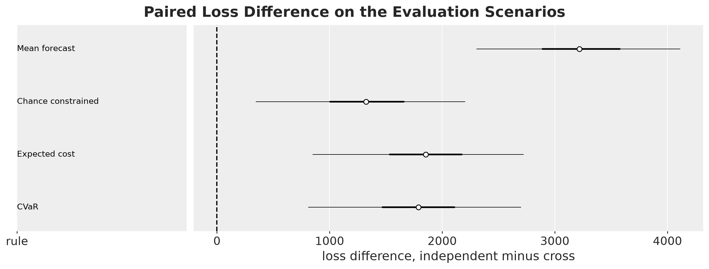
The plan of the cross model is cheaper in every one of the \(1{,}000\) evaluation scenarios under the mean forecast and the expected cost rules, and in more than \(99\%\) of them under the other two rules, which the assertions check. So the overlap of the previous figure is variation that both plans share.
Service Level
The chance-constrained plan asks for a stockout probability of at most \(\alpha = 5\%\) for every series on every day. The next figure shows the stockout probability on each day of the horizon on the evaluation scenarios, as an average over the series. The dashed line is the target.
def stockout_by_day(sim: Simulation) -> Float[Array, " horizon"]:
"""Share of the scenarios and series with a lost sale, on every day."""
return is_stockout(sim, solver.tol).mean(axis=(0, 1))
plot_days_by_rule(
{key: stockout_by_day(sim) for key, sim in scores.items()},
ylabel="stockout probability",
title="Stockout Probability by Day",
reference=(solver.alpha, rf"target $\alpha = {solver.alpha:g}$"),
);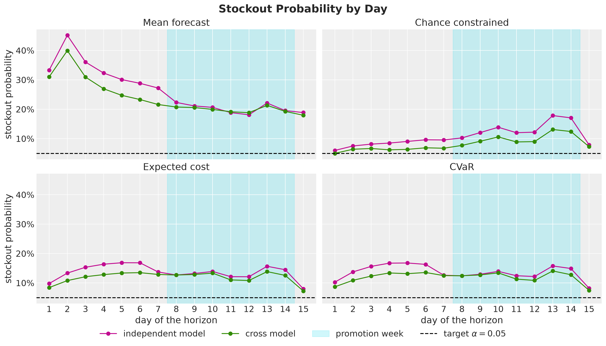
Mean forecast. The plans run out the most on every day, most of all on the first days of the horizon.
Chance constrained. The plans start close to the target and move away from it, most of all in the promotion week. The plan of the independent model is further from the target on every day.
Expected cost and CVaR. The two rules give almost the same curves. These rules do not target a stockout probability, and the frequency that they accept follows from the costs.
Independent against cross. Under every rule the plan of the independent model runs out more often on the first days of the horizon, which matches the low start of its forecast.
Two things can take a chance-constrained plan away from its target: the capacity and the forecast. To separate them, we build the plan of each model with and without the capacity, and we score both plans on the scenarios that built them and on the evaluation scenarios.
The left panel of the next figure scores the plans on their own scenarios and the right panel on the evaluation scenarios. The dashed lines are the plans without a capacity and the solid lines the plans with the capacity.
# the scenarios that score the plans of each model, one entry per panel
scenario_sets = {
"own scenarios": {model: draws[model].scenarios for model in Model},
"evaluation scenarios": dict.fromkeys(Model, demand_eval),
}
fig, axes = plt.subplots(ncols=2, figsize=(14, 5.5), sharey=True, layout="constrained")
for ax, (scenario_label, demand_by_model) in zip(
axes, scenario_sets.items(), strict=True
):
for model in Model:
for orders, linestyle, marker, capacity_label in [
(orders_chance_free[model], "--", "s", "no capacity"),
(orders_chance[model], "-", "o", "with the capacity"),
]:
sim = simulate_scenarios(
flat(orders), demand_by_model[model], initial_inventory, config
)
ax.plot(
horizon_days,
stockout_by_day(sim),
color=MODEL_COLORS[model],
marker=marker,
linestyle=linestyle,
label=f"{model} model, {capacity_label}",
)
mark_horizon_days(ax)
ax.axhline(
solver.alpha,
color="black",
linestyle=":",
label=rf"target $\alpha = {solver.alpha:g}$",
)
ax.yaxis.set_major_formatter(PercentFormatter(xmax=1, decimals=0))
ax.set(title=scenario_label, xlabel="day of the horizon")
axes[0].set(ylabel="stockout probability")
fig.legend(*axes[0].get_legend_handles_labels(), loc="outside lower center", ncol=3)
fig.suptitle(
"Service Level of the Chance-Constrained Plans", fontsize=18, fontweight="bold"
);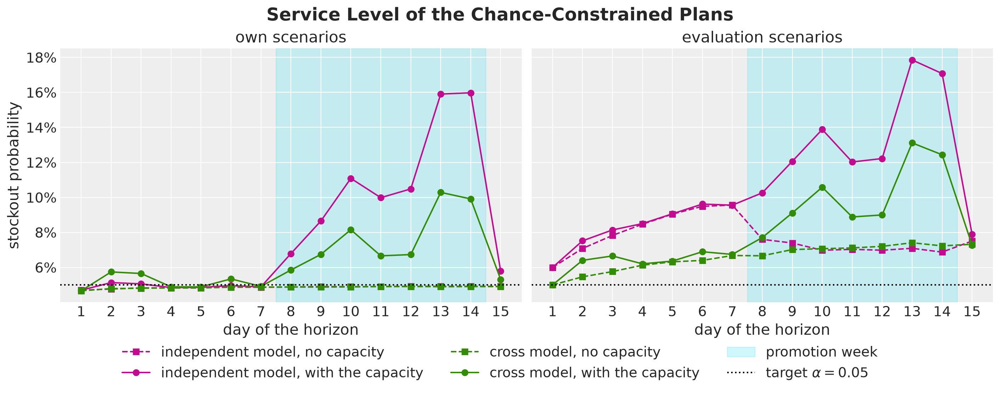
No capacity, own scenarios. Both plans hold the target on every day. This is the guarantee of the quantile, which the assertion checked series by series.
No capacity, evaluation scenarios. The same plans run out more often than the target, and in the first week the plan of the independent model more than the plan of the cross model. The plans are the same, so the difference comes from the forecast.
With the capacity. In the first week the capacity changes little. In the promotion week the orders that the rule asks for do not fit the capacity of the stores, the projection lowers them, and the stockout probability rises under both models.
So the target holds only on the scenarios of the model and without the capacity. The forecast error raises the stockout probability on every day, and the capacity raises it mainly in the promotion week.
Cost Decomposition
From here on the gap is the expected loss of the independent plan minus the expected loss of the cross plan on the evaluation scenarios. A positive gap means that the independent plan costs more. For the whole chain the gap is \(1{,}853\), the difference between the two expected losses of the scores figure.
The loss counts \(h = 0.1\) per unit left at the end of a day and \(p = 2\) per unit of unmet demand, so a gap of \(100\) is the cost of \(50\) lost sales. The loss is a sum over series and days, which lets us split the gap by substitution group and by period of the horizon. The two models differ in the cross-price term, so we expect the gap to come from the groups with cannibalization.
Here is how to read the next figure:
Groups of bars. Each of the first five groups of bars is one substitution group, with its true cross elasticity under its name. The last one,
all groups, is the sum over the five substitution groups.Colored bars. A colored bar is the gap of the group in one period of the horizon, added up over the \(4\) products of the group and the \(10\) stores. The periods are the first week (days \(1\) to \(7\)), the promotion week (days \(8\) to \(14\)) and the last day (day \(15\)).
Black bars. A black bar is the gap of the group over the whole horizon, the sum of its three colored bars up to rounding.
Numbers. The number on a bar is its gap in the units of the loss.
def expected_loss_by_series(
sim: Simulation, days_slice: slice
) -> Float[Array, " n_series"]:
"""Expected loss of every series over some days of the horizon."""
holding = sim.inventory[:, :, days_slice].sum(axis=-1).mean(axis=0)
lost_sales = sim.lost_sales[:, :, days_slice].sum(axis=-1).mean(axis=0)
return config.holding_cost * holding + config.lost_sales_cost * lost_sales
def gap_frame(sim_independent: Simulation, sim_cross: Simulation) -> pl.DataFrame:
"""Expected loss of one plan minus that of the other, per series and period."""
frames = [
pl.DataFrame(
{
"product": panel.series_to_product.tolist(),
"period": period.value,
"gap": (
expected_loss_by_series(sim_independent, days_slice)
- expected_loss_by_series(sim_cross, days_slice)
).tolist(),
}
)
for period, days_slice in PERIODS.items()
]
return pl.concat(frames).join(
products.select("product", "group", "cross_elasticity"), on="product"
)
gap_long = gap_frame(
scores[Rule.EXPECTED_COST, Model.INDEPENDENT],
scores[Rule.EXPECTED_COST, Model.CROSS],
)
TOTAL = "whole horizon"
# the gap by group and period, with an extra period for the whole horizon and an
# extra group for the whole chain
gap_group_period = gap_long.group_by("group", "cross_elasticity", "period").agg(
pl.col("gap").sum()
)
gap_group_total = (
gap_group_period.group_by("group", "cross_elasticity")
.agg(pl.col("gap").sum())
.with_columns(period=pl.lit(TOTAL))
)
gap_by_group = (
pl.concat([gap_group_period, gap_group_total.select(gap_group_period.columns)])
.sort("group")
.with_columns(
pl.format("group {}\ncross elasticity {}", "group", "cross_elasticity").alias(
"label"
)
)
)
gap_all = (
gap_by_group.group_by("period")
.agg(pl.col("gap").sum())
.with_columns(label=pl.lit("all groups"))
)
PERIOD_COLORS = {period: color for period, (color, _) in PERIOD_STYLES.items()}
fig, ax = plt.subplots(figsize=(14, 6), layout="constrained")
sns.barplot(
data=pl.concat([gap_by_group.select(gap_all.columns), gap_all]),
x="label",
y="gap",
hue="period",
hue_order=[*[period.value for period in Period], TOTAL],
palette={**PERIOD_COLORS, TOTAL: "black"},
errorbar=None,
ax=ax,
)
for container in ax.containers:
ax.bar_label(container, fmt="{:,.0f}", fontsize=11, padding=2)
ax.axhline(0.0, color="black")
ax.margins(y=0.15)
ax.get_legend().remove()
ax.set(xlabel="", ylabel="expected loss gap")
fig.legend(loc="outside lower center", ncol=4)
fig.suptitle(
"Gap by Group and Period, Independent Minus Cross", fontsize=18, fontweight="bold"
);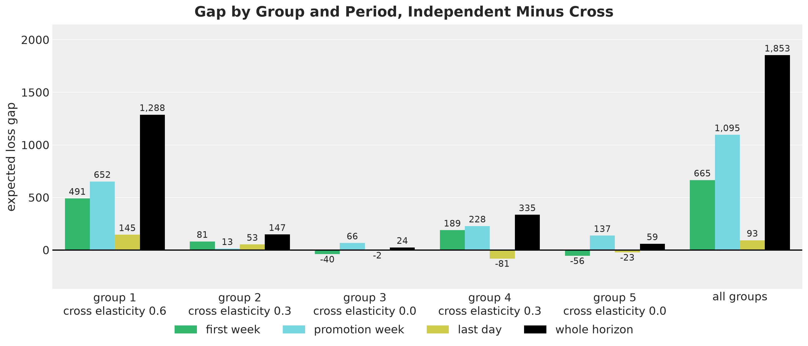
As expected, almost all of the gap is in the three groups with cannibalization.
Group \(1\). It carries about \(70\%\) of the gap. It has the largest cross elasticity and a sibling promotion in the last week of the history, and it has a large gap already in the first week, before any promotion of the horizon. Recall from the Demand Scenarios section that the independent forecast of three of its products starts low.
Groups \(2\) and \(4\). They carry a much smaller part of the gap. Their cross elasticity is half that of group \(1\), and no sibling of theirs was on promotion in the last week of the history.
Groups \(3\) and \(5\). They have no cannibalization and almost no gap over the horizon. Their gap is negative in the first week and positive in the promotion week, and we come back to it in the Capacity Sensitivity section.
Periods. The gap arises in the first week and in the promotion week, and the last day adds little.
Next, we look at the stockout probability per day under the two expected cost plans, averaged over the series of each role.
fig, axes = plt.subplots(
nrows=2, ncols=2, figsize=(14, 9), sharex=True, sharey=True, layout="constrained"
)
for k, (ax, role) in enumerate(zip(axes.flat, Role, strict=True)):
is_role_series = role_mask[role][panel.series_to_product]
for model in Model:
key = (Rule.EXPECTED_COST, model)
stockout_by_series = is_stockout(scores[key], solver.tol).mean(axis=0)
ax.plot(
horizon_days,
stockout_by_series[is_role_series].mean(axis=0),
"o-",
color=MODEL_COLORS[model],
label=plans[key].name,
)
mark_horizon_days(ax)
ax.yaxis.set_major_formatter(PercentFormatter(xmax=1, decimals=1))
ax.set(
title=role,
xlabel="day of the horizon" if k >= 2 else "",
ylabel="stockout probability" if k % 2 == 0 else "",
)
fig.legend(*axes[0, 0].get_legend_handles_labels(), loc="outside lower center", ncol=3)
fig.suptitle("Stockout Probability by Day and Role", fontsize=18, fontweight="bold");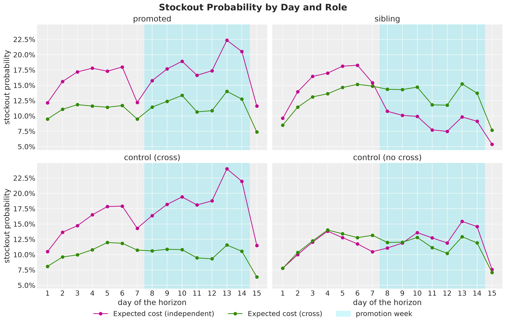
The two plans differ most on promoted, sibling and control (cross).
promotedandcontrol (cross). The independent plan runs out more often on every day, and the difference is the largest in the promotion week.sibling. The independent plan runs out more in the first week and less in the promotion week, where it orders more than the cross plan.control (no cross). The two plans are close on every day. The independent plan runs out a little less on the days around the start of the promotion week and a little more later in it, which matches the negative first-week bar and the positive promotion-week bar of group \(5\) in the previous figure.
This answers the second question of the introduction. At \(\kappa = 1.05\) almost all of the extra cost is on the three groups with cannibalization, and it arises in the first week and in the promotion week.
The extra cost comes from the forecast of the independent model in two ways:
Low level. The forecast is lower than the forecast of the cross model on the groups with cannibalization, most of all where a sibling was on promotion in the last week of the history. The level carries over the whole horizon, and the independent plan orders less on
promotedandcontrol (cross)on almost every day and runs out more often on every day. Recall from the order gap figure that the mean forecast plans, which are at capacity on a few days only, show the same lower orders.Missing dip. In the promotion week the independent plan orders more for the siblings than the cross plan, so it holds more stock on them and runs out less. Where the capacity binds, these units also take room from the other products. This deepens the order gap of
promotedandcontrol (cross)in the promotion week, and it is where the promotion-week gap ofcontrol (no cross)comes from.
Capacity Sensitivity
We have seen the gap between the two expected cost plans at one capacity multiple. Here we check whether the capacity creates the gap or only changes it.
Recall that the capacity of store \(s\) is \(C_s = \kappa \, R_s\). We sweep the capacity multiple \(\kappa\) from \(0.9\), where the capacity binds on a regular day, to no capacity at all, and solve the expected cost plan of both models at every value. Every value of \(\kappa\) scales the whole capacity vector, so the stores keep their proportions.
We score every plan on the evaluation scenarios. For every value of \(\kappa\) we record the expected loss of both plans, the gap, and the part of the gap that falls on the two groups without cannibalization.
%%time
kappas = [0.9, 1.0, 1.05, 1.1, 1.25, 1.5, float("inf")]
capacity_grid = jnp.array(kappas)[:, None] * regular_throughput[None, :]
# the mean forecast plan depends on the capacity through the projection, so the
# sweep rebuilds it at every capacity and starts each solve from it
mean_plan_sweep = jax.vmap(mean_forecast_plan, in_axes=(None, 0))
solve_sweep = jax.jit(
jax.vmap(
partial(solve, config=config, solver=solver), in_axes=(None, None, 0, 0, None)
)
)
orders_sweep = {}
for model in Model:
orders_sweep[model], _ = solve_sweep(
draws[model].scenarios,
0.0,
mean_plan_sweep(unflat(mean_demand[model]), capacity_grid),
capacity_grid,
initial_inventory,
)
# from kappa = 1.25 on no store is at capacity on any day
for k in (kappas.index(1.25), kappas.index(1.5)):
shares = at_capacity(orders_sweep[model][k], capacity_grid[k], solver.tol)
assert float(shares.max()) == 0.0
# at kappa = 0.9 most stores are at capacity on every day
shares = at_capacity(orders_sweep[model][0], capacity_grid[0], solver.tol)
assert float(shares.min()) >= 0.7
GAP_ALL = "all groups"
GAP_NO_CROSS = "groups without cannibalization"
sweep_rows = []
for k, kappa in enumerate(kappas):
sims = {
model: simulate_scenarios(
flat(orders_sweep[model][k]), demand_eval, initial_inventory, config
)
for model in Model
}
gap_kappa = gap_frame(sims[Model.INDEPENDENT], sims[Model.CROSS])
gap_no_cross = gap_kappa.filter(pl.col("cross_elasticity") == 0)
sweep_rows.append(
{
"kappa": kappa,
**{
f"expected loss ({model})": float(sims[model].loss.sum(axis=-1).mean())
for model in Model
},
GAP_ALL: gap_kappa["gap"].sum(),
GAP_NO_CROSS: gap_no_cross["gap"].sum(),
}
)
sweep = pl.DataFrame(sweep_rows)CPU times: user 2min 8s, sys: 4.99 s, total: 2min 13s
Wall time: 37.2 sFirst, we look at the expected loss of the two plans against \(\kappa\). The figure shows the finite values of \(\kappa\). The assertion of the previous cell checks that from \(\kappa = 1.25\) on no store is at capacity on any day.
finite = sweep.filter(pl.col("kappa").is_finite())
# labels at the two ends of the sweep, at one and at the multiple of the previous
# sections
labeled = finite.filter(
pl.col("kappa").is_in(
[
finite["kappa"].min(),
1.0,
planning.capacity_multiple,
finite["kappa"].max(),
]
)
)
def label_points(ax: plt.Axes, column: str, *, above: bool = True) -> None:
"""Write the value of a column of `labeled` next to each of its points."""
for kappa, value in zip(labeled["kappa"], labeled[column], strict=True):
# above and to the right of the point, or below and to its left. The label of
# a negative value goes below, on its side of zero
up = above and value >= 0
ax.annotate(
f"{value:,.0f}",
(kappa, value),
textcoords="offset points",
xytext=(6, 6) if up else (-6, -6),
ha="left" if up else "right",
va="bottom" if up else "top",
fontsize=11,
)
def format_capacity_axis(ax: plt.Axes) -> None:
"""Dotted line at the multiple of the previous sections, margins and x label."""
ax.axvline(
planning.capacity_multiple,
color="black",
linestyle=":",
label=r"$\kappa$ of the previous sections",
)
ax.margins(x=0.15, y=0.15)
ax.set(xlabel=r"capacity multiple $\kappa$")
fig, ax = plt.subplots(figsize=(12, 6), layout="constrained")
# the labels of the independent plan go above its line and those of the cross plan
# below
for model, above in zip(Model, (True, False), strict=True):
column = f"expected loss ({model})"
ax.plot(
finite["kappa"],
finite[column],
"o-",
color=MODEL_COLORS[model],
label=plans[Rule.EXPECTED_COST, model].name,
)
label_points(ax, column, above=above)
format_capacity_axis(ax)
ax.set(ylabel="expected loss on the evaluation scenarios")
fig.legend(loc="outside lower center", ncol=3)
fig.suptitle("Expected Loss as the Capacity Tightens", fontsize=18, fontweight="bold");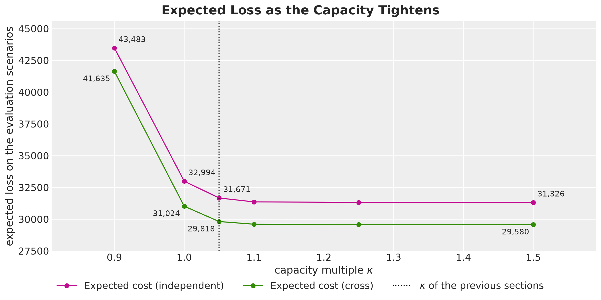
The cross plan is the cheaper one at every capacity multiple. From \(\kappa = 1.25\) on the two losses do not change, since the capacity no longer binds. Below that both losses rise, slowly at first and then fast.
At the labeled multiples from \(\kappa = 1\) on, the independent plan costs about \(6\%\) more than the cross plan. At \(\kappa = 0.9\) most stores are at capacity on every day under both plans, which the assertion of the sweep checks, and both losses are much higher. The gap in units of the loss stays about the same, as the next figure shows, so the relative cost is lower there, about \(4\%\).
Next, we look at the gap between the two plans, for all groups and for the two groups without cannibalization.
fig, ax = plt.subplots(figsize=(12, 6), layout="constrained")
for column, style in [(GAP_ALL, "o-"), (GAP_NO_CROSS, "s--")]:
ax.plot(finite["kappa"], finite[column], style, color="black", label=column)
label_points(ax, column)
ax.axhline(0.0, color="black", linewidth=1)
format_capacity_axis(ax)
ax.set(ylabel="expected loss gap, independent minus cross")
fig.legend(loc="outside lower center", ncol=3)
fig.suptitle("The Gap as the Capacity Tightens", fontsize=18, fontweight="bold");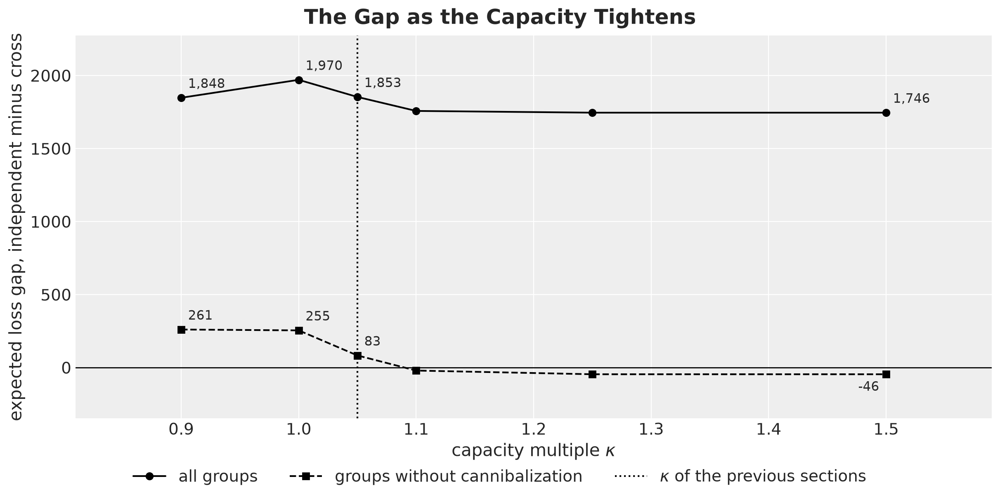
We see two things in this figure.
All groups. The gap is there at every capacity multiple. It is the lowest from \(\kappa = 1.25\) on, where no store is at capacity, and the highest at \(\kappa = 1\).
Groups without cannibalization. Their gap is close to zero from \(\kappa = 1.1\) on and positive below that. The forecasts of the two models are close on these groups, and in an expected cost plan the capacity is the only link between the groups. We therefore read their gap as an effect of the capacity.
This answers the third question of the introduction. The cost of ignoring cannibalization is there without a capacity, and the capacity changes its size by little. When the capacity binds, a part of the gap falls on products whose forecasts are almost the same under both models.
Conclusion
Key Findings
These findings come from one synthetic panel and one seed, so we state them as points to check on other data sets.
Cost of ignoring cannibalization. The plan of the independent model, the one without a cross-price term, is the more expensive one under all four decision rules.
Start of the forecast. The level of the independent model can follow the dips of the siblings down. When a promotion ends shortly before the forecast starts, the forecast of the siblings of the promoted product can start low and stay low over the horizon, and the plan runs out of them more often in the first week.
Promotion week. The independent model does not expect the siblings of a promoted product to dip. Its plan orders more for the siblings, and where the capacity binds this leaves less room for the other products of the store.
Shared capacity. The cost of ignoring cannibalization is there without a capacity. When the capacity binds, a part of it falls on products whose forecasts are almost the same under both models.
Decision rule. Under both models the mean forecast plan is the most expensive one, as in the first post.
Aggregate forecast scores. Scores over all series and days can hide the difference between two forecasts. Here the aggregate scores of the two models are close, and the difference shows in the forecast of the siblings in the promotion week and in the start of the forecast.
Service level. The forecast error and a binding capacity both raise the stockout probability of a chance-constrained plan above its target.
Scores on the own scenarios. Every plan looks cheaper on the scenarios of its own model than on the evaluation scenarios.
Model Limitations
Mean-field level. The guide is mean-field on the level and on the drift scale. Its intervals cover the true level at the end of the history for about \(60\%\) of the series and the drift scale for about half of the series, and every plan costs more on the evaluation scenarios than on its own scenarios. On real data we would compare the guide with NUTS on a subset of the series.
Independent series. The generator has no shock common to a store or to the chain. Real demand has common shocks, such as weather and holidays, and we did not test the decision rules in that setting.
No cross-period effects. A promotion in the generator lifts the demand of its own week and leaves the following weeks untouched. van Heerde, Leeflang and Wittink (2004) attribute about a third of the promotion bump to demand borrowed from other periods. A dip after a promotion would matter for a plan that starts right after a promotion week.
Synthetic truth. The checks against the true parameters, the true level and the evaluation scenarios exist only because we simulated the data. The cross model is also the model that generated the data, so the comparison is the best case for it. On real data we would rely on backtests that start the forecast on several days.
One promotion pattern. The promotions are chain-wide (a product is on promotion in every store at once), and the cross elasticities are constant within a group and over time. Store-specific promotions and elasticities that change with the depth of the cut or the display support would need their own terms.
No recourse, no lead time. All orders are fixed today and arrive on the day we planned them for. A rolling horizon that re-forecasts and re-solves every day could correct the low start and the dip of the siblings after a few days of sales. A lead time would move the decision to the stock projected at the delivery date.
Unconstrained demand history. The models see the demand itself. In a real lost-sales setting the history is sales, which are censored on the days the shelf was empty, and the dips of a sibling promotion would mix with the dips of an empty shelf.
Cost assumptions. A lost sale costs the same margin on every product and day, and leftovers keep their value.
Continuous orders. The orders are real numbers. A store orders whole units, and on products that sell a few units per day rounding the orders could matter.
Forward pass under a capacity. The chance-constrained plan projects the quantile orders of every day and does not look ahead. It therefore does not build stock before a week in which the capacity binds. A plan that keeps the stockout probability low under a capacity would need a solver of its own.
One panel. The numbers come from one panel, one promotion calendar and one seed. We expect the size of the gap to depend on where the last promotions of the history fall, and the tightness of \(\kappa = 1.05\) to depend on which products are promoted.
Same multiple for every store. Every store has its own capacity, but all capacities are the same multiple of the regular throughput of their store. So no store is much tighter than the others, with a load between \(94\%\) and \(100\%\) in the promotion week. The projection and the solver take any positive capacity vector, but we did not study a chain with a few much tighter stores.
Recommendations
Model the siblings when you plan a promotion. The cross-price term is one matrix of shrunk coefficients, and the data identify it from the weeks in which a sibling was on promotion. Without it the plan loses sales before the promotion, on the products whose siblings were just promoted. During the promotion the model does not expect the siblings to dip, and the plan orders more for them.
Look at the promotion calendar of the last weeks. If a sibling of a product was on promotion just before the last day of the history, a model without a cross-price term can start that product low. A backtest that starts right after a sibling promotion shows whether it does.
Keep a control group. A group that the model change should not affect is a check of the comparison. Compare its forecasts under the two models. Its plans can still differ, since the capacity links it to the other groups.
Report how tight the capacity is. When the capacity binds, a part of the cost of a forecast error falls on other products of the store. Report, for every store, the mean demand as a share of its capacity in the promotion week. With a tight capacity, also check whether the service level that you target is feasible.
Split the forecast scores. The aggregate scores of the two forecasts are close here. Split them by role and period, and compare the cost of the plans.
Next Steps
Promotion choice. Make the discount, the week and the products of the promotion decisions, with the cannibalization in the objective.
Store-specific elasticities. Let the own and cross elasticities vary by store around a product-level mean, with partial pooling, so that stores with a different mix of customers get their own promotion response.
Lead time and rolling horizon. Add a pipeline of in-transit orders to the carry of the simulator and wrap the solve in
numpyro_forecast.backtest, so that each window re-forecasts, re-solves and commits one order. Several starting days would also average over the promotion calendar of the last weeks.Censored sales. Replace the demand history by a sales history with a censored likelihood on the days with an empty shelf, as in the censored demand example of
numpyro_forecast.A guide with correlations on the level. Replace the mean-field guide on the increments of a series by a guide that keeps their correlations, for example a low-rank one. Then measure how much of the difference between the loss on the own scenarios and the loss on the evaluation scenarios goes away.
Common shocks. Add a shock common to the series of a store to the generator and to the model, and check whether the CVaR plan then differs from the expected cost plan.
Costs per product. Give every product its own lost margin and its own holding cost in the loss. The projection does not change, because the capacity counts units. Then check which products the plan favors when the capacity binds.
References
Orduz, J. (2026). From Forecasts to Decisions: Inventory Planning with Probabilistic Programming.
Szabłowski, B. (2026). One Global Model, Many Behaviors: Stockout-Aware Feature Engineering and Dynamic Scaling for Multi-Horizon Retail Demand Forecasting with a Cost-Aware Ordering Policy (VN2 Winner Report). arXiv:2601.18919.
van Heerde, H. J., Leeflang, P. S. H. and Wittink, D. R. (2004). Decomposing the Sales Promotion Bump with Store Data. Marketing Science, 23(3), 317-334.
Duchi, J., Shalev-Shwartz, S., Singer, Y. and Chandra, T. (2008). Efficient Projections onto the \(\ell_1\)-Ball for Learning in High Dimensions. Proceedings of the 25th International Conference on Machine Learning, 272-279.
Blei, D. M., Kucukelbir, A. and McAuliffe, J. D. (2017). Variational Inference: A Review for Statisticians. Journal of the American Statistical Association, 112(518), 859-877.
Kingma, D. P. and Ba, J. (2015). Adam: A Method for Stochastic Optimization. International Conference on Learning Representations.
Shapiro, A., Dentcheva, D. and Ruszczyński, A. (2021). Lectures on Stochastic Programming: Modeling and Theory, third edition. SIAM.
Pyro developers. Forecasting with
pyro.contrib.forecast, the module whosetime_reparamoptionnumpyro_forecastports.NumPyro developers. Automatic Guide Generation, the documentation of
AutoGuideListand the other automatic guides.Orduz, J. NumPyro Forecast documentation.
Orduz, J. PyData Berlin 2025: Introduction to Stochastic Variational Inference with NumPyro.
Orduz, J. Haar and DCT Time Reparameterization in NumPyro. Personal blog.
PreliZ developers. PreliZ documentation.
DeepMind. Optax documentation.